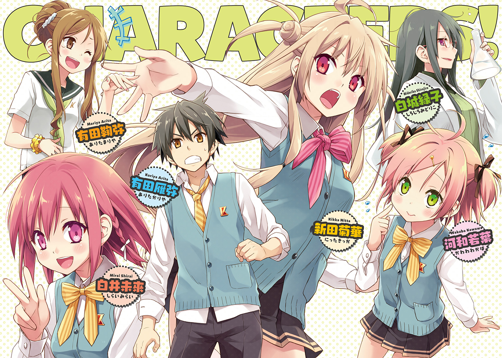

| 始まらない終末戦争と終わってる私らの青春活劇 2 | |
| 王雀孫 | |
この本は縦書きでレイアウトされています。
また、ご覧になる機種により、表示の差が認められることがあります。

 ダッシュエックス文庫DIGITAL
ダッシュエックス文庫DIGITAL
始まらない終末戦争と終わってる私らの青春活劇２
王雀孫
始祖たる君に芽生え来たらむ
《終末戦争》の彼方、《特異点》を迎えるに至り、人類は人類を超えた高次存在《大いなるもの》へと昇りつめているであろう。
それは旧来の知的生命体が、神あるいは創造主などと定義して畏れ敬う存在に近しい。
近しいが、似て非なるものだ。
それはより全きものであり、言うなれば世界そのもの、大宇宙マクロコスモスそのものなのだ。《大いなるもの》にとって世界は机の上に広げられた一遍の歴史書でしかなく、彼――ないし彼ら――は要あらば自在にその項を操り、任意のままに編むことさえ不可能ではないという。
翻って、いずれ人という個の集合は、つまり世という全になるのである。
その過程において、彼ら――および我ら――は幾星霜もの間、幾世代もの交配を繰りかえしながら、様々な機能の取捨選択を経て漸次ゆるやかに進化してゆく。
旧人類から新人類へ。新人類から更なる上位種へ。更なる上位種から《大いなるもの》へ。
いま進化という大洋の渚に立ったばかりの我らは、遥かなる道程を歩きだして間もない《途中の種》である。
さりとて、これまでの種とは確かに異なる命題を持った次世代の人類である。
かくも新しき種でありながら、その務めにいまだ無自覚な同胞も少なくない。
我らが我らの代において務めるべきは、理想に盲いた同志の《芽生え》を促し、まずは来たる《終末戦争》に備えることである。
《終末戦争》の先に高次への飛翔は来たる。しかして《終末戦争》の勃発は世界の終焉、すなわち特異点の喪失をも齎すものなのだ！
太陽系第三惑星極東《組閣》知的生命体高次精神運動調査研究員・新田菊華
① 近況 ～相変わらずのウチら～
第二部、第一章、幕前。
とき――ある七月の放課後。
ところ――埼玉県Ｓ市内、リストランテ『ジュール・セザール』。
卓を囲む兄妹と、演劇部あらため喜劇部部長。薄型端末に綴られた痛々しい怪文書を読まされて、あんぐり口を開けてしまった主人公・有田雁弥――つまり僕。
「まるで成長していない......」
読めと言われただけだったけれど、求められるでもなく感想が一言口をついて漏れていた。それほどに彼女は、新田菊華は、なにも変わっていなかったのである。
「まじか......あっさり厨二女に逆戻りか......」
「なになに、見して見して」
鞠弥が身を乗りだしてくる。本日も無駄に好奇心旺盛な妹へ薄型端末をパスして、僕はそのまま白い視線を向かいの席へ投じた。
「部長......どうやらアナタ、まったく反省する気はないみたいっすね......」
「なんぞえ？」
対面に鎮座まします新田菊華先輩、つまり演劇部あらため喜劇部部長は、まさしく反省の色が見えない奇怪な作り声で僕の神経を逆撫でした。
「その方、反省と申したか？ はて、妾に如何な顔あって行いを省みねばならんのじゃ。まったく異なことを申す童よのう」
新田先輩はご丁寧にも持参してきた黄金の扇子をはたはたと優雅に揺らす。
元来定まった自我というものを持たないため任意にころっころ性格を変える、という設定を自らに課しているこの痛々しい厨二女。今日の《換装式疑似人格》は、オリエンタル風味の女王様だか貴族様だか、そんなようなアレみたいだ。
ていうか。
「まだソレ続けるんすね......」
僕はうんざり顔で苦情を述べた。
「ソレとはなんぞえ？」
はんなり顔でスルーされましたけども。
つまりソレとはまさしくそれのことですよ。その言動というかその態度のことですよ。
「その人格を変えるとか新しい人類とか、そういう一連の厨二設定のことですよ新田先輩」
「設定、とな？ はて、不可思議な戯れ言を申す。有田雁弥、そなたの戯れ言、妾にはとんと分からぬわ」
それはこっちの台詞だ。こっちこそ分からぬわ、新田菊華そなたの戯れ言。
「アッハ！ なにこれ完全イミフ！」
ほうら、うちの鞠弥も意味不明と申して匙と薄型端末を投げてしまったよ。
「菊華たん、今日も出してンねェー？ 電波バリ５じゃーん、ウっケるー」
ウケたらしいけども。
「え、何がウケるの？ 君コレどっかに笑える要素あった？」
思わず怪文書を拾いあげて妹に訊ねてしまう兄です。
「んにゃ、パリワカ」
さっぱり分からないの意。うちの妹はしばしばオリジナル略語を発します。
「分からないなら不用意にウケるなよ」
「なーんで。分かンないからウケんじゃん」
兄の正論に対し、妹の禅問答みたいな反論。分からないから面白い。成程そこだけ取れば一理ある。一理あるけど腑に落ちない。僕はぐぬぬと歯嚙みする。
「ぐぬぬ」
歯嚙みだけでは飽き足らず、三文字そのまま発声してしまいましたけども。
「有田雁弥、そなたは相も変わらず閉じとるのう。少しは妹君を見習うたら宜しい、ほほほ」
女王気取りの新田部長は黄金の扇子でそよそよと煽りたてる。
「かくも言わんや有田鞠弥、ぬしの心はよう開いておる」
ぱちん、と音を立てて閉じた扇子の先で、今度は僕の妹を指して絶賛。
「頭で理解あたわずとも魂が共鳴しておるのじゃろう。そなた、兄より《芽生え》に近いやもしれぬな」
なんだと。兄より優れた妹などいるわけがない。一瞬ジャギ様ばりの劣等意識が爆発しそうになったが、いや待とう、いったいどこに張り合う要素があるというんだ。素数を数えて冷静になると、僕はとくに侮蔑の言葉を浴びていない気がする。
共鳴してない？
《芽生え》が遅い？
えっ、それ悪口？
うーん、ちょっと意味が分からないですね。
そして新田先輩、扇子で口元を隠して「ほほほ？」みたいな目で挑発なさってる御様子ですけども、すみません、僕そもそもいま何の話題なのかすらよく分かってない時点でその手にまんまと乗ってあげられません。
え、ほんと、いま何の話？
「ちょー待。チィ兄、いぇい」
分かってないくせにとりあえずドヤ顔でＶサインしちゃう妹とかいましたけども。
「ハァー......」
結局こうなるのか。僕は背もたれに体重を預けて天井を仰いだ。
それこそ書物の項でもめくるみたいに、僕は数日前の記憶を遡る。
〝みんながライブに出たがってる。部長として何とかしたい〟
立入禁止のあの旧部室で、僕と彼女（と誰かもう一人モブの眼鏡が途中で混ざった気もするけどちょっとカンジの悪い眼鏡だったから僕の歴史書には記してあげません）のあいだに交わされた秘め事。
〝演劇部はなくなっちゃったけど、新しい部を作れば校則的にはまだライブに出られる可能性があるの〟
青く瘦せた声。要領を得ない言葉運び。
〝いま、うちには脚本を書けるひとがいなくて、みんなで相談しながら進めてるんだけど〟
それまでのどんな《換装式疑似人格》よりかぼそくて、聞き取りづらかった。
〝普段からなにか面白いことをして、それを脚本にすればいいんじゃないかってことになって〟
だけど、それまでのどんな《換装式疑似人格》よりも生々しく、真に迫っていた。
〝あの、だから、有田君が不快な思いをしちゃったのなら、ほんと、ごめんなさい〟
僕はそこに、ようやく仮面の剝がれた、素のままの新田菊華を見た気がしたんだ。
人見知りで恥ずかしがり屋で対人恐怖症の、自らに役割を与えなければ世界の空気に触れることすらままならない、ほんとうの彼女。
そしてあの言葉だ。
何故だか血の巡りが熱くなるあの言葉――
『世界は喜劇だ』
――旧演劇部室に掲げられた毛筆の金科玉条。
気付けば僕は叫んでいた。
カンジの悪いモブ眼鏡に。
こんな最下層の僕を頼ってくれた彼女に。
そして、ただじっと息を殺してやり過ごすつもりだった、無機質の高校生活に。
〝喜劇部、脚本担当！ 一年Ａ組、有田雁弥です！〟
そのとききゅっと握ってくれた震える手の体温を、僕は数日が経った今でも鮮明に覚えている。
それは灼けた鉄で捺されたみたいなものだ。おそらく否が応でもずっと僕の心に残りつづけるんだろう。
※ ※ ※
てなもんでしたからね。
ある日とつぜん（旧）演劇部のお姉さま方に押しかけられて、何が何だか分からぬまま彼女らの思惑に付き合わされていたこれまでに比べれば、喜劇部（仮）という新団体を立ちあげて演芸会出場を目指す、なんて明確な指針が提示されただけでも大きな進歩。
というより正直ようしやったるぞ！ ッシャアアア！的な気分になったりもしたのだけど。
だけど。
いざ部長が申請した創部届けは、生徒会から「喜劇も演劇も同じやんけ！ 看板変えただけの復部なんて認められんで！（意訳）」と、ある意味ごもっともな理由でいまだ受理されず。
新田菊華さんの方も、あの一件でめでたく厨二キャラを封印して、今後一生あの幸薄そうな人見知りモードでいくのかと思いきや――
「言うなれば世界は一遍の物語じゃ。いま我らは登場人物の一人に過ぎぬが、いずれ《大いなるもの》に接続することで本の読み手に戻るということよ、ほほほ」
――結局いまだコレなわけで。はぁー。
「やーば、まじだしウケる」
またウケてるしねマイシスター。てか、なんでもウケるねマイシスター。
「え、まさか意味わかんの？」
「にゃー？ ミリワカ」
一ミリも分からないの意。うちの妹はしばしばオリジナル略語を発します。
「したっけ菊華たんは分かってンしょー？ しゅーまつ何たらとかァー、ぐれーと何たらとかァー、その辺これから具体的にどーすりゃいいのかァーとか」
「ほ、ほ、ほ......ほっ？」
鞠弥の悪意なき問いに、新田部長の高笑い with扇子がはたと止まった。
「そ、それは......無論じゃ......ぞえ」
無論分かってるってわり語尾が消え入りそうなんですけど新人類さん。
「無論、すべて分かっておる。しかしじゃな......ええ、いまはまだ駒を進めるときではないのじゃ......」
オイ女王。なんか後半、微妙に例の老婆入ってきてないか？
「いまだ個たるわしらの《記憶容量》にはリミッターがかかっておる。本来的には世界の真理と繫がっておるのじゃが、悲しいかな今はまだ、仮初めの接続に著しい制限が課されておるのじゃ」
「へー」
ていうか先輩、ソレもう完全に例の老婆です......困ったとき恒例・煙巻きバアさんです......
そして、そいつ出てくるたび僕もうげっそりです......
「なんていうか......振り出しに戻った気分......」
「振り出しとは異なことを。そなたは双六でもいたしておったのかえ？」
あ、老婆帰った。おかえり女王さま。
「喩えですよ。喩えるなら人生ゲーム・高校生活編。つって」
いや訂正。厳密に言えば「新たなる」高校生活編つって。より具体的には「新田菊華という珍妙な生き物に目を付けられてから編」つって。
ちなみにそれ以前の高校生活編、またの名を「ぼくが最下層に落ちるまで編」は絶版商品です。そっちもそっちで充分黒歴史なので、記憶の闇に沈めてしまいましょう。世界はいま喜劇です。つって。
「ほう、そなたは世界を遊戯盤に見立てておるのかえ。いささかハイカラ趣味が鼻持ちならぬ気もせなんだが、少しは開かんたる《芽生え》の意思を感じるのう。良き哉、良き哉。ほほほほほ」
なんか知らんけど誉められてたのは謎です。
「ゲームとでも思ってなきゃやってらンないっすよ」
などと皮肉めかして言い返してやった僕ですけども、それは実際のところ、良くも悪くも的なニュアンスであったりもするのです。
まるでゲームみたいに、何が起こるか分からない、期待半分・不安半分。みたいな。それが新たなる高校生活編。つって。
あ、いや、言いすぎた。せいぜいプラスに見積もっても期待三割・不安七割ぐらいだな、新たなる高校生活編。
「あんちょー、菊華たん」
それより妹の呼びかけ語が日々適当を極めてゆくのです。今のはたぶん「あっ、んーとね、ちょっといい？」を略した「あんちょー」です。覚えなくて結構です。彼女の略語はキホンその場のノリなので生涯二度とは使われないものが大半です。菊華たん女王もノリで鞠弥に振りむきました。
「なんぞえ、妹君」
「もしかゲームだったら、うちのチィ兄どんな感じなん？ いま順位的に」
「さてのう。まだまだ《入盤》したばかりじゃて、言うて最下位じゃろ」
「アッハ、笑う！ そーだし、さっき自分で振り出しに戻るたら言ってた言ってた」
「後発の妹にさえ抜かれるとはのう、まっこと不甲斐なき兄もいたものじゃて」
あのう、えーと......鞠弥さん＆新田さん？
なんか好き勝手シャベくってるみたいですけども、そのゲームっていったいゴールは何処なんですかね。
ちなみに僕がプレイしてるのは『有田雁弥の青春活劇 ～新たなる高校生活編～』なんですけど。決して『終末戦争の果てに ～目指せ人類グレートシング編～』じゃあないんですけど。
「うぇーい。うちチィ兄に勝ってるー、いぇいいぇい」
いや、ドヤ顔でＷピースされたって、こちとら何に悔しがればいいのか分かりませんしね......？
「ほほほ。有田雁弥、ぬしもそろそろ本気を出さねば来世で苦労するぞえ」
いえ、そんな社会に出てから苦労するわよみたいに言われたところで、こちとら何から何までピンときませんしね......？
「チィ兄、ノリ悪ぅー。何そのシラけた顔ー」
シラけてない、普通の顔だ。妹の因縁に、兄は正論で迎えうつ。
「なに言ってんの。むしろ感謝してよ。俺まで一緒になって大宇宙マクロコスモスとか言いだしたら、誰がツッコミやればいいの。三人で永遠にボケ倒したらいよいよだからね」
「............」
よし論破。妹は完全に沈黙......するわけないよね。知ってた。
「うーわ、ガチ引くわこの男。ホント妹やめたい。まじ陰キャの友ゼロとか、兄としてナシ寄りのナシだわ」
世の中、論破したら負け。うちの上の兄がよく言ってた。相手に負けたと感じさせないで勝つことが肝要なんだってさ。知らねえよ。ていうか、誰が陰気キャラの友達ゼロ人だ、体重バラすぞこの野郎。
「ちなみに申さば、我が部で現在もっとも上位におるのは、おそらく河和若葉だぞえ」
うるせえ黙ってろババア。知るかそんなん。何が河和だ。誰だそいつ。かわわだと？ あたかも女神のごとき名前だな。ちょっと拝みたくなっちまったぜ。尊き哉、尊き哉......はわわーん......って！ 河和さん!? うそっ、それって俺たちの河和さん、略して俺の河和さんのこと!?
「あんちょ、待って先輩！ ねえっ！ ソレって本当なんの順位なの！」
「すまぬ......いまはまだ言えぬのじゃ......」
ふたたび湧いて出てきた謎の煙巻きババアの尻の穴から手ェ突っ込んで各部ガタガタ言わすどころか永遠にもの言えぬ身体にしてやりたかったが我慢した。
以上、終わってる僕らの始まらない現状をお報せいたしました。
通称、相変わらず。ちょいちょいイミフなのも相変わらず。
こちらからは以上です。
② 俺たちに部室はない
これは喜劇だ。しかも習作だ。
これから語る出鱈目も滅茶苦茶も荒唐無稽もトンデモも、すべては手探りながらの第一稿だ。
だから適当に聞き流していただいて構わない。いや、むしろ聞いたそばからとっとと忘れていただきたい。
忘れてください。いいから。頼むから。お願いします。
さもないと僕は......どうなるんだろう。
まあ、いいや。そんときはそんときで、誤魔化すように笑いとばそう。
世界はいま、そういう流れなんだ。
※ ※ ※
第二部、第一章、第一幕。
とき――なお空晴れぬ七月初め。
ところ――川高校庭脇、職員および来賓用駐車場。
カメラ、横一列に停まっている自動車群の鼻先を縦に抜きつつ微速前進。カローラ、マーチ、Ｒ２、プリウス、ムーヴ、アウディ......そして薄汚れた商用ハイエースと、一枠空いて旧式の仏国車。その一台分の空きスペースにたむろしている下校前の女子高生たち。車体に寄りかかっていたり、地べたに座っていたりで、覇気のない会話を交わす十数名。やがて画角が動くと、輪の中に白一点、男子の姿ひとつあり。そこへ被さる主人公・有田雁弥――ていうか、つまり僕――のモノローグ。
こないだ部室の扉に、可愛げのない貼り紙が掲示されていたんだ。
『DON'T ENTER!』
洋ゲーかよ。
なんて聞く耳持たないＯＡ用紙にツッコんでしまったけども、実際『立入禁止』の漢字四つで済むところ、わざわざ小洒落た横文字でシャシャシャと綴ったのは、おそらく僕らの神経を逆撫でする小癪な意図あってのことだろう。いまどき筆記体なんて本場じゃ使わないんだぜハハン！ と知らない誰かの呟きをソースにひとり嘲笑ってやりました埼玉生まれ埼玉育ちのどうも僕です。
もっとも、この旧演劇部室からの退去命令は、本校生徒会より再三再四に渡って唱えつづけられていたものである。であるが、ただ口頭で言われて素直に引きさがる旧演劇部の部員たちではなかった。怒られても怒られても懲りることのない不屈の雑草魂と、没収されても没収されても底を尽きない大量の合鍵とで、彼女たちは何度でも押し入って勝手に居座ってしまうのだった。
しかし生徒会もいよいよ本気を出してきたのだ。すべての合鍵を無に帰する奥の手――錠前そのものを一新してしまう、という禁断の暴挙によって。
「まあ、廃部になってンのにいつまでも部室を使いつづける行為の方が、よっぽど禁断っていうか、大概暴挙な気がしないでもないっすけどね」
「有田テメエどっちの味方だァ！」
思わず漏れた僕の正論は、そういうわけで拠点を失って駐車場の隅で管を巻いているモブだかりのお姉さま方にあっさり握りつぶされます。
「いや、まあ......」
どちらの味方かと問われれば、数日前この旧演劇部――現喜劇部へ入部届けを提出してしまった以上、もはや僕の覚悟は新田部長はじめ部の皆々様にも表明済みなわけで、今までのように無関係を主張するわけにもいかないのですが。
もっとも「喜劇部と自称する名もなき団体」は、いまだその存在を学校側から正式に認められたものではなく、すなわち今この駐車場でダベっている僕らは現状ただの帰宅部集団でしかないのだけど。
「ちょっとさあ、もう生徒会に創部申請出してから何日よ？」
「えーっと、今日で一週間だっけ？ 返事おっせーな生徒会」
「職務怠慢じゃんねえ？ 早よ受理しろや、マジで！ うちら部室から追い出す前にやることあんだろって話！」
モブ木先輩（仮名）やモブ林先輩（仮名）やモブ森先輩（仮名）たちは義憤に燃えていた。スナック菓子をバリバリ貪りながら。
「前から生徒会、基本的にうちらのこと嫌いじゃん？ もしか、このまま受理しないで一生バックレるつもりなんじゃね？」
モブ樹海先輩（仮名）の推論に、方々から「マジかよ」「ひでえ」「ジャイアントポッキー取って」等の声が上がった。
いや誰だよ呑気にジャイポキ食ってんの。
「わはーん、生殺しってやつですかー」
唯一の一年生女子、河和若葉さんが身体を横に傾けながら言った。彼女が「えー」とか「わー」とか感嘆詞を発するときはだいたい身体の動作を伴うので、なんというか、見ていて飽きない。実に微笑ましい。
「有田テメエなに笑ってんだコラァ！」
しまった、モブジャングル先輩（仮名）ごときに内心を見透かされた。
「いや、だって、この状況はもう笑うしかないでしょう」
僕は誤魔化すため、ことさらに鼻を鳴らしてみせた。まあ呆れ笑いは半分事実なのだけど。
だって、終わってる部だというのは知ってたけども、さすがに入部した途端、部室がないってのは。有田雁弥、我ながら悪運に愛されすぎてると思う。春の高校デビュー失敗に続いて、またかと自らを失笑するほかない。
「わっ!? なんか有田君、入部したことちょぴっと後悔してない？」
「はっはっはっ」
この無頼者集団の最後の良心・河和さんに「待って待ってー」みたいに両手を伸ばされては、男・有田、はははと大らかに笑って誤魔化すほかありませんけども、ちょぴっと後悔してないかと問われればそんなもんアナタ滅茶苦茶しとるに決まってるでしょう。なんなら後悔しかない。
何故って、ねえ......？
〝部長として何とかしたい〟
半分ぐらいは、健気にがんばるあの子（つって上級生だけど）の本心に心動かされたから覚悟を決めたようなものなのに――
「やだァ～♪ 雁弥フ、何その熱視線～！ そんな見とれんなしよー？ マチコきんもーっ☆」
――一夜明けたら、あっっっさりコレに戻ってるんだよなあこの子。このアマ。このビッチ。呑気にジャイポキ食ってるし......って、あんたかさっきの声！ 僕は一呼吸入れたのち、冷ややかにお伺いを立てた。
「あのう新田先輩、アナタいつまでそのマチコ先輩演じつづけるつもりなんですか」
「ええー、なんのことォー？ マチコ分かんにゃーい！ マチコにゃにゃんにゃーい☆」
ゆる巻きウィッグの横で猫状のグーをにゃいにゃい☆している新田マチコ先輩の猫口へ鋭利に削りぬいた刃渡り三十センチの銘刀鰹節をブチ込んで永遠に黙らせたかったが我慢した。
「有田君、しーっ！ しーっ！」
最後の良心が、人差し指二本で口元バッテンを作ってちょんちょん跳ねていたから。
「だめだよ、言っちゃあ！ 菊華ぶちょ、ほんとは自宅謹慎中なんだから！ ここにいるのは『マチコさん』！」
「あ、ああそっか......」
そうでしたね。ゆる巻きウィッグも盛り過ぎ厚化粧も、本来的にはモブの山に埋没するためのメイクアップもといメイクダウン術でしたね。ほとんどギャル嫌いな僕に対する嫌がらせだと誤解しかけてたけど、まあ、それじゃあ仕方ない。なにより河和さんが言うから仕方ない。河和さんの方がよほどデカい声で菊華ぶちょ言ってた気もするけどそれも仕方ないことなのです。可愛いは正義。主文、無罪。
「言うて、河和のがよっぽどデカい声で菊華ぶちょ言ってンじゃん」
黙れモブども。僕が無罪つってんだろ。しかし河和さんは律儀に驚く。
「わっ！ ほんとだ！」
小さな身を引いて、ぱっかり開いた両掌を顔の横に並べる様がマジかわわ。
「わはーん！ ごめんなさーい」
そして飛びこむみたいにびったり新田部長もといマチコ副部長の身体に抱きついた。
「河和フ、暑いにゃー」
「そんなそんなー、許してくださーい」
抱きついたまま甘えるようにアップダウンする河和さん。
おお......尊い......なぜ女子たちがわちゃわちゃしてる様はこんなにも尊いのだろう。
「出た、男の前で百合アピール」
「うぜぇー」
「あざてぇー」
黙れモブども。尊いッつってんだろ。なぜ女子たちがごちゃごちゃ言ってる様はこんなにも醜いのだろう。
「「チッ」」
思わず舌打ちしてしまったけども、あ、あれ？ いまどなたかの舌打ちとユニゾンになってませんでした？ 気のせいかな......
※ ※ ※
それから青空の下、旧演劇部の皆さんと去年の公演を振りかえったり、台本を見せてもらったり、なんならその場で実演込みの反省会を始めたり......時間潰しみたいな雑談レベルの「部活動」を始めた。ここ数日、というか僕が出入りするようになってからは、なんとなくずっとそんな感じだった。
生徒会の承認を得るには、いずれ演劇部と違う活動を始めなければならないのだけど、いまは部室問題もあって、とりあえずそうやって場を繫いでいた。とりあえずそうやって提出した創部届けの受理報告を待とうという算段だった。終わってるけど、始まれない部。
今日の天気は梅雨と夏日のギリ合間みたいなところで、愚図ついてるといえばそうだけど、涼しいといえば涼しい。きっとすぐに地獄の真夏日が襲ってくるのだろうけど、このぐらいの気温ならアスファルトの上での青空教室もそう悪くはないように思える。
初夏の風が渡って涼しいとはしゃぐ河和さん。
葉擦れの音が降るたび樹上を仰いで瞑目する河和さん。
木漏れ日の向こうに手をかざして遠くない季節に海を語るモブ海（仮名）先輩はクッソどうでもいいんだけど、そこにペットボトルの麦茶と紙コップを持って先輩想いの気配りを見せる河和さん。
よくよく考えてみると、僕が満喫しているのは青空教室ではなく青空若葉ちゃんだった。
僕はいつ終わってもいいように、この一瞬を切り取りたいと思った。作品名、若葉の下の若葉。
「楽しいなあ」
こんなまっとうな青春を始めてしまって本当にいいのだろうか。
僕は徒歩九十秒ほど離れた川高の校舎を望んで神経質になる。遠く地上四階の窓枠に、粒みたいな男子生徒の姿があった。夕刻、廊下にて涼風を浴びる生徒。ごくごく当たり前の光景だ。気にしてたら切りがない。
うんと昔、小学生のころ、幼馴染みの綺麗なお姉さん（中身はヤベエ）が、こんなときに諳んじた太宰の一文があったなあと思った。もちろん覚えてはいないけれど。
僕の視線は、お姉さま方が大量に身を寄せているハイエースの先、クラシックな面立ちのシトロエンに向かう。あれはもしかして、みど姉のクルマじゃないだろうか。高校生のころあれに似たミニカーをスクールバッグに垂らしていた気がする。彼女は十年来の夢を叶えたのか。あるいは完全電子制御の最新型でも乗りまわしているのか。どっちでもみど姉らしいやと思った。
僕は荷物を持って、豆粒から死角になる木陰へとまわった。
正式に入部してからは、のんびりと卒業生たちの残していった公演台本に目を通している。
土と青葉の香りを吸いこんだとき、ほのかに雨の匂いの混じりを感じて見上げた空は雲が早かった。
「部室だったら記録映像と併せて観てもらえたのに」
新田先輩の声がしたような気がしたけど、振りむいたところにいたのはマチコさんだった。にたっと笑ってグーの右手を顔より高い位置から突きだしてくる。
「ジャスティスウェーイ！」
「はっ？ ......アッ、とォ、うぇい」
拳をいろんな向きで三回ぐらいぶつけるチャラ男みたいな挨拶に合わせた。代表的な何パターンかは春に教わっていた。久しぶりでちょっと焦ったけれど。
「............なんで知ってんの」
逆に向こうがドン引いていた。声。声が素。
「いや、ていうか、なんで知らない前提なんすか。俺だってジャンプとゲーム以外の知識ぐらい多少はありますよ」
アニメとか。ラノベとか。ボカロとか。
そのとき爆笑が弾けた。ハイエースのそばのお姉さま方がカジキマグロがどうこうで盛りあがってる。でっかい声だなあ。釣られて笑っちゃいますけども。マチコ副部長も安心するみたいに柔らかい表情だった。
「でェー？ 調子はどーよ雁弥フ」
「まあ。ぼちぼちっす」
入部一週間。謙虚な気持ちで答えた。いずれ演劇部とは違う方向へ行かねばならないのに、いまはこうしている矛盾。べ、べつに、気になってなんかいませんよ。無駄じゃね？ とか思っていませんよ。
「悪いね、なんちゅーかァー。せっかく入ってもらったのにこんなンでさァー」
上からマチコが珍しく殊勝だ。雨でも降るんじゃないだろうか。僕が見上げると彼女は言った。
「降るよォー。夕方から七十パー。まァーじテンサゲ」
そっか。そしたら今日の部活は強制終了だ。運動部と違って雨天用の屋内練習はない。そりゃあテンションが下がる。だから僕は冗談を言った。彼女いうところの人類にはまだ早いジョーク。
「ほんと、早く俺も芽生えるように頑張りますよ。いまは目から破壊光線を出す練習してます」
マチコさんは顔で怒って声で笑った。
「だァーら、たとえ芽生えても新人類の特性はそーゆんじゃないンだっちゅーによう」
演者陣の稽古は目立つので、生徒会を警戒して当面のところは座学に徹してもらう、ということになっていた。しかし新田さんというかマチコさんは、こう見えて意外とお勉強がお嫌いなご様子。シェークスピア概論というハードカバーに挟まった栞の位置が、こないだから一向に前へ進んでいない。
まあ、終わってるし始まってないし、顧問もコーチもいない部活だから、誰に怒られるわけでもない。
終わってるうちらの青春活劇はだいたいこんな感じだった。
※ ※ ※
「河和フぅ～、そろそろ時間じゃねェー？」
「わっ、そだった」
マチコフ先輩に呼ばれて、河和フさんはわふわふ狼狽えた。
「ほんとです、もうこんな時間」
手首を返して時刻を確認するや、彼女はハイエースの脇に固めて置いてあったバッグ類の山から、自分のリュックを拾いあげた。なんかのゆるキャラっぽいミニぬいぐるみがぶら下がっていた。
「すみません、じゃああの、私お先です。すみませんお疲れさまでしたっ。すみませんっ」
ぺこりん、と恒例の頭を前ではなく横へ倒す河和流お辞儀。
「あ......今日なんか用事？」
「うん、ちょっと家族のお見舞いで。ばいばい」
反射的に訊ねていた僕に、河和さんは控えめな笑顔でピッと掌を向けた。それをふりふり振ったりしないのは、きっと上級生より先にお暇する引け目からだろう。
んしょっ、と小柄な身体には大きめのリュックを背負って、とてとてとて......と恒例のペンギン走りで彼女は去っていった。恒例のしぐさ多いな。かわわしぐさと名付けて後世に語り継ごう。
「気ぃ付けて帰れよー」
もはや届かない距離だったけど、僕はその微笑ましい後ろ姿を見えなくなるまで観賞する免罪符としてそんな送り出しの言葉を......あっ、こっち見た。ぺこりん。ははは、あんな遠くから。河和さんマジかわわ。
「いちいち可愛いんだよなあ、あいつ」
「あざといんだけど、まあ可愛いよなあ」
「ありゃ同性に嫌われるけど、実際可愛いよなあ」
モブ姉たちもしみじみ感嘆していた。ふむん。
「あのう、アナタ方はいったい、河和さんのこと好きなんですか嫌いなんですか」
流れ的に自然だと思ったので、僕はかねてよりの疑問をぶつけてみましたよ。
「ハ？ なにが」
「なに言ってんの。全然好きじゃん」
「意味わかんない。終始誉めてンじゃん」
「ふざけてんの。オールウェイズ愛を注いでンじゃん」
あ、そうなんだ......
べつに悪気なかったんだ、あの数々のキツめなツッコミとか、お局感丸出しの野次とか......
「いや、もちろん、あのテンパったときの下ネタはねーけどな」
「あー、アレはない」
「ありえないよねェー」
そうですね。その点に関しては僕も首チョン切れるほど力強く頷きますけども。
「てゆかアレってアレでしょ、河和の妹の影響っつーか」
えっ？ 何？ 河和さん妹ちゃんいるの？
「妹っつーか、妹が推してるアイツだろ、あの変態芸の」
えっ、待って待って、河和さんああ見えてお姉ちゃんなの？ ていうかアイツってのは何？ お笑い芸人？ 順に話して順に！
「その辺どうなのよ有田Ｐ、河和フちんの方向性ちゃんと考えてんのォー？」
「は？」
マチコ先輩の唐突な振りに、雁弥フちん一瞬ぽかんとしてしまいましたけども。
「ハじゃなくてェー。前に頼んだじゃァーん」
「ああ、はい......たしかに承りましたねえ、そんな案件」
題して『河和。をプロデュース』。本当に忘れてたわけじゃないけど、ほとんどその場の冗談っていうか、まあネタで言ってるんだろぐらいに思ってた。
「よろしこねェー、敏腕Ｐ。次の校内コンペ、河和ちんに出てもらうつもりなンでェー」
「校内コンペ」
僕が何の気なしに復唱すると、我孫子町子副部長が「ん」と喉を鳴らすように頷いて、錯覚かもしれないけれどほんの一瞬ばかり新田菊華の瞳になった――気がした。
「前にも言ったけどォー」
ハイエースに背中を預けていたマチコさん、ゆる巻きヘアーをわしゃわしゃ搔きまぜながら身を起こす。めいめいに菓子を食ったり好き勝手くっちゃべったりしていた彼女の同級生たちも、何かを察したのか、皆わずかに居住まいを正したようだった。まあ食うのはやめないんだけど。
「うちら、夏の終わりのライブ――地域演芸会に出場したいんだわァー」
ライブに出たい。たしかにその言葉は以前に聞いている。
「っと、悪い。順に話すわァー」
順に話す。ごく当たり前の話法だ。
だけど混沌と混乱を愛する我孫子町子という《換装式疑似人格》でそんなもっともらしいフレーズを口にするとは意外だった。反省......したんだろうな、きっと。彼女の理念は人を楽しませたいのであって、決して困らせたいわけじゃないらしいし。
あー、と照れ隠しみたいに髪をわしゃわしゃ搔きまぜながらマチコさんは口を開いた。
「生徒会なんだけどさァー、マジでうちらのこと生殺しにするか......最悪殺しに来るかもしれなくてェー」
殺しに来る。つまり喜劇部の創部申請に「不許可」の判決を下すということだ。
言われてみればその通りだ。あのとき部室に押しかけてきた生徒会のあの眼鏡男の感じからすれば、シンプルに僕らの申請書を握りつぶしたって不思議ではないぐらいの勢いだった。
なぜ現状「審議中」という生殺し状態で保留にされているのかは伺い知れないけれど、明確に答えの出されていない今はまだましな方なのかもしれない。
「ライブはまァー、単純に出たいってのも勿論あンだけどォー、なによりそういう公式の場で結果が出りゃー、生徒会ってかもっと上の覚えもよくなって連中も認めざるを得なくなるわけじゃーん？」
もっと上、というのはこの学校の職員やらを含めた世論のことだろう。頷ける話だ。この副部長にしては筋の通った説明だ。
「なるほど」
答えると同時に、僕も意識して背筋を伸ばした。彼女が真摯に受けとめてくれたのなら、それを求めた僕にも真摯に応じる義務がある。
もうだいぶ過去のことのようにも思えるけれど、実際にはさほど昔の話でもない。僕は、あの部室で、状況も見えないまま巻きこまれてゆくことへの理不尽さとそれに対する不平を訴えた。
学園の隅で三年間ひっそり生きてゆくつもりだった僕は、きっと、巻きこまれるならちゃんと巻きこまれたかったんだ。
そんな僕の薄暗い事情までは打ち明けなかったけれど、あのとき彼女は震える声で応えてくれた。
〝ほんと、ごめんね〟
その謝罪が、この《換装式疑似人格》に似つかわぬ真っ直ぐな説明に繫がっている。
彼女を反省の色なしと断じた僕は早計だった。
たぶん新人類（笑）やら大宇宙マクロコスモス（笑）やらは、どうしても彼女なりに譲れないところなんだ。だけど譲れるところは譲る。それが旧人類・有田雁弥との折衷案。そういうことなのですね。
いや、あれ？
先輩的には有田雁弥も旧人類じゃなくて一応ギリ新人類（笑）なんだっけ？
なんか Ver2.01 とかいう、おんぼろクラシックな型番を勝手に振られてた気もするけど、まあそれはどうでもいいや（笑）。
「んでェー、そのライブに出られンのは、各校一枠ってレギュレーションがあるからァー」
うん。その辺も前に聞いてるから、もう話はぜんぶ繫がった。
「つまり、この川高で他にも出馬希望の団体がいたら、校内でその一枠をかけて競わなきゃならない。っていうことでしたね。それで服飾研究会なる団体が、旧演劇部に挑戦状を叩きつけてきたと。で先方が指定してきたのが三対三のチーム戦だと」
「正解」
これまでの情報を整理して並べると、マチコ副部長はカリブの海賊みたいに二丁の指拳銃を僕に向けた。にやり。しかしその銃を下ろして細い溜息をつく。がくり。
「まァ、あれから日が経って、ライブの出場希望団体が他にも出てきたらしンだけどォー」
したがって、次の校内コンペは三団体以上での争いになるかもしれないと。
いずれにせよ、更なる詳細は次の服飾研究会とのミーティング後に報告すると。
そうした諸々の事情から、コンペ実施日はけっこう先――夏季休校に食いこむ恐れがあると。
そんなような追加情報がマチコさんの口から真摯に漏らしなく述べられたのであります。
※ ※ ※
「あい。現状そんなカンジっちゅー次第」
説明を終えたマチコ先輩は、満足げに微笑むと――強めに笑うと厚化粧の奥から新田部長の面影が浮きでて不覚にも略――またぞろハイエースにだらりと凭れかかった。部員たちもすぐに同調。バリバリむしゃむしゃ、あっという間に青空お菓子会が再開されていた。
すでに青空って感じではないけども。見上げた遥かなる天上は、いよいよ僕らの今日に幕を下ろす寸前の色をしていた。
「あ」
マチコ先輩の口元でジャイポキが折れた。
「あっちゃー」
そのままハイエースの陰へ身を寄せる。あとを追って、なんとなく僕らも隠れてしまった。
「なんすか。誰か来たんすか」
「噂をすればだわァー。私、あいつら苦手でさァー」
つまり服研。
「マジか！」
お姉さま方は噂の美形軍団を一目拝んでおこうと興味津々、千切れるほどに首を伸ばした。
「見たい見たい！ イケメン見たい！ 読モのイケメンちょお見たい！」
興味津々というか、もはや鬼気迫るものがあった。襲いかかってその場で契りかねないほどに首を伸ばした。
川高服研の噂は最下層の僕でさえ聞きおよんだことはある。日曜勢と目される各学科・各学年の美男美女が集った学園最強のビジュアル軍団。ファッション誌に顔を出す機会も多いという。
本来は名前の通り、服飾業界を目指すデザイナー志望やモデル志望の生徒たちが将来に備えて勉強会を行う場のはずだ。大学のミーハーサークルを真似て遊んでばかりという話も聞くが、真相は知らない。彼ら彼女らを評価する声は大きく二分できる。上流層からの「素敵！」と下流層からの「ちゃれえ」。
僕自身は今のところ比較的フラットな立場だ。庶民が僻みたくなる気持ちは分かるが、きっと彼らにも彼らなりの言い分はあるだろう。一方からの評価のみを受容するのは愚かしい行為だと思う。
「見えた！ あいつらか！」
色欲にたぎるモブ色（仮名）先輩が飢えた肉食獣のように吠えた。木陰を抜けて六人の男女が歩いている。夏服の男女が三組ずつ。チャラついた男とジャラついた女がニャンつきながら歩いていた。いちゃらいちゃらハートマークを飛ばしながら歩いていた。もはや公害。遠目にも臭いたつ、圧倒的なチャラ臭。僕はケッと思った。愚かしくも一方的にケッと思った。理屈じゃない。理論じゃない。理性さえをも超えたところで、僕はただ純粋にケッと思ったんだ。
嵐が去ったあと、先輩たちの目はもはや色めきたっていなかった。
「なにアレ？」
黒く濁った怨嗟に塗りつぶされていた。
「何あの幸せオーラ......なんであんな中の下クラスの大したことない女が......」
さっきの女子部員ならどう見ても全員、上のＸクラスでしたけど、まあ、じゃあ、そういうことにしましょうか？ それで気が済むなら構いませんよ？ 僕はとくに困りません。そしてイケメン部員の方は無罪放免なんですね。その辺り、性格出ますね。
ちなみに近年の川高では、同好「会」であっても「部」同様、リーダーを部長、メンバーを部員と呼称するのが一般的らしい。お姉さま方にその理由を訊ねたら、たぶん我が校で「会長」と呼ばれるべきは、生徒会に三年間君臨するあの女王さま唯一人だから、とのことだった。僕はそのお姿を朝礼で遠巻きにしか見たことがないから、校長先生や教頭先生と同程度の認識しか持っていない。ふうんと答えた。
「うわあ、やっぱ来たー！ 走れー！」
梅雨の忘れ形見が落ちてきて、僕らのアスファルトを鉛の色へ変えはじめた。
「しゃーないねェー。えー、んじゃー、今日の部活動はおしまいチャンでェーす！ 解散」
マチコ副部長の号令一下、一目散に逃げだす僕たちは、やっぱり終わっているクラブだった。
走りながらお姉さま方は彼氏が欲しいと叫んでいたが、僕がいま欲しいのは屋根のある部室だった。
※ ※ ※
第二部、第一章、幕間。
とき――ある七月の放課後。
ところ――埼玉県Ｓ市内、リストランテ『ジュール・セザール』。
高級レストランの一卓に陣取った、場違いな十代なかばの男女。テーブルには炭酸飲料のグラスと、ＯＡ用紙に出力された文書が数枚。赤ペンを右手にした女子が、残る左手でそれらを拾いあげる。男子の側は、自身の作成した脚本に今からいかなる文句が入るものかと固く身構える。それが主人公――つまり
「うはー！」
読みはじめてわずか数秒、おそらく本文にも差しかかっていない頭注段階で早くも最初の文句が入った。
「おめえ、主人公だったのかぁ。オラびっくりしたぞ」
ちなみに新田菊華、本日の《換装式疑似人格》は某国民的少年漫画のヒーロー・孫なんとかさんだった。
「な、なんすか今更......」
今更なのだけど「貴方が主人公なのですか」なんて、面と向かってそんなことを尋ねられてしまうと、ちょっとその、なんだ......気恥ずかしい。
「すっげえな、おめえ。自分で自分のこと主役なんて堂々言っちまうのか。大したもんだ、ベジータやフリーザだってそこまででっけえことは言ってなかった気がすっぞ」
どうやら僕は銀河ギリギリぶっちぎりのすごいヤツらしい。
「し、仕方ないじゃないすか。俺が見聞きしたものを俺が語るンだから、そりゃ俺が主人公ってなるのが当然じゃないすか」
「ひゃあぁぁー！ 驚えた、『俺が主役で当然！』だってよ。こいつぁとんだ戦闘民族のお出ましだ、おい聞いたかブルマ」
孫菊華は通学用のトートバッグから体育着を引っ張りだして話しかけていた。ちなみに我が校の指定ウェアはショートパンツなので、その物ボケは成立していなかった。
「な、なんすか。俺が主役じゃ問題あるんすか」
「いや～、問題って言うかよぉ......」
赤面しかけながら反論する僕を、孫菊華は後ろ頭ボリボリ搔きながら見詰めたおす。
「じゃあ逆に聞くけどよ、おめえはホントに自分が主人公でいいのか？」
「え......」
いや、だから、改まってそんなふうに言われると「え」ってなりますけども。
「おめえはホントにこの世界の主役を張れんのか？ すんげえ大変だぞ」
「べ、べつに、関係ないっすよ......コレただの脚本っすから......」
書いてるのは僕でも、演じるのはどうせ他の誰かだ。
僕は脚本担当として入部したのであって、台詞を覚えたり舞台に立ってアレコレ大変な役目を追うのは、有田雁弥を演じる部内の演者だ。
「まあ、最終稿までには主人公の名前も変えるつもりですし......」
本当はそこまで考えてなかったけれど、うん、いま決めた。そうしよう。
そうなると――
「いやあ、誰が演じるんすかねえ。この主人公」
まあ普通に考えれば、主役なんだから部内一の花形役者が請け負うはず。
つまり河和さんか！
（わっ！ 私が有田君を演るの!? わわわ、光栄だけど難しそうだよー）
（ハハ、心配するなよ河和さん。オレが有田雁弥のすべてを教えてあげるさ）
（本当？ 本当にすべてを......教えてくれる......？）
（ああ本当さ......さあ楽にして、すべてを受けいれて......）
なんつってね！ 手とり足とり夜の稽古しちゃう展開があったりしてね！ うひょ～！ オラ、なんだかワクワクしてきたぞ！
「な、なんだこの気は......なんだか近くにすんげえ邪悪な気を感じるぞ......」
ふと気付けば対面の上級生がぶるぶる震えていた。どうしたんだろう。尿意かな？
そんなことより僕は、あとで脚本に有田雁弥の着替えシーンを追加しようと思った。なんなら入浴シーンでもいい。もちろん他意はないですよ。
「や、やっべえな、邪悪な気がどんどん大きくなってるぞ......早くなんとかしねえと地球のみんながピンチだ......」
「そうなんすか。早くトイレ行ったほうがいんじゃないすか」
むしろそのまま帰っていただいて構わない。僕はいつになく創作意欲が湧いていた。
「ところでオラ、作劇上不必要なシーンはどっかんどっかんカットすっからな」
孫菊華は如意棒ならぬ赤ペンをぶんぶん振りまわしていた。
「デスヨネー」
まあそりゃそうだけど。僕の元気玉はみるみる萎んでいった。
「だけど同志の《芽生え》を促すオラの発言は、一言一句余さず再現してくれよな」
「悟空はそんなこと言わない」
このひと本当は原作あんまり知らないんじゃねえのと思った。
「フン、あの軟弱な地球人のことか」
僕は試してみた。
「え何それいきなりどうしたの」
野沢雅子らしからぬ声が返ってきた。
クリリンのことかー！ が返ってこない。つまりクロだ。こいつ、にわかだ。
「分かりました。新田先輩、追加のドリンクを頼んでください」
「え、なんで？」
「さすがに全編とは言いませんが、せめて天下一武道会編からセル編ぐらいまではたっぷり教えてさしあげましょう。ククク......」
僕は先輩の薄型端末を奪うと、検索窓に『ドラゴンボール 画像』と打ちこんだ。
「さあ......長い夜の始まりですよ......？」
僕がフリーザ気取りで冷たく微笑うと、
「こ、これからがほんとうの地獄だ......」
にわか先輩はなけなしの知識でベジータっぽく戦慄していた。
③ 始まるために必要なＸ個のこと
第二部、第二章、第一幕。
とき――ある七月の朝。
ところ――埼玉県Ｋ市、有田邸。
その日、起床して洗面所の鏡の前に立ったときから、主人公・有田雁弥――つまり僕は、どことなく一味違う雰囲気を醸しだしていた。
具体的に言えばちろちろ覗く無精髭と、もさもさ散った寝癖頭とが、偶然と片付けるには勿体ない塩梅で奇跡のコラボレーションを演出していた。
「......いいじゃん、アンタ」
僕は鏡面に映ったイイカンジに野性味あふれるワイルドＢＯＹと満足げに微笑み合った。
端的に言って、今日の有田雁弥はイケている。
まあイイカンジに野性味あふれるワイルドＢＯＹという方向性なので、言っても第三者的には好みの分かれるところかもしれないけれど、少なくとも僕は今日の自分をなかなかカッチョイイと思う。
去年ぐらいから月に数度、父親の電動シェイバーを借りて顎の下をチョリチョリするようになっていた成長期の僕だけど、今日はこの泥鰌髭を野放しのまま登校することにした。
頭の方もあえて寝癖を大胆に活かしてあげる形でスタイリング。すでに立ちあがっている根元はそのままに、毛先をハードめの整髪料で散らす感じでセットした。もちろん傍目にはセットしたように見えない、いい意味での無造作感がポイントだ。
「ま、こんなもんか」
鏡を見据えながら右へ左へ顎を振り、キマり過ぎずキマっている今日の仕上がりに満足した。半眼でニヒル笑い＋後ろ頭をがしがし搔いたりして、ワイルドＢＯＹに拍車をかけてみるなど。
「チィ兄、まだなん？」
「あ、うん、ごめん」
戸口に現れた妹・鞠弥の不機嫌な声。せっかく野性味あふれるワイルドなフォーマットをインストールしていたのに、思わず年頃の女きょうだいに気を遣う繊細兄さんに戻ってしまった。いやちょっと待て、誰が繊細兄さんだ。
「うーわ、寝癖ひっど。何チィ兄、アタマまだ全然デキてないじゃん。めっちゃ占拠してたくせして今まで何してたし」
おまけに野性味あふれるワイルドなヘアスタイリングも「寝癖ひっど」の一言で全否定されてしまった。
「あ、ああいや、まあ......今日はもうコレでいいかなって......」
寝癖じゃねえよスタイリングなんだよ。と言いかえせない繊細兄さんは、とくに否定も肯定もせず、頭をわしゃわしゃ搔きまぜて茶を濁した。たまのオサレが認められず恥ずかしかったせいもあるし、身だしなみに無頓着なワイルドＢＯＹをなお続けたかった部分もある。
「じゃ、ごゆっくり」
洗面台を妹に譲って立ち去ろうとしたら――
「や、ちょ待ちょ待」
――ちょまちょま言われて腕摑まれた。
「いいって、チィ兄。まだ使ってていいから、寝癖ちゃんと最後まで直したりーよ」
寝癖じゃねえよスタイリングだよ。と言いかえさずにいたら妹は素で気を遣いだした。朝の洗面所に関しては平素、家族の誰よりも占有したがる彼女とは思えない異例の優しさである。
「さすがにそんなアタマの兄貴、表に出したら妹がハズいし」
優しさ......ではないのもしれない。
「いや、いいって」
いろいろ居たたまれなくなって僕は半分だけ白状する。
「一応ちょっと整髪料付けて弄ったりしたんだけど、まあ寝癖しつけーし、たまにはこんなカンジも逆にいいんじゃねえのって」
野性味あふれるワイルドＢＯＹってことで。
と言うわり声量はワイルドと反対にぼそぼそ弱気になってしまったのは我ながら屈辱。
「はーん」
鞠弥は不思議な相槌を打つと、一瞬の間を置いたのち、くいっと人差し指を下へ向けた。
「ちょー、屈めし」
「なんで？」
なんで朝から血の繫がった妹に跪いて土下座せねばならんのか。言っておくが僕にそんな趣味はない。
「んー、だいたい分かった。たぶん任しとき」
「なにがよ？」
なに見透かした顔してるんだ。言っておくけど本当にそんな趣味はないぞおい。
「あーね、そっち方向で行きたいンなら、たぶんマットよりウェットじゃね？ つって」
そう言いながら鞠弥は、奥の引き出しから見慣れぬ整髪料を取りだした。家を出て久しい上の兄の置き土産だ。きゅぽきゅぽと蓋を開けて、指先で光沢のある半液体をすくう。
「ちょ、早よ」
顎と目線でふたたび屈めと命令。
「お、おう」
洗面所の固い床に、言われるまま僕は膝立ちした。爪の伸びた大人の女みたいな指先が、ぬるりと僕の頭髪に押しいってくる。
「だァーらさ、毛先だけ立ちあげンちゃーくて、こう全体的にさあ......こう、こんなしてぇー......」
冷たい指が頭皮を下からなぞってゆく。制服のスカートやその奥が兄の背中に当たっていることを、やつはまったく気にしていないようだった。いや、もちろん僕も気にしませんけども。
「適当でいいよ」
ちょっと嚙んでしまったのはホントただの偶然。
「り」
いやＬＩＮＥじゃねえんだから「了解」ぐらい略すな。
とか言いつつも、鞠弥は仕上げに幾つかの毛束をねじったりして、そこそこ丁寧に適当ヘアを作りだしてくれた。所要時間二分ぐらい、だったのかな。鏡の向こうにはギャルな妹の前で、ほんのわずかごくちょっとだけワイルドっぽい気がしないでもない有田雁弥が膝をついていた。
鞠弥は適当に毛先を遊ばせながら最後の仕上がりを確認している。鏡越しだとわりと無防備に笑顔を向けるんだなと思った。
「ど？」
てらてら艶めく両手を手術前のドクターみたいに浮かせて満悦顔。
「おー？ ちょ、チィ兄いんじゃね？ コレ意外とナシ寄りのアリじゃね？」
それは誉め言葉なのだろうか。どのみち僕に対してではなく、それをセットした自分の腕に対してだろうけども。
「うん、どうも、ご苦労さま」
気付けば肝心の寝癖感というかワイルド感というかはほとんど失せてしまって、もはやパッと見いつもの有田雁弥と変わらないんじゃ......という心残りはよぎるのだけど、一応まじまじ見ればほんのりワイルド味は漂っている気がしなくもない。
というか、よくよく冷静に自分の立場を考えれば、これから学校行くってのにモブの中から浮きあがってしまう要素は極力排除すべきなのだから、まあ、これで良かったのだろう。そうに違いない。ありがとう鞠弥。
「何その態度、超生意気」
誠意が伝わらず、背中をニーでド突かれてしまったけれど。
「いや、サンキューな」
愛想少なめの礼を述べて立ちあがる。サンキューなんて言葉、英語の授業以外でほとんど使った記憶がないけど、まあせっかく微ワイルドに仕立ててもらったので一応そんな感じで。
「あと髭も剃れし」
「いやそれは」
野性味あふれるワイルド残しということで。
※ ※ ※
「あらよっと」
京浜東北線のホームへ下る最後の三段を、ひらりとジャンプ一番ひとっ跳び。
普段より二割増しワイルドに階段を下りたのは、なんとなく外見に応じて気分まで二割増しそっちへ寄っていたからだ。そっちというのは『BLEACH』の京楽隊長とか『アイシールド21』のキッドとかあの辺。いわゆる飄々とした伊達男系。ワイルドっていうよりダンディって方かもしれない。オーケイ、今日の雁弥はどっちにも振れる。
「うざ」
悠然と階段を下りてきた鞠弥は、すたすたすた、追い越しざまに二文字置き捨てていった。
そして立ちどまることなく上りホームを奥へ奥へと進んでゆく。兄のせいで自身のスタイリングタイムを犠牲にしたのか、いつものゆるふわストレートではなく、ざっくり後ろでアップにしていた。冷静な早足に合わせて、尻尾みたいな髪の房がふりふり揺れながら遠ざかってゆく。
「おーい」
どこへ行く妹よ。呼びとめたけど無視された。
やれやれ、つれない仔猫ちゃんだぜ。僕はダンディに形而上の肩をすくめた。今日の有田雁弥は「飄々とした伊達男」フォーマットなのですぐには追いかけない。億劫そうに片目を細めつつ、肩の動きだけで袖を上げて、左手首の腕時計を確認する。
といっても、べつに現在時刻を知りたかったわけではない。そんなものは頭上のでっかい丸時計を見上げれば事足りる。いま僕は純然と腕時計を見たかったのだ。なんなら「腕時計を見る」という仕草をしたかっただけだ。理由はない。強いて言えば、なんとなくカッチョイイからです。
そもそも日頃から時刻なんて（駅じゃなくたって）どこにいてもケータイを見れば済む話なのだから、今日みたいに十三歳の誕生日プレゼントとして兄貴からもらったこのアナログウォッチを手首に巻くこと自体がレアだ。無駄に傷むのも嫌で、普段は机の引き出し深くに眠らせてたけれど、今日はなんとなくカッチョイイの日（※月に一回ぐらい不定期に到来）だから久しぶりに外へ持ちだしてきたわけだ。
玄妙なくすみ具合のシルバーフレームに、夜空みたいな色をした濃紺の文字盤。嚙みあった三枚の歯車が覗くメカメカしい様相が生まれついてのオトコ心をくすぐる。
うむ、いいねえ。
角度によって金とも銀とも見える精緻な秒針にしばし見惚れてから、さあて、それじゃあそろそろ仔猫ちゃんのお世話を焼かせていただきますかねえ。鞠弥の足跡を追うようにホーム深くへ進んでゆくと。
「あ」
妹はすぐに見つかった。二車両分ほど前のドア到着予定位置。見慣れた付属の制服が、整列乗車の人だかり後方に並んでいた。
しかし僕は、彼女に続いてそこへ並ぶことが躊躇われた。
その列には僕と同じ川高――つまり高等部の制服姿も混在していたから。
ダレた着こなしや老けた顔つきから、おそらく僕より先輩だと思われる男子が四人。特別イケメンってほどじゃないけど、スポーツ焼けっぽい肌の黒さと筋張った逞しい身体つきとで、全体的に「運動部っ！」て感じがする。川高カーストに準えて評すなら、中流階級であるところの木か金かってところ。まあ僕の独断と偏見でしかないけれど、言ったらこんなクソみたいな暗黙の評価制度、すべてが誰かの独断と偏見だ。
（あん？ 何してんチィ兄、並ばないん？）
列の中から振りかえった鞠弥が、目と顎だけで訊いてくる。いや顎て。兄貴に向かって顎て。まあいいですけども......
（ごめ、俺ちょっとジュース飲んでから行くわ。今日は先行ってて）
僕も目＋顎＋手振りで意思を伝えた。
（り）
鞠弥は顎を前に突きだすみたいにして頷いた。いやアイコンタクトなんだから「了解」ぐらい略すな。いや略してなかったかもしれないけど。
（んじゃな）
腕時計をしてない方の手で別れを告げ、僕は妹たちの列から遠ざかった。適当に五車両分ほど進んで、同じ制服がいない列に並ぶ。べつにジュースは買わなかった。
やれやれ、面倒なこった。僕はふたたび形而上の肩をすくめる。こんなとき漫画の中の飄々とした伊達男たちはどんな具合に恰好を付けていただろう。こんど叔父さんの書斎（通称ジャンプ部屋）に行ったら『BLEACH』や『アイシールド21』を読みなおそうと思った。
※ ※ ※
第二部、第一章、幕前。
とき――ある七月の朝。
ところ――川高１年Ａ組の教室。
俯き加減で登校した主人公・有田雁弥――つまり僕。
「うぃーす。はざーす。おはよーっす」
四～五人の律儀なクラスメイトたちに、順次淡白な挨拶を返していった。
妹の邪推通り、高校に上がってからは実際友ゼロの有田君なのだけど、三十人弱もが集まる学級というコミュニティともなれば、四～五人ぐらいはとりあえずクラス全員に「おはよう」する主義の爽やか君や真面目ちゃんがいるものなのだ。
ちなみにそのうちの一人は河和若葉さんです。他の方の名前はまだちょっと覚えてませんが、どうせ向こうも僕の名前なんて知らんでしょうから、まあいいのです。
そんなことより噂の河和さんはといえば......
「ふう」
肩関節をポキらせる動作のついでに、さりげなく彼女の席を視界へ入れた。
しかし不在。なんだって？
やれやれ、掃き溜めに鶴の鶴がいないんじゃ、こんな教室ただの掃き溜めじゃないの。僕は伊達男らしく、だらしなさげに背筋を曲げつつ自席へ向かってひょこひょこ歩いた。
席に着く。いつもするルーチンワークといえば、イヤフォンを耳にプッ刺してからの仮眠。もっとも僕は枕が変わると寝付けない性質なので、大抵の場合はエア仮眠――単なる狸寝入りなのだけど。
夏服の腕の中で目蓋を閉ざし、視覚を黒一色に塗りつぶす。プレイヤーから鼓膜へ送りこまれる音楽は、シャッフルモード任せのアットランダム。音量は外に漏れない程度。いま再生されているのは、はて何のカップリング曲だったか、よく知らない歌手のまったく知らないメロウなバラードだった。正直、退屈。
早く担任来ねえかな......
声帯を通さず喉の奥で呟いた。授業なんて好きなわけがないけど、眠くもないときの狸寝入りはけっこう肩が凝るし息も詰まる。
しばらくして、知らない曲は終わった。
無音の数秒間、ひとりぼっちの僕は喧噪という現実へ置きすてられる。
「っせえなあ......」
腕にキスしたまま吐きすててから、そっと頭部の寝返りを打った。一瞬、誰か男子の声が呼んでた気もしたけど、そんなわけはない。有田君は友ゼロだ。
そして始まった次の曲は、イントロ一発目からドギャンとアガる激しいドラムリフ。来たぁー！
僕は形而上の拳を振りあげた。
一時期――と言っても数ヵ月前だけど――僕がもっとも背伸びしていたころに聴きまくっていた、とあるインディーズ・ロックバンドのキラーアンセム。鼓膜を剃刀で撫でるようなボーカルは、当人のクールな人柄を知っているせいもあってか、口の端が緩むほどに格好いい。
またライブに行きたいな、と膝を揺らしながら思った。無理だけど。もう彼らのバンドは終わっている。
そのとき完全に意識の外側からの接触があった。
「えっ？」
現実へ引きもどされて――肩を叩かれた感触――僕は跳ねるように顔を上げた。心臓に悪い。一瞬いつものお姉さま方かと思ったが違った。同じクラスの男子二人だった。
「悪い、寝てた？」
でっかい黒縁眼鏡の方が手刀を切る。よそよそしい笑顔。名前は、ええとＨＮがレッドストッパーだから......ああ赤井か。この教室で数少ない、僕が辛うじて顔と名前を思いだせる相手。なんだよ。話しかけてくんなよ。心の中で舌打ちした。
「いや、大ジョブ。わりと起きてた」
イヤフォンを引っこぬきながら、もちろん僕は笑顔で答える。
「わりとって何だよっ」
赤井の横のノン眼鏡が申し訳程度に笑った。こっちの名前は知らない。たぶん赤井のツレだから青井とかじゃねえの。
「いやいや、だって七割がた起きてたから」
「だから、ソレが分かんねえって」
けらけら。やつらは笑った。期待や予想から少しずれた答えにＮ４００が振れる。みど姉が言ってたのはこういうことかなあ。僕は厄介なクラスメイトにまとわりつかれる無駄な時間を、幾ばくかでも教養的思索に宛がうことで補完した。もっともＮ４００という用語が何を指すものかは忘れているのだけど。
「なに聴いてたの」
「ああ、セカオワ」
そういう質問をされたときのために、邦楽ヒットチャート上位の曲はそこそこ入れてある。べつにＪポップ嫌いでもないし。
ただ、本当に聴いていた曲のことは、学校の誰かに話すつもりはない。言ったところでどうせ通じないだろう。
「有田選手は、どう最近」
レッドストッパー赤井が気持ち悪いことを言ってきた。こいつはこないだまで僕のことを「有田君」と呼んでいた。君付けから呼び捨てへと移行したい過渡期に、氏だの殿だの選手だのといったおどけた敬称を挟んで徐々に慣らしてゆくタイプの臆病者が、男社会にはたまにいる。ソースは僕だ。阿部チャンのことだけは最後まで阿部って呼べなかったけれど。などと中学時代に思いを馳せつつ。
「最近かあ。ぼちぼちかなあ」
女だらけの部活に入ったよ。とは言わない。訊かれたら噓を言うつもりはないけど、訊かれないなら言わないでいい。それがこの教室における僕の生きぬくスタイルだった。極力、目立たず。悲劇の世界を忍ぶように。
だから、翻って、悪目立ちしない程度にはボールを投げあう。
「赤井君は？ 期末の結果とか」
訊いたけれど当然ながら彼らの返答に興味はない。ただこの時期この話題は鉄板だ。思惑通り、彼らは良かったとか良くなかったとか嬉々としてだらだら喋りつづけてくれるので、こちらの消費カロリーは少なくて済む。あれはどうか、これはどうだ、と僕はイエスノーで答えられない問いを投げつけ、薄っぺらい会話をどこまでも薄く薄く引きのばしていった。
やがて予鈴が鳴り、本鈴が鳴り、ようやく待望の救世主こと担任教師が戸を開けて現れた。僕らは最後まで薄っぺらだった。
「じゃあ頑張れー」
「おー、頑張ろー」
「頑張れ頑張れー」
どれが誰の台詞でも変わらない、およそ質量のない激励。機械的なスピークとリッスンを繰りかえすだけの言語学習みたいな会話。こんなものが楽しいわけはない。彼か彼らに二心がないのなら、きっと有田選手とお友達になりたいだなんて思わないはずだ。
いや、それはどうだろう。中学までの僕は、中身なんてない会話でも無心に誰とだって楽しんでいたような気がする。ごく当たり前の日常すぎて、今となってはよく思いだせないけれど。
僕は一限の教科書を眺めるかたわら、赤井の冴えない横顔を盗み見た。水はない。せいぜいが火だ。やつが学食で、品行方正とは言いがたい上級生に絡まれているのを見たのは五月の連休明けだったろうか。あいつは本当に僕を覚えていないのだろうか。誰かの指示で僕の様子を窺っているんじゃないだろうか。
「よーし、出席取るぞー」
教壇の担任が、いつもと変わらぬ点呼を始めた。河和さんは家庭の用事で欠席とのことだった。今日はつまらない一日になりそうだと思った。何言ってんだこいつ。ちょっと前までつまらない一日を三年間も過ごすつもりでいたのに。
※ ※ ※
「有田ァー、部活タイムだぞー」
退屈な五十分を六コマ繰りかえして放課後。身支度を整えて教室を逃げだすより早く、お姉さま方の迎えがやってきた。呼んでもいないのに。
「......へい」
小さく頷いて、戸口の彼女らに手のひらを向ける。ただいま参りますのでそこで待っていろ入ってくるんじゃあない！ のポーズ。
「なになに、手相？ いいよ見てやるよ」
まったく通じなかったけれど。むしろ通じたくせにあえてスッとぼけてぞろぞろ入ってきたと思うのだけれど。
「うわァー！ 雁弥フ、ヤバたん。めっちゃ女難の相出てンよォー」
でしょうね。いままさにめちゃくちゃ被ってますもの、女難。
「すいません、これガチなやつなんですけど、ホント大勢で下級生の教室入ってくるのやめてもらっていいですか」
僕は声量を抑えて、しかし語気だけは荒めに訴える。手と手を合わせて礼と誠意は見せつつも。
「べつに逃げませんって。もう迎えに来なくていいっすよ」
入部届けを出して一週間以上経つってのに、よほど雁弥フの信用がないのか、単にお姉さま方が暇を持てあましてるのか。たぶん両方だ。
「おっ？ なに有田、今日一丁前に高そうな腕時計してンじゃん。似合わねー」
「うっ、うるさい。べつにあんたらにカッケーと思われたくて付けてるわけじゃないっ」
ちくしょう。やっぱこういうメカメカしい近未来的なガジェットは女子供にゃ理解できないんだな。女でも子供でもない赤井たちには気付かれもしなかったけど。
「ねー有田、なんで洒落っ気付いてンの？ カッコ付けたって今日河和いねーじゃん」
「ちょっ」
僕は人差し指を鼻に当てて強弁した。小声で強弁。
「だから、教室でそーゆーノリ勘弁してくださいって言ってるじゃないすか」
「ハア？ んなこと言ってたっけ？」
「言ってます言ってます言ってます」
一応ボリュームを落としてくれたのには感謝しますけど、当方それは何度も言ってますからね？ アナタ方が初めてこの教室へ押し入ってきたあの呪われし日からすでに、絶えず絶えず言いつづけてますよ？ いいですか、アナタ方は気付いてないかもしれませんが、有田雁弥は教室じゃ大声を出さないキャラなんです。寝てばっかいる陰キャの友ゼロなんです。だからここじゃ河和さんとは距離を置いてるんです。
スクールカーストにおける序列は一般に減点方式だ。異階層同士が交わるとき、それらは多くの場合より低階層に均一化を図って再評価される。万が一にも彼女が月呼ばわりされるようなことはあっちゃならない。
「とにかく行きましょう。ハイ出て、ハイ出て」
両手でばっさばっさ風を送るようにして先輩方を追いたてる。牧羊犬になった気分。
肩なり背中なりを直接押さないのは、以前に一度それをやって「きゃっ！ どこ触ってんのよエッチ！」などとベッタベタなお約束で騒がれた苦い記憶があるためだ。
「やん！ どこ触ってるのよエッチ！」
そして今日、ついに、ばっさばっさ風を送っただけで冤罪をかけられた。
「こっ、このクソアマども......」
僕は怒りに震えた。いいだろう。そっちがそう来るならこっちも強硬手段に出てやる。どうせ濡れ衣を着せられるのなら罪状通りやってやんよ！ オルァ！ 僕は開き直ってお姉さま方の乳房という乳房を片端から揉みしだきスカートからパンツからすべて剝ぎとって彼女たちがもうやめてと泣きさけぶまで全身の部位という部位をわしゃわしゃぐちゃぐちゃ捏ねくりまわしてやりたかったけど我慢した。
「っつーわけで、そろそろ部室行こっかァー」
「うぇーい！」
士官の指令、兵の呼応。ここでいう兵とはむろん有田雁弥を含みます。
「あっ、有田君、ええと......部活？」
廊下へ出る直前、レッドストッパー赤井たちと目が合った。合った、と言うのだろうか。向こうの視点はこちらを捉えて固定されていた感じ。なに見てんだよ。しかし僕は大袈裟に苦難の表情を作った。嫉妬除け。
「そうなんだよ。体育会系の部で先輩のシゴキきついから......あっ、じゃあまたー」
小さく手を上げた。向こうもぎこちない手振りと笑顔をよこした。あんなに下手くそな愛想笑いを、僕は久しぶりに見た。やつらの表情は何か言いよどんでいたようにも見えた。僕にカラオケやゲーセン巡りの誘いでもかけようとしてたのだろうか。そんなはずはない。
教室を出てすぐマチコ副部長が茶化すように言った。
「なーんだァー。雁弥フ、高校にも友達いンじゃーん。お宅ン家の姫、心配してたしよー」
「............」
彼らの耳から距離を空けるため、僕は何歩か先へ進んでから答えた。
「いえ？ いませんけど」
いませんけども、もし無関係の第三者から友好状態に見えたっていうのなら、まあそれは御の字です。
「あー、そォー」
マチコ副部長は呟いたあと、鼻で笑うような息をはいた。嘲笑ったのだろうか。なんであれ、所詮は疑似人格を演じている今の彼女に、感情の表出反応なんてさしたる意味はないのだろう。
「ところで雁弥フやべえ。私ふと大変なことに気付いた」
「なんすか」
「部室行くッつったけど、今うちら部室ない」
「知ってます」
例の校舎裏の職員用駐車場でそんな小コントを皮切りに始まる、始まらない僕らの部活動だった。
※ ※ ※
「おやおや、帰宅部の諸君がこんな所でたむろして、いったい何をしているのかな」
白々しい悪役台詞を投げつけてきたのは、見覚えのある銀縁眼鏡の男子生徒だった。
一週間ちょっと前、文化部棟で会った生徒会所属の上級生。名前や役職までは聞いてない。相変わらず学園ドラマの敵役みたいな上から目線の微笑みが様になってる。もちろん誉めてません。
駐車場のアスファルトの上、制服＋ジャージ穿きスタイルのお姉さま方は、体育座りからがっぱり股を開いて威嚇姿勢をとった。
「部活動ぉ～、ですけど何か？」
「つって、見りゃ分かンじゃんよ？」
「副会長こそ何しに来たンだよ。呼んでねンだよ、眼鏡カチ割んぞコノヤロウ？」
小憎らしい詰問に大仰なヤンキー態度で平然と言いかえしていた。その冗談みたいなふてぶてしさが、こういうときだけは流石に頼もしい。前回は僕一人で相対したので、敵の威圧感に圧されて言いたいことの半分も言えなかったものだ。
そして放たれた悪態の中から、僕はこの生徒会役員のポストが副会長であることを知った。なるほど言われてみれば絵に描いたような副会長顔だ。正直どうでもいい。
「有田有田、こいつ生徒会副会長の二年Ｂ組・副島」
どうでもいいッつってんのに名前まで知ってしまった。ホントどうでもいい。
「仇名はフッ君な」
どうでもいいッつってんのに愛称まで知ってしまった。バリクソどうでもいい。
いいかこのメガネ野郎、あの日、僕や喜劇部のみんなを小馬鹿にした恨みはぜったい許さないからな！ とりわけ僕を小馬鹿にした恨みだけは生涯許さないからな！ ところで、お名前副島さんじゃないのに、ニックネームはフッ君なんですね。戸籍上は吉川さんながらニックネーム的に吉川さんって呼ばれている某ギャルゲーのキャラを思いだした話もどうでもよろしいですね。
「......あれ？」
ところで気付いたらマチコ副部長の姿が見えない。
てっきりモブ池先輩（仮名）やモブ川先輩（仮名）たちと一緒に、いやむしろ率先して「ちゅーかァー、眼鏡カチ割るしィー」とか抗弁しているものと思っていたけど、まったくそんなことはなく、なぜかハイエースの陰に潜んで身を縮めていた。
何やってんすか、と訊こうとしたけど「しーっ！」的なジェスチャーで僕に沈黙を命じるマチコ氏。
続けて人差し指でフッ君方面を突いたり、自分の顔を丸く囲ったり。どうやら雁弥フにボディランゲージで伝えたいことがあるようだ。
よし、解読してみよう。なになに......あいつに？ 私の？ 姿を？ 見られると？ バッテン？ なんだバッテンって......フライングクロスチョップか？
統合すると『あいつに私の姿を見られるとフライングクロスチョップ』。
なるほど。つまり生徒会のあの男は、うちの糞ギャル副部長が実は謹慎処分中の新田部長であることを知っているのですね。だから登校している事実が発覚すると生徒会クロスチョップが飛んでくると。
分かりました。部長はそのまま隠れていてください。
そしてあのバッテンなジェスチャーは単に「まずい、危険、よろしくない」的な意味だったのかと合点がいったけど、まあ生徒会クロスチョップでもニュアンスとしてはあながち間違いでもないので良しとしましょう。
「さっき駐車場を利用してる来賓から苦情があったよ。品行不良な女子生徒が固まっていて見苦しいってね」
品行方正な男子生徒が、地べたに座るモブモブガールズを見下ろしながら本題を切りだした。
「我が校の品位にも関わるから、とりあえず解散してくれないかな」
「ハア～ア？」
無数の眼光がフッ君先輩を射貫いた。
「ンでだよ！ うちら部活だって言ってンじゃん！」
「そうだよ！ 部員が部活やって、テメ何が問題あンだよ！」
「ざけンなよ！ 部活に情熱かけるうちらの青春、生徒会に邪魔する権利あンのかよ！」
駐車場でスナック菓子貪りながら私の抱かれたいジャニーズ第一位を発表しあう会合が果たして部活動と呼べるのかはともかく、恐ぇー、こいつら味方ながらマジ恐ぇー。
「そーだそーだ！ 眼鏡カチ割んぞコノヤロウ！」
ワゴンの車体に貼りついたままマチコさんも罵声だけは投げつけていた。
そしてやはり眼鏡カチ割んぞの発信者は貴女だったのですね分かります。
「はっ、部活？ なにを言っとるんだね、君たちは」
副会長先輩も売り言葉に買い言葉で、一瞬学園ドラマの教頭先生みたいな口調になっとりました。
「繰りかえすけれど、君たちの創部申請はまだ受理されていない」
やつは十人以上のお姉さま方がいる中であえて僕の顔を見据えてきた。たしかに僕は一度その旨をはっきり通告されている。
「困ったもんだ。まだこの連中と群れているのか、有......君」
おい。おいフッ君先輩。なに有......の後半ちょっとゴニョらせてンですよ。なんならちょっとアリシマ気味に聞こえたぞコノヤロウ。
〝喜劇部、脚本担当！ 一年Ａ組、有田雁弥です！〟
どーん！ つって、こちとらあんだけ大層に名乗りあげたんだからちゃんと正確に覚えてろコノヤロウ。まるで僕の影が薄いみたいじゃないですかコノヤロウ。でも覚えられても特にいいことはないから忘れてくれてありがとうだよコノヤロウ。
横暴だ越権だと喚くモブ軍団のブーイングに紛れて、僕も口元を押えながらのコノヤロウを数個放った。
「だから、催促メール何度も送ってンじゃん！ いつ受理すンだよ、眼鏡カチ割んぞコノヤロウ！」
マチコ副部長も姿を隠しながらお問い合わせ風味の野次を飛ばした。フッ君先輩はフッと嘲笑し、フッと眼鏡を中指で押しあげた。
「いつになるかは保証できない。すまないね。そういうものだよ、べつに差別や区別はしてない」
出たな、ボクは悪くないでーす証拠あるんですかー作戦。くっ、たしかに証拠はねえ......！
「まあ、審査に時間がかかってるんだよ。なにせ問題が多くて、来賓からの苦情も来るような団体だからね」
そして出た、後付けの正論！ くそう、このモブ姉さんたちの素行が悪いのは本当だから何も言いかえせねえ！ やべえ、ＭＭＧのせいで負ける！ そしてフッ君先輩はさらに正論で畳みかけてきた。
「まあ、君らがそれを部の活動だと言うなら、なおさら話は早い。部活動、ふむ、であれば正式な認可が下りてからにしてくれたまえ」
あああ......正論でとどめを刺されてしまった。それを言われたらもう何も言いかえせない......
と膝を折るのは常人だった。変人のモブ姉さんたちにはハナから正論など通用しないのだ。
「たまえ？」
「うそ、このメガネ、今『たまえ』つった？」
「『認可が下りてからにしてくれたまえ。キリッ』つって、ブハハかっけー。動画撮っときゃよかったわ」
「たまえって言う？ やばくね？ こいつ、自分の役割にチョー酔ってんのプークスクス」
無敵のＭＭＧがここぞとばかりに聞こえる程度の声でひそひそ囁きあった。たまえ先輩は動じずにフッと前髪を払って聞こえないふりをしていたが、ほのかに頰が赤らんでいた。
「『たまえ』じゃねンだよ、老け顔高校生！ 早よ受理せえや、眼鏡カチ割んぞコノヤロウ！」
そしてマチコ副部長はワンパターンの罵声を、ワゴン車の陰から放物線上に投擲した。たまえ先輩は頭上を仰ぎ声の主を探したようだった。どうやら「老け顔」は彼の地雷ワードらしい。エリート然とした黒髪のオールバックから、さりげなく毛束を前へ数本垂れさせて若返りを図っていた。ちょっと牙突でも放ちそうな雰囲気になってきた。しかし元新撰組三番隊組長にも元演劇部副部長は容赦がなかった。
「前髪ありゃ若いと思ってるその感性がオッサンなんだよ！ 眼鏡カチ割んぞコノヤロウ！」
びくっ。僕にはフッ君の方が揺れたように見えた。へいへい、来てるよ来てるよ、ダメージ来てるよー。
「あんまチョーシこいてっと生徒会長にチクんぞコノヤロウ！」
その一言はマチコさん取っておきのフィニッシュブローだったようだ。ボディに数発入れてからの顎を打ちぬくアッパーカット。フッ君先輩は不機嫌そうに目をすぼめフーッと細い息をはきだした。さらに斎藤一っぽくなった。眼鏡のフレームに手を添え、頭そのものを斜めへ流して裸眼になる仕草が気障ッたらしくもちょっと格好よかった。
「え、アイツなんで眼鏡外した？」
「たぶん格好いいと思ってんじゃないの」
「唯一の個性なくなっちゃったじゃん。あれじゃモブだよ。フッ君がモッ君になっちゃったよ」
やはり女子供に男のカッチョイズムは理解されなかった。モブにモブ呼ばわりされる斎藤先輩にちょっとだけ同情した。
「君たちは......また会長のお人好しにつけこもうって言うのか」
裸眼の眉間に、気のせいか中間管理職の苦悩が浮かんだように見えた。その表情は隠れているマチコ副部長に見えるべくもないけれど、弱気な声色に感触を得たのか、ハイエースの陰でしめしめと厭らしい笑みを浮かべていた。マチコ先輩......この眼鏡によほどの恨みがあるのですね......
しかし、かくも嫌味なヒールの副島氏をして、そのご尊名ひとつで二の足を踏ませてしまう川高生徒会長というひとはいったい何者なのか。朝礼やらで壇上に立つ姿を遠巻きに眺めた限りでは、たしかに高貴なオーラをまとうハーフ然とした美少女だったようだけど......
そう、美人というよりは美少女。高三のはずだけど中三といっても通じそうな。俗に女王さまと呼ばれてるらしいけど、見た目だけならむしろ傀儡系というか、でっかい玉座の隅っこにちんまり座らされて、まつりごとの実務は後見人たちが務めているような。いや知らんけども。
僕はここまでの少ない材料から、僕らの部が殺されずに生きながらえている謎の構図をシンプルに推測してみた。素行不良な生徒たちの創部申請などさっさと握りつぶしたい保守的で事務的な大臣を、人情派のカリスマ女王さまが押しとどめてくださっている。そういうことだろうか。
試しに僕はブラフを張ってみることにした。
「大丈夫ですよ、先輩」
モブモブガールズのなんとなく真ん中へんに、なんとなく投げかける。
「生徒会だって激務に追われて忙しいんですよ。ちょっとぐらいレスポンスが遅いこともありますって。会長さんとのホットラインを使うことは考えなくてもいいんじゃないですか」
生徒会長とのホットライン。我が部にそんなものは存在しない。したら誰かがとっくに使ってるだろう。だけど噓は言ってない。僕は「ホットラインを使うことを考える」と言っただけだ。ああ、ボクちゃんにあのハーフ美少女とのホットラインがあったらなあデュフフ。はい考えた。はい真実だ。
女王の騎士はじろりと僕を睨んで、わりと俗な声で言った。
「あのさあ。言っとくけど会長に直訴しても意味ないよ」
苦々しく中指を鼻筋へ置いたあと、そこに眼鏡のブリッジがないことを思いだして舌打ちした。愛用のそれはさっき自ら胸ポケットへ移したことを一瞬忘れたんだ。少しは動揺している。いや、疲れている？ 溜息をつきながら手近の車体にケツで寄りかかった。当初の悠然とした眼鏡エリート口調もだいぶ崩れてきた感がある。
「そりゃあね？ 君らンとこの部長がお得意の芝居で涙ながらに語ればさ？ まあ会長だもん、聞くわな、おそらく。ああいう人だから。そしたら......あー、語りように寄っちゃあ同情して泣いちゃうかもなあ、会長だからなあ」
女王を思う臣下の苦悩が忍ばれるほど、彼は盛大にやさぐれていた。いよいよモブ感きつくなってきた。たまえとか言わなくていいのかな。いいみたいだ。またちょっと強気になった。
「でも、それだけだよ。お優しい女王さまが同情して終わり。いや、仕方ないだろ。だって君らの......ええと、部名なんだっけ、お笑い芸人部？」
「喜劇部」
「そう、そのお笑い喜劇芸人部の創部申請だけど、だって規定の条件ほとんど満たしていないんだもん。いっくら川高の女王さまだって校則は曲げらんないよ、慈悲の施しようがないって。立法・行政・司法。小学校で習ったろ。行政にそっち方面の権限は......ああ待った、僕が彼女のこと女王って言ったの内緒な」
いや、女王とか三権分立とかどうでもいいから、あんたその前なんて言いました？ 規定の条件......？ 僕はワンボックスの車体にぺっとり貼りつくマチコさんだか新田さんだかに目線を送った。校則で定められた条件を満たしていない。やつの言ってることはどういうことか。目で回答を求めると、新田先輩はぽっかり○形に口を開けて虚空を見詰めた。しばらくそのまま凝固。やがて僕に向きなおると、内折りグーの猫手を二つ、顔の横でにゃいにゃいした。なるほど。わかんにゃい。そうですか。にゃいにゃいが可愛くなかったらブン殴ってるとこでしたよ。副会長氏は勝手にスナック菓子をつまみながらなお続ける。
「レスポンスが遅い。はあ。それは僕も初耳だけど、だとしたら犯人はまさに会長だな。あんな論外の申請、僕らはみんな確認後すぐに『不認可』を捺したんだから。まーた何をやってるんだか、あのひとは......あ、ジャイポキ取って」
僕はノーマルの方を放ってやった。ジャイアントは十年早ええ。
しかし、やっぱり思った通りか。動機までは分からないけど、生徒会長さんが僕らの命をぎりぎり留めてくれているんだ。規定を満たしてないから認可はできない。だけど不認可は（なぜか）捺さない。それが僕らの終わらないけど始まりもしない現状の正体だ。
「おい眼鏡、なんでうちらの申請が論外なんだよ。言ってみろよ。おら飲めよ」
「いまは眼鏡かけてないだろ、ああどうも」
お姉さま方と元眼鏡はいつの間にか紙コップのウーロン茶で乾杯を交わしていた。
「いや、じゃあ、逆の立場になってくれよ。部室もない、顧問もいない、おまけに構成員は廃部以前とほぼ同じ面子。君らがハンコ捺す立場だったらどうよ、捺せないだろ」
「捺すよねえ？ 捺す捺す。べつに誰も困ンないでしょ」
「ふざけるな。立法・行政・司法。僕らが勝手なことをしたら風紀委員会が動くって」
ふむ。と言うことは。
僕は敵に伝家の宝刀を捧げてから訊いた。
「逆に言えば......部室があって、顧問がいて、それから旧演劇部所属じゃない新入部員が何人かいれば論議の余地は生まれるんですかね？」
「............」
ジャイポキ先輩がぽりぽり音を立てながら思案に入った。
「......最低限五人だな」
やがて彼は条件を提示した。
「準部活動である『研究会』の発足希望として捉えるにしても、校則に明示されている必要最低限の生徒数は五名以上とされてる。これに準え、旧演劇部に所属していた以外の新部員を五名登録して初めて検討に値するとしよう。パイの実取って」
うるせえ。僕は猛烈な勢いでパイの実を貪った。
かつての演劇部員以外となると、現状その条件に該当する喜劇部員は、一年生である僕と河和さんだけだ。残り三人の新入部員を迎えいれなくてはならない。
副島副会長がふたたび眼鏡を装着し、垂れかかった前髪も後ろに撫でつけた。
「もっとも？ 前提条件を揃えたところで、活動内容そのものが我が校の伝統的な水準に満たないと議場で判断されれば、結局は非認可という決を下すわけだが？」
それは仕方ない。だけどそれは当初の予定通り、地域演芸会に出場して確たる実績を上げればいいだけだ。
だから、やはり問題はあと三名の新入部員、そして一名以上の顧問教師ということになる。
「どちらにせよ、苦情も来ている以上ここでの集団活動は認められない。君らが今後またこの場にたむろしていることがあれば、こうして一度警告も発したのだから、そのときはいよいよ然るべき処置を取らせてもらうよ」
つまりは、取り急ぎ部室が必要というわけだ。
「まあ、せいぜい頑張ってくれたまえ。御馳走さま」
そして、たまえ先輩は絵に描いたような悪役台詞を残して踵を返した。僕はその肩を後ろから摑み、持ってけよとばかり無言でパイの実の残りを箱ごと押しつけた。
「贈賄には応じない主義なんだ。手心は加えないよ」
スチャッと眼鏡を整えて、やつは去った。僕はその背中を見送らず、思うところあって校舎の別の場所へ視線を移していた。
「くっそ、やっぱムカつくわあの野郎！」
「やってらンねえ！ 飲み直しだ！」
「有田！ 酒注げ、酒！」
コーラの極太ペットを掲げるお姉さま方は、生徒会からの撤収勧告をガン無視する気満々のご様子だった。
「気持ちは分かりますけど、これ以上この場で反抗してたって向こうに有利な材料を増やすだけっすよ」
僕はこの場の司令官であるマチコ副部長そのひとに進言した。また通報されて風紀を乱しつづける反社会集団、なんてレッテルを貼られたらますます立場が悪くなる。
「まァー、そおねェー」
マチコさんは最後に一回、後ろ頭をワゴン車の窓にぶつけて、それを弾みに車体から身を離した。
「とりま帰ろッかァー」
それが新田部長の下した決断。他の先輩たちだって本当は状況を理解している。愚痴や溜息をこぼしながらも従うしかなかった。
さよなら青空部室。
「マチコさん」
お姉さま方が帰り支度を始める中、しかし僕は、この終わってる部の代表に次の作戦を提言していた。
「ちょっと寄りたいところがあるんですけど、付きあってもらっていいすか？」
顧問と新しい部室、獲得大作戦。
④ 博士部屋とそのあるじ
「第一化学室ぅ～？？」
どこへ向かうのか問われたので答えると、マチコ先輩は心底不思議そうだった。
「何しにィー？」
「や、うちらの新しい部室として、貸してもらえないかと思って。曜日限定とか一部間借りとか、制限付きでもいいからとりあえず交渉してみる価値はあるかなーと」
「ファ～？」
彼女はますます怪訝な表情になった。
部屋の主（なのか？）は、かなりの変わり者だけど決して悪いひとじゃない。僕とも旧演劇部とも縁のあるひとだし、頼めば案外するっと交渉は成功するんじゃないだろうか。そう考えながら目的地へ進む。
「ところで顧問についてですけど、演劇部時代の先生に引き続きお願いするわけには行かないんすよね？」
誰も提案しないぐらいだから、もちろんその目はないのだろうけど。
「あーゴメ言ってなかったっけェー。その先生、新年度の人事異動でもう川高にいないんだわァー」
やっぱり想像通りだった。続けて第二問。
「んじゃ、副顧問の方は？」
僕の本命はそっち。
「副顧問？ ファー......ってか、よく演劇部に副顧問がいたって知ってたねェー」
「まあ偶然ちょっと小耳に挟んだもので」
副顧問。我が校の部活動において、それは必ずしも配置を要されている役職ではないらしい。そもそも副顧問の役割というのは曖昧で、多く年若い教員がなんとなく任命されるものの、実質的に活動には関わらないケースが一般的らしい。
「キホン正顧問が病欠したときなんかの補欠要員、みたいなァー？ だから、うちらもリコチャンと絡んだコトってあんま無かったしィー」
ほう。白城緑子先生はお姉さま方から「リコチャン（※平板読み）」と呼ばれていたのか。ちなみに有田兄妹からは「みど姉」と呼ばれていたよ。
それと新田先輩はみど姉と話が合うに違いないので、どんどん絡んでいくべきだと思います。お得意の知的生物うんたらとか高次情動かんたらとか、向こうも結構な大好物のはずなので。流石に《終末戦争》とか《大いなるもの》になると畑違いでしょうけど。ていうかその畑、新田菊華以外に耕してるひといるんですかね。
「雁弥フ、リコチャン知ってンのォー？ 授業、受け持ちあるとかァー？」
「まあ、そんな感じっす」
彼女は川添高校国語教諭にして、僕にとってはかつての「近所のお姉さん」であり、同時に「ちょっと変わったお姉さん」でもあり、また幼き雁弥少年の初――
――まあ、それはいい。
「あれェー？ でもリコチャンの受け持ちって国際科じゃなかったっけェー？ 雁弥フ、普通科っしょ？」
「まあ、それはいい」
「あん？」
「いや、その、要は教師ンなる前からの顔見知りなんすよ、白城先生」
「ファ？ どゆこと？」
彼女の実家が有田家の近所であること、そしてうちの兄と同い年で昔は家族ぐるみの付き合いがあったことなどを事実のまま説明した。雁弥フの初......とかその辺はもちろん省いたけども。
「ほんとに？ そうなの!?」
マチコさんのテンションが上がった。みど姉を味方に引きいれようという僕の狙いが見えてきたんだろう。
「そかー。白城先生ってちょっと不思議なひとだし、なに考えてるか分からないとこあるしで、私たちあんまり話したことなかったけど――」
心なし我孫子マチコの仮面が外れかかった調子で新田先輩は続けた。
「――それならいい結果が期待できるかも。ありがとう有田君」
「いや......べつに......」
完全下校間近の特別教室棟には他にひとの気配もないせいだろうか。足音よりも小さな新田先輩のかすれ声は、静寂の廊下に染みわたって僕をはっとさせる。ふたり並んで歩いていたはずなのに、いつの間にか彼女は僕より肩ふたつ分ぐらい遅れていて、ありがとうと言ったその表情をさりげなく窺うことは不可能だった。
たぶん、いつか見たあの笑顔だったと思うのだけど。
「やたっ、顧問の問題はなんとかなりそう」
口の中でもごもご呟くような彼女の声。
「や、どうすかねえ......まだ分かんないっすけど」
「謙遜すンなしよ有田ァー。ひゅーひゅー」
期待されることは苦手な僕があらかじめの予防線を張ると、すっかりマチコさんに戻った無責任な激励が返ってきた。
彼女はみど姉のことをちょっと不思議でなに考えてるか分からないと評したけれど、僕に言わせれば、そりゃあ貴女の方がよっぽどですよ。という思いを込めて一睨み。しかし彼女はすでに僕より肩ひとつ前を進んでいた。
「やるじゃん雁弥フ、ナイスお手柄ァー」
棒読みの茶化しは通路の先へと放たれ、僕の背中を押すことはない。そのマチコさんらしい適当さが、新田先輩の感謝と気遣いのようにも思えるのは僕の考え過ぎだろうか。
「んーま、ダメモトで交渉してみてちょー」
「そっすね、ええ、ダメモトで」
「ダイジョブ。雁弥フには今回もそこまで期待してないから」
「そ、そっすね......ええ、本当ダメモトで......」
僕は反論もせず謙虚だった。
なにしろ前にも一度、古い縁を頼りに「ちょっと頼んでくるっす。たぶん大丈夫っす」と大きく出たもののあえなくフラれてお姉さま方に頭を下げる羽目になった前科がある。
「んな、白井未來の件なら気にすんなしよー。ありゃーハナから誰も雁弥フの言うことなんか信じてなかったからさァーぶははは」
うぐっ、何も言いかえせない......
たしかに「すんません。白井、ダメでした」と報告したときのお姉さま方の反応はびっくりするぐらい淡白だった。
「ああ」
「そりゃまあ」
「だろうなあ」
みたいな。
「当たり前じゃーん！ 学園のプリンセスが有田ごときにどうにかなるわけないじゃーん！」
みたいな。
あまつさえ「気にすんなよ。告白する前に現実知れて良かったじゃん」とか「気にすんなよ。高望みさえしなきゃ有田にもいつか分相応の彼女が出来るよ」とか見当違いの慰めまで頂戴してしまって、むしろお姉さま方にこそ気を遣わせてしまった謎空気。
唯一、白井ファンの河和さんだけが「えー」って果てしなく落胆してたけど、やっぱり最終的には「ううん、いいの。ちょっとでも有田君に期待しちゃった私が悪いの」とまで言わせてしまって有田君こそ果てしなく落ちこんでしまった始末。
白井なぁー......あいつこそ同中のよしみで助けてくれると思ったのに。まあ、すでに他の部に入ってるってことだから仕方ないけど...... あれ？ そういやあいつ、いま何部なんだ？ やっぱ中学時代と同じ陸上なのかな。
とか何とか言ってるうちにも、僕らはだいぶ目的地へと近付いていた。
「雁弥フ、ところでさァー」
「はい」
「なんで国語教師に会うのに化学室？」
「さあ？」
それは僕にも謎です。
※ ※ ※
第一化学室。彼女いうところの博士部屋。
ぐにゃぐにゃのお経みたいな電子音楽が漏れ聞こえる扉は、内側からしっかり施錠が為されていた。
「せんせー？ 白城せんせー？ 有田弟でーす、いるんでしょー！」
僕は扉を遠慮なくがんがん叩いた。
戸口の隙間に顔を近付けると、埃っぽくも甘ったるい香りが鼻をつく。お香にトランスミュージック。仮にも教育機関の一室をこんな怪しい地下クラブ仕様にしているのは、他でもないあのひとがこの中で思考実験に没頭している証拠だ。
「寝てるのかな」
「うそォ～ん？ この爆音でェー？」
マチコさんはありえないと言うが、僕は知っている。学生時代、みど姉が「気持ちのいい音楽ってゆうのはアルファ波の作用で入眠を促すんだよねー」などとうちの兄に語っていたことを。
「ケータイ鳴らしてみればァー？」
「え」
僕は説明不足だったのかもしれない。マチコさんは当たり前のようにそんなことを言うけど、みど姉はあくまで「僕の兄貴の友達」であって「僕の友達」というわけではない。
つまり僕は彼女の電話番号を知らない。
「ああ......なる......」
成程、とマチコさんは肩を落とした。雁弥フのただ一言「え」というリアクションでいろいろ察した模様。
「んーじゃ鞠弥フはー？」
「は？」
突然の問いに、思わず問いで返してしまった。なんだ鞠弥フって。
「鞠弥フもリコチャンとは付き合いあンでしょ？ したらＴＥＬ番知らンのかって」
「あ、ああ、知ってるかも」
なぜうちの妹をけったいなあだ名で呼んでいるのか問題に対する解は得られなかったけど、別の問題に光が当たった。
「そういやあいつ、今でもちょいちょい、みど姉......白城先生と連絡とりあってるみたいだったからたぶん知ってるな......」
「おっけ、鞠弥フに電凸ゴォー！」
「お、おお」
めんどくせえんだよなー、あいつに電話するの......
まず僕はポケットからスマホを取りだし、ロック画面を解除し、ＬＩＮＥアプリを開き、妹のアカウント名を探して、それから――
「あ、もっしー？ 鞠弥フぅー？」
「ええええ!?」
液晶画面の上でひたすら指をすますまさせている僕の横で、気付いたらスマホを耳に当てたマチコ先輩が有田家長女の名を呼んでいた。
え......あんたら、いつの間に連絡先交換してたの......僕まだこの先輩のメアドひとつ知らないんですけど......いや、べつに知りたいってわけじゃないし、まあいいんですけど......
それはそれとして。
「ああ先輩、いきなり電話しても無駄ですよ。鞠弥、何様のつもりだか知らないけど、まずＬＩＮＥかメールで『いま電話していいかー？』とかお伺い立ててからでないとガン無視され――」
『もっしー、菊華たん。ちょりーっす』
「ええええ!?」
スピーカーモードに切りかえられたマチコ先輩のスマホから、応じるはずのない声があっさり応じていた。
どうやらいきなり電話してくんな令は、兄に対してのみ発したものだったらしい。おい、あいつホント何様。
「あーゴメ、菊華たんちゃーくて私。マチコ」
『ウケる。今日そっちか。おっけマチコうぇーい』
「てか、こないだ鞠弥フにガン推しされた動画、バリ良かったわァー。シリーズ最高かよ」
『だしょー？ アレの続編さっきうぷられたし秒で観たわ』
マチコ先輩は液晶画面を天井へ向けてスマホを持ち、通話口だけ唇に近付ける形で鞠弥と対話していた。随分と慣れてる感じ。三人で話せる状態なのに、なんだか余計に疎外感を覚えた。
「でェー、あんさァー、いま私、学校でキミの兄やんと一緒なんだけどォー」
『まじだ、どっちの？』
どっちのじゃねえだろ妹。上の兄がこの先輩と一緒なわけねえだろ。てか川高にいるわけねえだろ、卒業して何年経ってるよあのひと。
「下の」
マチコ氏、当然の返答。
『そっち（笑）』
おい。おい妹、いま語尾に（笑）付けたかコノヤロウ。てめえ、なに失笑してんだよ。
「あー、もし。雁弥だけど」
やさぐれた下の兄は、新たな呼称で名乗りあげた。先輩の捧げ持つスマートフォンへ向けて。
「手短に用件話すわ。あのさ、悪りンだけどおまえ――」
『おまえ？』
ぎろり。カメラ通話でもないのに妹の眼光がはっきり光るのが分かった。
「あ、いや......君、白城先生の電話番号知ってるでしょ？」
兄のやさぐれは一瞬で終わった。
『ハア？ なに、ごめ遠い、ミリ聞こえない』
返ってきたのは一ミリも聞こえないという苦情だった。
「............」
僕は喉の奥でぐぬぬと呻いた。その苦情に対する解決策なら安易に思いつく。もっと送話口へ自分の唇を近付ければいいだけだ。いや、だけって言いましても......ってこんな風に意識してモジついちゃうのも格好悪い。
僕は顔面の紅潮を自覚しながらも、意を決してその突撃計画を実行に移した。
「君！ 白城先生の電話番号！ 知ってるでしょ！」
僕は声量を上げながら（解決策①）、新田菊華の唇近くに添えられているスマートフォンへ自らの唇をぐいっと寄せた（解決策②）。
顔と顔が並んで距離が詰まると、疑似人格に準じたものなのか、南国の砂浜を思わせるココナッツみたいな香りが知覚できた。至近距離で目が合ってしまう危険を恐れたせいで無作為の方向へ逸らしたはずの視界には、大きく開けた胸襟の下の柔肌がきわどい角度で飛びこんできて、かえって気まずい幸運をもたらしてしまった。
「ひゃっ」
新田先輩の唇から呼吸みたいな小さい悲鳴が漏れたと思うや、彼女はスマホを持つ腕だけその場に留めたまま、身体ごと遠くに離れていった。ブラウスの襟が歪んだそのわずか一瞬に垣間見えてしまった肌色の山肌と薄桃色のレースと深く切りたつ渓谷を、僕はしばらく忘れられそうにない。
春の初めに焼きついてしまったあいつの下着姿でいえば、季節が変わった今でもなお僕の目蓋に強くこびりついている。
「すっ、すいませんっ」
僕は反射的に謝りながら、その場に残されたスマホを先輩の手から拾いあげた。彼女は空になった両手で、口元を覆うように両頰を挟んでいた。そんな乙女な反応、人格ブレブレですやん。などとツッコむことはとても出来なかった。
『あー？ みど姉のケー番？ 知ってるけどー。なんならＬＩＮＥもＳｋｙｐｅも繫がるけどー』
状況が見えてないスマホの向こう側から鞠弥の平然とした声がする。僕も務めて同じ調子で返した。
「あー、ああそう。あー、どれでもいいんだけど、したらちょっと伝えてくんない？ 化学室からソッコー出てきて、って。すぐ外に俺いるからって」
『分かった。ウケる』
ウケながら通話は切れた。
「はは......なんかウケてた」
「そう、よかった、あはは」
僕らもとりあえずウケてみた。何事もなかったかのように。
だけど新田先輩は、さっき話題に出た動画についてマチコトーンでだらだら説明しながらさりげなく胸元のボタンをひとつ閉めていた。
彼女の手はそのまましばらく襟元をきゅっと摑んだままで、だから僕は、マチコさんベースの話に当たり障りのないツッコミを入れながらも申し訳ない気持ちでいっぱいだった。
もう一度ちゃんと謝るべきか懊悩しているうちに開かずの扉が勢いよく開いた。
「おー、ほんとだー......有田弟いるー......どしたー？」
寝癖頭をぐしゃぐしゃ搔きまぜるみど姉がにへへと歓迎の笑顔で立っていた。仮眠のために眼鏡を外していたのだろう。近視の彼女は眠たげな眼をさらに細めて、菩薩像みたいな微笑で僕らを迎えいれた。
いつの間にか怪しいＢＧＭが止まっていたことに、そのときようやく気付いた。
※ ※ ※
「私が顧問でー？ ここが部室ー？ いいよー？」
一方、忘れかけていた当初の目的に関しては、拍子抜けするほどあっさりと片が付いてしまった。
「え」
もちろん最終的にはその言葉を引きだすつもりだったのだけど、もうちょっと、いやもっともっと、説明なり説得なり懇願なり泣き落としなりが必要なのかと覚悟していたせいで、思わず僕は固まってしまった。
「いいの!? リコチャンまじで！」
さすがのマチコさんも訊きかえしてしまったほどだ。
「うんー、まじでー」
そのあまりに快諾すぎる快諾が逆に不安を感じさせるのは、僕らのこじらせ過ぎでしょうか。
「『私はなんにも知りません。しかし、伸びて行く方向に陽が当たるようです』――パンドラの匣。だったかな？ あひゃひゃひゃ」
恒例である太宰からの引用も少々強引くさいし、そこで手を叩いて笑うのもさらに謎だしで、ちょっと寝ぼけてるんだか酔っぱらってるんだかな状態に見えてしまうのは、僕らの勘繰り過ぎでしょうか。
「まー、座りなよー。熱燗でいーい？」
「先生、うちら未成年......」
このやり取りは、毎回ここを訪れるたびに繰りかえされるのだろうと思った。
みど姉は今日もアルコールランプで沸かした謎の液体をフラスコでちびちび飲っている。ときおり濾紙に載った謎の粉末を小指に付けて、おつまみ感覚でちゅぱちゅぱ舐っていたりもする。ただの栄養剤だという話だから、それらについては深く追及しないでおこう。本題に関してだけ、もう一度確認する。
「先生、本当にいいんですか」
「んー、いいよー」
まじか。顧問と部室。立ちはだかった難問が二つ、あまりにもあっけなく解消されてしまった。
「大丈夫だってば。非合法なのはひとつもないから。ぜんぶ自然界に存在する物質だし」
って、そっちかよ。いや、そっちもたしかに若干ハラハラはしてた問題ですけども。
「ビタミンとー、カルシウムとー、タウリンとー......あといろいろ」
含有物質を指折り数えるみど姉だけど、省略した部分の方が明らかに多数だった。
「いろいろっすか......」
僕の脳裏にかつての時代が思いだされる。彼女は十代の頃から極度の小食で、当時も栄養摂取をもっぱらサプリメントに恃んでいた。不健全だと干渉する大人たちに対しては「すべてを固形食物で賄おうなんて今の時代に非効率すぎるよ」と陰で愚痴っていたけれど、かつての自身が理想としていた最終成長形態（高身長でボンキュッボン）にいま遠く及んでいないのはやはり育ち盛りの食生活が影響しているのではないかしら。
「リコチャぁ～ン、話戻してちょーす」
「あ、そっか」
マチコさんに乞われてフラスコを置く白城博士。
「やー、それにしても雁弥君がまさか川高演劇部にねー。まさかだなー、びっくりだなー」
だなーん、と蕩けた目で呑気に微笑んでますけども白城先生、アナタこないだ僕に入部を勧めてましたからね？ なんかＮ４００だかＬＲ２００１だか忘れたけど、アナタのそのヒントが僕の入部を決した一因になったんですからね？ ひょっとしてアナタ、ほぼほぼ覚えてないのかよ。
「まー、ほぼほぼ登録上だけの存在だったけど私ほんのり副顧問だったし、遡れば在校生時代からあの部にはほんのり愛着あったからねー。廃部になっちゃってほんのり残念だったんだー」
ほんのり程度かよ。ともツッコめるけど、この大宇宙の森羅万象あらゆるものに広く浅い好奇心を抱いてしまうタイプのみど姉だから、ほんのりでも彼女の記憶に引っかかっていたなら結構なレベルなのかもと僕は思う。
「......あり？ でもあの部、終わってなかったっけ？」
訂正、やっぱその程度の記憶かよ。こういう状態の白城博士にマジレスしてもあまり意味はないのだけど、僕はツッコまずにいられない。
「ていうか、いま自分で廃部って単語、口にしてたでしょうがよ」
「あー、そだそだ、廃部になっちゃったんだ苦っ」
あのう先生、その苦い液体だか粉末だか、本当にただの栄養剤なんでしょうか......脳の記憶領域になんらかの副作用をもたらしてはいませんよね......的な不安は呑みこみ、僕は丹念に説明する。
「えーと、だからですね？ いま説明したとおり、喜劇部っていう名前で改めて新部創設したいんですよ。それには顧問教師と部室――」
「あ、キタ！ ちょっと黙れ」
辛抱強く繰りかえそうとした僕を、とつぜん制止する白衣の国語教師。ペンを摑んでノートにがばり。
「一定基準を超えた光量は視床下部のニューロンを活性化させて覚醒の維持に影響を及ぼすオレキシンの分泌を促すため非太陽光下の環境においては――」
ぶつぶつぶつぶつがりがりがりがり...... 呪文みたいな独り言を唱えながら、みど姉は文字だらけの帳面にさらなる文字列を生みおとしてゆく。
趣味や内緒の副業でさまざまなコラム・創作・論文などを請けおっているみど姉は、脳内で常に複数の思考タスクを働かせている。潜在下のタスクでひとたび発想の閃きが起これば、最優先でそちらをアクティブ領域に立ちあげることも珍しくない。
要はこの人、頭の中で同時に沢山のことを考えすぎているせいで、対人コミュニケートにおいては結構なボケボケちゃんなのである。さすがに授業のときはシングルタスクらしいけど。できれば部活動のときもシングルだったらいいなあと思った。
せっかく国語教師が顧問になってくれるのだから、脚本担当としては師事を仰ぎたいって気持ちはある。授業の現国は極論テスト対策って感じだけど、もっと書き物に特化した実践的なノウハウというか、直截的な思考法や理論的な作劇法みたいなものを身につけたいという知識欲が最近芽生えつつあるどうも僕です。
「ごめんごめん、お待たせー。んで、カジキマグロがなんだっけ？」
「いえ、そんな話はしていません」
メモ書きを終えて顔を上げたみど姉は、思いっきり復帰地点を間違っていた。
僕は助けを求めるように背後を振りむく。しかしマチコ先輩は「げろーん」という表情で顎を前に押しだすだけだった。つまり「雁弥フ、もっかい頭から説明しろ」ってことですね分かります。
「えーと、だからですね？ いま説明したとおり、喜劇部っていう名前で改めて新部創設したいんですよ」
僕はさっきと同じ文言をふたたび繰りかえした。
「それにはまず顧問教師と部室が必要で」
「うん、それさっき聞いた」
なに同じこと言ってんの馬鹿なの？ という目で見られたので僕はただちにニトログリセリンを精製してみど姉の顔面に一滴残らずブッかけて昭和のコントに出てくる実験失敗後の博士みたいなボンバヘッドにしてやりたかったが我慢した。
「顧問になってくれる博士探してるんでしょ？ だから私、いいよって言ったよ」
べつに博士には限定してないけどマジっすか。本当ですか。本当みたいですね。
にわかには信じられず、僕とマチコ副部長は思わず顔を見合わせてしまった。
「リコチャン先生、マジいんすか。喜劇部たらいうワケワカンナイ系の集団っすよ」
あのう先輩、いくら事実でも創始者自らワケワカンナイとか言っちゃうのやめてもらっていいですか。ここに期待の新入部員一人いるんで。
「んー？ 川高演劇部の後継なんでしょー？ ワケわかんなくないよねー？」
あのう先生、そんな謎の同意を求められても、突然すぎて僕ら困っちゃいますよねー？ とマチコ副部長を見たら、意外や彼女は「まあ」と苦い表情ながら頷いていた。
「たしかにリコチャンがここの学生だった頃は、わりかし実績もあって内外に評価されてる部だった、ッちゅー話ですけどォー」
あ、ふうん、そうなんだ。
「でもォー、今度の部では演劇部と違う活動しなくちゃだしィー」
詳細までは聞いていないが、旧演劇部は不祥事の咎として廃部処分を受けたという。そして単に看板を変えただけで実態がまったく同じでは、新部として認められない。
「いーんじゃなーい？」
みど姉はあくびを嚙みころすような間延びした声で言った。不意の眠気は退屈由来なのか、栄養剤（栄養剤です）の副作用なのか。気を紛らすため、ノートの新しいページに魚類っぽいなにかを落書きしはじめていた。
「学校側はどーだか知らないけど、私としちゃー、先達の基本理念さえ受けついでればそれは立派な後継だと思うし。どう？」
しゃ、しゃ、しゃ......とシャーペンを走らせながら、みど姉が視線だけ我孫子マチコ副部長へ向けた。上目遣いに眼筋を使ったせいか、いつもの駱駝みたいな蕩けた瞳ではなかった。
「はい」
新田部長は頷き、そして前部以来のスローガンを掲げた。
「『世界は喜劇だ』。先輩方の掲げてきたそれが、新しい部名の由来です」
「そーなんだー」
みど姉はもう視点を落書きに戻していた。お馴染みのほんのりアルカイックスマイル。
「まー、丁度よかったよ。もう少ししたら夏休みに入っちゃうじゃん？ 私、クラス担任も部活の顧問もしてないから、どう理由を付けてこの博士部屋に入りびたるか、悩みどころだったんだよねー」
「そーなんだー」
ぼかあ言いかえしてやりました。そんな具体的な目論見もあったなら、むしろそっちを最初から言ってほしかった。あの白城博士が二つ返事でＯＫだったから、どんな恐ろしい裏があるのかと疑い深くなってしまったじゃないか。
「んーと、じゃあ化学室での活動は来週アタマからにしよっか。みんなに連絡回しといて？ 部長だけ事前にちょっと詰めとこっか。えーと、新田さん今週は......」
白城博士は落書きの手を止めることなく淡々と議事を進めた。だいぶ形を成してきた紙面の魚は、鼻先が剣のように伸びていた。カジキマグロ......いったいそいつはどんな思考タスクからはみ出してきたんだ......
「あ」
最後に僕らが深々とお礼申しあげて退室しようとしたとき、みど姉が唐突に顔を上げた。
「雁弥君。今度でいいんだけど、前の部室に飾ってあった、ドアの上の額縁。アレ回収しといてくれるかな」
「えっ？」
旧部室。文化部棟のその場所は、いまや生徒会主導で固く施錠されている。新しい鍵なくして僕らが立ち入ることは不可能だ。
この博士、最後にめんどくさいクエストを放りこんできやがったぞ。
と一瞬思ったけど、べつにそういうわけでもなかった。
「鍵は教員権限でどーとでもなるから。ただちょっと大きいブツで男手が要るってだけ」
「ああ、それなら、はい」
お安い御用です。あの力強い運筆で『世界は喜劇だ』と書かれた毛書。たしかにみど姉の栄養不足なか弱い瘦身では、ちょっとした苦行なのかもしれない。
「やっぱここを部室にするんだったらアレがないとねー」
にへへと笑うみど姉はちょっと楽しそうだった。
※ ※ ※
次の日、僕は白城先生が調達してきた鍵を借りて、あの旧演劇部室に潜入した。
一応、生徒会の目に触れないよう細心の注意を払ってはいたけど、それも杞憂に終わって任務は難なく遂行された。
『世界は喜劇だ』
その額縁を博士部屋あらため喜劇部の仮部室へ移送する過程において、裏面に記された五つの署名が僕の目に留まった。
そこには川添高校作劇文化研究会・創設メンバーという見出しのもと、五者五様の筆跡で五人分の氏名が並んでいた。
その中にふたつ、知ってる名前があった。末席の男前なミミズ文字が綴るは『白城緑子』。
そして先頭に、初代部長という肩書を背負った見覚えのある筆跡。運動も勉強も芸術もなんでもソツなく起用にこなせる彼らしい達筆。『有田在弥』。
僕の兄だ。
みど姉がいとも快く新演劇部の後見役を引きうけてくれた本当の理由を知った気がして、僕はフーンと思った。フンとも思った。
※ ※ ※
「くっくっく......」
いつもの高級レストランで、いつもの低俗ミーティング。
ここまでの原稿を確認し終えた新田部長が、口の端を吊りあげて低く笑った。腕を組んで肩まで揺らして、僕はそんな芝居がかった男前の悪役笑いを、映画やアニメ以外の場で初めて聞いた。
明らかに対象を愚弄するタイプの笑い方だけど、僕は気付かないふりをして喜んだ。
「わあい、いまの章、笑っちゃうぐらい面白かったんですか。やったー」
ふざけたモードの部長にはふざけた態度で十分だと判断して、やったやったと万歳してやった。
「フン、何を浮かれてやがる、間抜けな地球人め。オレは呆れて笑ったんだ。まったく、失望させてくれるぜ。きさまの原稿がこんなものだったとはな」
ちなみに新田菊華さん、本日の《換装式疑似人格》は某国民的少年漫画の名悪役・ベジなんとかさんだった。
ちなみに彼女にこのキャラの言動を叩きこんだのは他でもない僕です。ちょっと前回のＤＢ講座は力が入りすぎてしまった。自業自得なので、今日の痛々しいごっこ遊びには比較的優しめに接してあげようと思った。なんなら僕自身にフリーザＯＳやセルＯＳをインストールして全面的にがっぷりぶつかり合ってやってもいいかなぐらい思ってオラなんだかワクワクしてきたけれど僕は役者さんでもないので羞恥心が勝って無理だった。改めて、この元天才子役ちゃん実はすごいひとなのかなーと思った。
「困った......ちょっと勝てない......」
僕は試しにブウ（太っちょ Ver）のＯＳを入れて感想を述べてみた。似なかった。結果ただ有田雁弥が無理して可愛らしい声を出しただけだった。
「勝てないだと？ 当たり前だ、きさまごときが戦闘民族の超エリートであるこのオレに敵うとでも思っていたのか。まったくおめでたい男だぜ」
「ありがとうございます」
誉められていないことは明らかだったけど、つい礼を述べてしまった。なぜなら僕はわりとベジータが好きな男の子だ。なんなら悟空や悟飯といったヒーロー勢より好きだ。物真似とはいえ好きなキャラに詰られるのはなかなか貴重な体験だ。
「では、お教え願いますか。その原稿のどこがどのようにくだらなかったでしょうか。なんなりとご指摘ください」
僕は欲張った。もうちょっとベジータ様に詰られてみたかったし、実際自分の筆力を鍛えたい思いもあった。
「いいだろう、教えてやる。耳かっぽじって聞きやがれ」
「はっ」
僕は素直に耳孔へ小指を挿しいれてほじほじした。
「まず第一に、きさまの淡い初恋話には虫唾が走った」
「ちょっとおおおおお！」
僕は音高く立ちあがった。危うく自分の指で鼓膜を貫通する勢いだった。
「ななっ、なんすか俺の初恋って！ な、なに勝手に行間読んじゃってんすか！ そこら辺は上手いこと曖昧にぼかして、そうとも取れるような取れないようなボンヤリした書き方に留めておいたはずでしょうがよ！」
「ピピッ。恋愛力......たったの５か......ゴミめ」
ベジ田菊華先輩は口でニセ電子音を鳴らしてから、形而上のスカウター越しにこちらを値踏みし、独断と偏見に満ちた数値を叩きだしていた。僕は思わず彼女の瞳孔に魔貫光殺砲という名の人差し指をブッ刺して「ちっくしょおおおお！」と絶叫させてやりたかったが我慢した。
「きたねえ花火だ。取りみだしてねえで話は最後まで聞けよ」
なんでこんな偉そうなんですかね、このひと。ああ王子だからか。まあ王子じゃ仕方ないね。最後まで聞けという王子の命に、僕はおとなしく従った。
「ふん、礼を言うぜ。おぞましくはあったが、お蔭でなかなか興味深い《感情》を知ることが出来た。おまえら地球人どもの文化にはホラー映画だのお化け屋敷だのという不思議な嗜好物があるらしいが......礼を言うぜ、それらを好むバカどもの心理がオレにも少しは理解できたというものだ。間抜けどもめ、礼を言うぜ」
あの。すみません。幼き日の僕が近所のお姉さんに抱いた淡い想いをゾンビやジェイソンと同列に扱うのはやめてもらっていいですか。あとお礼は一回でいいです。
「くっくっく、この調子でもっともっとオレを恐怖のどん底に叩きおとしてくれよ？」
僕のコイバナ（風味）を、いったいなんだと思ってるんですかねこのＭ字ハゲ。いや口調だけで顔べつにベジータじゃないですけども。
「ど、どちらにせよ、アレは作り話ですから。単なる作劇上の脚色です。有田雁弥君の過去とは必ずしも関係ありません」
「ほう、幻惑の術か。生意気にそういう技もありやがるんだな。じゃあ、おい、あの、あっちのシーンはどうなんだ」
「あっち？」
僕は訊きかえした。なんだ、あっちって。
「ちっ、いちいち説明するのも面倒だ。てめえで勝手に想像しろ」
いや、自分から振っといて、そんなビッグバン・アタックの詳細を訊ねてきたセルに対するみたいに突っぱねられても。
「分かんないっすよ、『あっち』だけじゃ」
「ぐっ......」
ベジ田先輩は左右の拳を腰の両側辺りでぐっと握りこんだ。なかなか「っぽい」仕草だ。
「き、きさま、ふざけるな！ あっちと言えばあのシーンに決まっているだろうが！」
「は？ いや、分かんないっすよ。どのシーンのことですか」
「く、くそったれめ......」
ぎりりと歯嚙みしたのち、ベジ田ベジ華先輩はぽそりと呟いた。
「......見たのか」
「はい？」
なにを？
「ええい、見たのかと聞いているんだ！」
「だから、何のことだと聞いているんだ！」
僕らは腰の辺りで拳を構える鳥山先生っぽいポーズで、ぎりりと互いを睨みあった。
「だから、それは、あの、あれだ......あのオレの、ほら」
きゅっ、とベジ田が戦闘服もとい制服の襟元を摑んだ。
なんだそれは。いきなりフォーマットに相応しくない身じろぎすんな。それじゃまるで純粋な悪を自称する戦闘民族の超エリートじゃなくて、ただの恥じらう乙女みたい――
「あ」
――分かったアレか。
まざまざ蘇る、肌とレースと膨らみの記憶。礼を言うぜ。僕はにわかに気まずくなった。
「あ、あっ、アレは、いや、もちろん......創作ですよ」
僕は強烈に刻みこまれてしまった一瞬の幸運を、事実に反する虚構だと騙った。
「......本当か。本当に見えていなかったのだな」
「は、はい」
たかが下着ぐらい、と照れ笑いひとつで流せる女子を僕は一人知っている。もし新田先輩がそういうタイプだったら「すいませんチラッとだけ！」などと正直に頭を下げるつもりだった。故意でなかったのは向こうも分かっているだろう。
だけど思った通り、べッ田ジッ華は繊細な性質みたいだから、僕は優しい噓をついた。両者のどちらが年頃の女子として一般的な反応なのかは、まだ二例しか知らない僕には分かっていない。
「そっか。ならよかった」
ほんのり乙女の入ったベジータは安堵の微笑を覗かせた。
「てゆか、なんだよあれー。変な脚色入れんなよう、ちくしょうめ」
なんだかやけに可愛い戦闘民族だなオイ。こっちがちくしょうめと言いたくなる。礼を言うぜ。
「すいません、ちょっと、男性客向けのサービスシーンっていうか、そんなつもりで、ええ」
「フン」
もっともらしい言い訳を付けると、ベジータ先輩は豪快に鼻嵐を吹いた。
「そういえばきさま先ほど、ここまで上がった脚本について、オレの思ったことを言えと言ったな」
「あ、はい」
「いいだろう。ここまでの総括として、強く感じたことがひとつある」
なんだろう。今日はどんな駄目出しが来るのか。僕は気持ち背筋を正した。
「きさまは自分の人生を衆目へ晒すことに、過度な恐れを抱いていやがるな？」
胸の前で鷹揚に腕組みするベジー田菊華。ニットの盛り上がりが下からグッと強調されたことと併せて、僕は二重の意味でどきりとした。
「きさまら芽生え得ぬ古き種は、とかく己の同一性に執着するあまり、ある種の情動や情報をユニークな記憶領域に留めたがる習性があるからな。フン、羞恥という名の原罪か。いずれ個は全となり、他己の別など無に帰すというのに。近眼の猿たちが、なんと愚かなことよ」
「ベジータはそんなこと言わない」
彼は惑星ベジータを母とする「異星人」であって、新田菊華みたいな「新人類」という設定ではない。
などという茶化しはまるっと無視された。
「ところでだ。きさまの記述によれば、れッ、例の、あのシーン――」
ふたたび胸元を隠してキョドる、ハートは乙女な戦闘民族。こっちまで思いだしそうになる。礼を言うぜ。
「――い、以前にも近似する状況があると言ったな。あれも出鱈目の絵空事か」
「あー......」
刹那よみがえる、あいつの柔肌。感触。体温。僕の中心が疼きかけて、慌ててその鮮烈すぎる記憶を搔きけした。
「そんなの書いてましたっけ、俺？ もちろん虚構ですよ。ノリっていうかフィーリングっていうか、まあ知ったかぶりの卑しい見栄です」
「......ふん」
努めて平静を装った僕の口ぶりが、あるいはかえって噓くさく思われたのかもしれない。彼女は頭の前で両腕を一瞬クロスさせるや「はあっ！」という気合と共に両脇へ振りおろした。たぶん超サイヤ人へチェンジするポーズ。あっ、口でシュオォォー、シュオォォー、って言ってるから間違いない。
「やい、カカロット！ もっと本当のきさまを曝けだせ！」
「俺はカカロットじゃねえ」
これはお茶濁しじゃなくて普通にツッコミ。
「......いいだろう。ならば少し時間をくれてやる」
やっぱり無視されましたけども。
「時間？」
「ああ。これよりしばらくの間、オレはきさまの書いたものを監督しないでやろう。むろん他のどいつにも見せる必要はない」
「あー......」
そう来ましたか。
「どうだ、分かったか。しばし物語の脚本であることは忘れろ。あやや完全に忘れてもらっちゃ困るんだけど......フン、完全に忘れてもらっては困るのだがなくそったれめ！」
いや、いいよ、もうぜんぶ素で喋りなさいよ菊華ちゃん......
「い、いいか、世に晒されることは一時忘れやがれ。脚本としてではなく、そうだな、自分用の日記――回顧録として綴ってみりゃあいいんじゃねえのかい？」
殿下、キャラが崩れてきておいでです。ちょっと面倒くさくなってきましたか？
「人目は気にせず、思うさま心の闇をすべて吐きだしてみやがれ。そうやって一度自分と向きあったあとなら、たかだか一つの自我の足跡なんざチンケな喜劇でしかないってことに気付くだろうよ」
「いや、べつに心の闇とかないですけど」
ありますと軽々しく言えるようなものは闇じゃない逆説。
世界の誰しもがそうであるように、こんな僕にだって書せない過去の一つや二つないこともない。ここまでそれらについて触れないよう努めてきたのは事実だ。
にも拘わらず吐きだしたいという不気味な欲求が頭をもたげ、行や項を重ねるにつれ吹きこぼしのように漏れ出てしまうのも事実。
深夜の高揚感に煽られて語りすぎてしまったファイルは、いつも翌朝青ざめながら消すんだ。もしくは真っ赤になってうわあああって言いながら。
自らを語る行為は至高の自慰。かつてそんな風に喩えて、深夜の溜まり場にはぐれ者たちの笑いを熾した男を思いだす。狂犬を統べる銀色の狼。それは中学生でも高校生でもなかった背伸び盛りの春、蛹の季節の起こせぬ記憶だ。
「やい、なにをちんたら考えてやがる、ウスノロの地球人め。さほど悩むことでもないだろうが」
悩むことでもない。そうだろう。結局のところ僕はこれまでと同じことを続けるだけだ。すでに誰のためでもなく自分のために書いているのだから。
ただ少しばかり、書しえなかったことも書しえるようになる、かもしれないだけの話。
それでも僕は、悲劇の世界に置いてきた日々を、余すことなく拾いあつめはしないだろう。
何故って、世界はいま――
「はやくしろっ！ 間に合わなくなっても知らんぞーっ！」
うるさいな。何にだよ、何に間に合わないんだよ。アンタ、その有名な台詞言いたいだけでしょうが。
「分かりました。しばらくそのやり方でお願いします」
思案はやめて、僕は新田監督の提案を前向きに受けいれた。
まだ躊躇いは拭えないけれど、いつになくキーを叩きたくなっている自分がいることも自覚していた。
「がんばれカカロット。おまえがナンバーワンだ」
「俺はカカロットじゃねえっつの」
だからよう、作中屈指の名台詞をそんな雑にブッ込んでくるなよう。まあジャンプっ子的には、そう言われてちょっと満更でもないけどな！
「だが、気を付けろよ」
彼女は王子さまの口調で若輩の僕に告げた。
「時として物語ってやつは度し難い。手綱を緩めるとすぐに低いところを進みたがる。凍える道や深い海、元来そういうところで生まれる生き物だからね。どうしたって黒い重力に引かれる習性があるんだ。ひたすら青い空を飛びつづけるのも傍目より存外骨が折れるものさ」
「ん？ んん？」
よく分からない。やっぱり貴女ベジータじゃないですよね？
「有田君、これだけ忘れないで」
ほらもう完全に新田菊華だ。
「なんですか」
僕は神妙な部長の忠告を待った。
彼女は僕の瞳を覗きこむように身を乗りだして、言った。
「世界からの発注は喜劇だよ。あまり翼を休めて悲劇の重力に引かれ過ぎないようにね」
⑤ ごみ箱をひらく
「よう主人公。初めまして久しぶり。介入に来たぜぇ？」
世界の名を冠する白銀の王は、いつか翅のない蛹に、あの鼓膜を剃刀で撫でるような歌声そのままのクオリアを吹きかけた。細い紫煙と共に。
あたかも《大いなるもの》の導きのように。
「この物語は須らく慶ばしく誇らしくあるべきだ。話の軸がブレるような存在があれば言ってくれ。カタストロフ。そいつァ重力の底へ置いてゆく」
そう告げられた脳裏に冥い野望が頭をもたげたのは真実だ。
繁華街のでたらめなネオンがラメの散った銀髪を弾いていた。従える狂犬たちは血に飢えた天使みたいに優しく嗤っていた。
だけど僕は思いとどまったんだ。それを口にはしなかったんだ。
僕の紅い目を濡らす小便みたいな何かを、彼らがどう捉えたかなんて知ったことじゃない。
だから桜の季節を迎えても陽射しが凶暴になってもいまだあいつが僕らの学校に現れないのは僕のせいじゃない。
くだらない偶然の巡り合わせなんだ。
《大いなるもの》の意思なんだ。
もう世界は喜劇なんだ。そういう流れなんだ。これはただの脚本なんだ。
僕は主人公じゃなくなったんだ。
たとえば懐かしい学び舎にいまどきのガキ大将を探す程度の好奇心で思う。
大いなる意思に選ばれし一人、《主人公》はいま誰だろう。
閉じる。
ごみ箱を空にする。
これらの項目を完全に削除しますか？
―― Enter.
⑥ 過去からの呼び声
僕らの学校に、ちょっとどうかと思う固有の文化がひとつある。校内ないしクラス内における各人の地位を、日から月の七曜に準えて呼びあらわす悪趣味な風習だ。
見てくれがいいとかスポーツがデキるとか家柄が立派だとか、そんな輝かしいステータスを持った封建制度の最上位、学校内の王侯貴族が日や土。
反対に、何の取り柄もコミュニケーション能力もない、ピラミッドの底辺にわだかまる僕らみたいのが月や火などと呼ばれる。
もっともそれは馬鹿や短足や不細工といったたぐいの単語と同様、密やかに陰で囁かれるべき侮蔑語なので、もちろん僕自身が直接そうした風な呼ばれ方をされたことはないけれど。
けれど入学式以来早三ヵ月のこの時期に、いまだ友人の一人もおらず誰の記憶にも留まっていない僕は、きっと消去法的に「あの、ほら、有島だか有村だかいういつも一人で寝てる火のやつ」とか、そんな風に分類されているに違いない。なんならもう月と目されているかもしれない。
なんでもいい。それでいい。僕の青い春は蛹の季節に終わっているのだから。
高校生活で何かが始まることなんて、もともと期待してはいなかったのだから。
※ ※ ※
ところで河和若葉は何曜なのだろう。
朝のホームルームが始まるまでのひたすら退屈な時間、僕は狸寝入りを決めこみながらふとそんなことを考えていた。級友に泣きつく彼女の明るい声が耳に入ってくるせいだ。
「えー、なんでなんで！ だってコレ、かあいいじゃーん！ かあいくなーい？」
議題は何についての論争だろう。僕はさりげなく頭部の寝返りを打つついでに一瞬そちら方面を視界に収めた。
「や、可愛いよ？ そこは否定してないって」
「若葉ってホントかあいいの好きだよねー」
派手に制服を着崩したりはしていない、けれどパッと見てイケてないところもない薄味のおしゃれ女子たち――この学園の風習に悪乗りして定義するなら、おそらく木か金ぐらいの中流階級。そうした友人たちに囲まれて、河和さんはぴょんぴょん跳ねながら頭のリボンふたつを指して見せてた。
はい、かあいいです。かあいい河和さんのリボン、マジかわわです。僕はふたたび狸寝入りながら（動詞形）、伏せた両腕の中で人知れずほんわか笑顔を浮かべて同意していた。
陰りだした世界に暖かな光を射しこむのは、いつだってこんなときめきだった。女の子ってほんと偉大。そして女の子一かあいいと言われる河和さんのマジかわわ過ぎる笑顔は僕たちの世界に光をもたらす地上の太陽。
と言っても過言ではないぐらいマジかわわなのに。
「リボンはまだしもさー、この子こないだの日曜、こう、こんなフリっフリの服着ててびびったわー」
ハ？ おまえ、なに言ってんの中流止まり女が。おまえらごとき凡人センスで俺たちの河和さんを批評する権利があるとでも思ってんの？ 何、おすぎかピーコにでもなったつもり？（※僕は双子オネエのどちらがファッション評論家かを失念していたので、とりあえず映画評論家の方も十把一絡げにまとめさせていただきましたことをお詫びいたします）
しかもこいつら、河和さんの私服モードなんか見やがったのか羨ましいぐぬぬ。そんなもん絶対可愛いに決まってる。
「そりゃ可愛いけどさ、何でも可愛けりゃいいってモンでもなくない？」
あん？ 何を言っとるんですか中流止まり。女子たるもの可愛けりゃいいってモンでしょうがよ！ という言い方をしてしまうとジェンダー問題にデリケートな婦人団体とかに怒られかねないので普遍的な言い方にしますけど、犬も猫も人間も、皆いたずらに可愛けりゃいいってモンでしょうがよ。逆に訊きますけども、可愛すぎて何かや誰かが困ったりしますか？ そんなはずはないでしょうがよ。犬のフンだって猫のフンだってとりあえず可愛いに越したことはないでしょうがよ、フン。
そんな僕の心中を代弁する、人糞みたいな男子たちの声。
「えー、いいじゃんいいじゃん！ みんなどんどん可愛くなってよ、俺ら大歓迎よ？」
「それな。べつに可愛すぎて誰も困ることないしな」
え、人糞くんたち、そういうの言っちゃうんだ......いや、優しさの履き違えですよ、それは......
「うっさい、女子トークに横から入ってくんな」
「ホントだよ。なー？ すぐオトコは若葉みたいなタイプ甘やかすんだもんなー」
あーね、そういう空気になるよね。人糞くんたち、悪気はないんだろうけど、そんな無防備な意識で社会に出たらアッという間にセクハラで訴えられますよ。その前にまず、女社会に波風立てて河和さんを微妙な立場に追いこむんじゃねえよ罪で僕が極刑に処してえ。
しかし人当たりのいい河和さんは、優しさ履き違え系男子にもちゃんと対応してあげる辛抱強い子。
「ちょっとー！ ヒロコちゃんに余計なこと教えないでよう！ ヒロコちゃんがリボンキャラになっちゃったら、私の数少ない存在意義がなくなっちゃうでしょーっ！」
河和さんはこの窮地を巧みな自虐ユーモアで切りぬけていた。ぷんすか頰を膨らませて拳を上下させる彼女を脳内再生して、僕はふたたび陰ながら微笑んだ。処世術も心得てる河和さんマジかわわ。
それを受けて女子や男子の「あざてー」「動き（笑）」「出た萌えっ子ー」とかの微笑ましい冷やかしが飛んでいた。せっかくかわわしぐさの似合う希少な子なのに、河和さんは面倒くさい世の中に生まれてきて大変だなあと思った。ワハハと弾ける呑気な笑い声のごくごく隅っこに、ふと誰かの舌打ちと疲れた溜息を聞いた気がした。気のせいでなかったら、たぶん僕のだ。
「ねー、ちょっとソコ開けてもらっていーい？」
「あッごめん！ いいよいいよ！ ごめんね？」
不意に強気な女子の声と、それに応じるヒロコ隊長の繕うような声が届いて、僕はふたたび寝返りを打った。
いかにも上流階級然とした完璧メイクの美形グループが、中流階級の停泊地をなかば侵食していた。
そうだーそろそろ授業始まるねーとか何とか体のいいことを言いながら、ヒロコ率いる中流小隊はすごすごと不自然に自然解散していった。
ふーん。河和さん（のグループ）そういう感じかー。僕は余計なことを考えたくなくて呪文のように河和さんマジかわわ河和さんマジかわわと唱えつづけた。
小隊の各員が席へと戻る途中、ふと河和さんが自らの頭部に一瞬ばかり手を置いたのは、ひょっとしてそのとても似合っているリボンを外そうなんてわずかでも思ってしまったがゆえだろうか。
ともあれ結局すぐ手を下ろしてふんふんふーん♪ とペンギン歩きでとてとて移動するあの美少女は見かけによらず芯の強い子だ。
僕は今日、兄貴にもらった銀の時計をしていない。オレなりのカッチョイズムを挫いてしまった僕は、アタシなりのカワイズムを守りとおす彼女に格好いいじゃんという感情を覚えた。やべえ可愛いのに格好いいとか河和さんマジ無敵。
惚れ惚れ見てたら「あ！」ってな形に突然ぱっかり口が開いた河和さん。こちらの密かな視線に気付いたみたい。にぱっと笑って「おっはー」の手振り。
「......うす」
僕は机の上に尻から飛びのって両足いっぱいの「おーッ！ はあああッ！」を返したかったけど、もちろんそんなことをしたらいろいろ台無しなので、ひっそりと地味な「おっはー」ひとつで対応した。
そして不愛想なぐらいすぐに突っ伏して狸寝入りを再開したのは、もちろん僕のニヤケ顔を衆目から隠しとおすためです。
にやにやにやヤッター！ 今日はにやにやいい一日にやにやにやだぜー！ しかし、幸先も極めてよろしい今日という日に、暗雲を予感させる兆候が視界に入った。このところ何度かいわくありげに僕のもとへ接触してきた、あの知人とすら呼びたくない二人組が、明らかに不釣り合いな男子グループと話しこんでいたんだ。
上流階級の坊ちゃんたちが、日ごろ視界にも入れない火の庶民になにを命じているのだろう。
僕は担任がやってくるまで延々と寝たふりを続けていたけれど、まったく眠気は下りてこなかった。
※ ※ ※
次の休み時間も、その次の休み時間も、授業が終わるなりそそくさと教室の外へ出た。接触の隙をうかがうような赤井たちの卑屈な視線が鬱陶しかったからだ。
さりとて教室外に行くあてもない。僕はこの時間ひと気がほとんどない裏庭のスチールベンチへ腰かけ、ただぼけっと空を見てる......のも却って目立つと思い、スマートフォンを適当にいじくっていた。
「ふう......」
中学時代には味わったことのない孤独感。あの頃は気付けば周囲に友人がいた。どうしてこうなってしまったのだろう。敗因はいくつか心当たりがある。
まずは春先に開かれたあのオフ会。
去る中三の二月、川高の入試にも通って卒業式までの日々を指折り数えていたあの頃。新しい友人たちと送る高校生活への期待もあった。合格発表時期の都合で、地元の仲間たちより先に実質上の春休みを迎えていた僕は、退屈を紛らすためと膨らむ期待を抑えるためとで、ＳＮＳ上のとあるオンラインサークルへ出入りするようになっていた。
それは、僕と同じように川添高校への入学が決まった翌年度の新入学生たちが集まる、検索すれば容易にいきあたるようなその名もずばりのグループだった。
そこにはこれと言った入団規定もない。「初めましてよろしくお願いします」を書きこめば、その瞬間から自動的に仲間と見做される間口の広い場所で、タメ呼びＯＫの名のもと気軽な交流が図れる慣れ合いの空間だった。ざっくりの目算では最大で三十人ぐらい出入りしていたと記憶している。
レッドストッパーはその中のメンバーの一人だった。向こうがこっちを覚えているかは知らない。
三月になって大体の中学校が卒業式を終えたころ、誰かがオフ会を開こうと提案した。川高入学をひと月ほど前に控え、まだ見ぬ新一年生同士、更なる友好を温めておこうという趣旨だった。賛成の者は例のボタンを押したし、反対の者は黙しているだけだった。結果、会の実施はすんなりと決定された。
明くる週の日曜だったろうか。幹事らの定めた通り、大宮駅西口に架かる広大なペデストリアンデッキに、中学生と高校生のあいだの少年少女が十四人集まった。
「春日部・栄二中のマクラーノンっす！ ジャンプと格ゲーが好きです！」
僕は出だしのテンションを、ウザいと思われない範囲でそこそこ高めに設定した。
そのＳＮＳ上では暗黙の了解で誰も本名を明かしていなかった。初めて顔を合わせたその場においても、最初はみんな馴染みのハンドルネームで自己紹介をした。
「おっ、ＪＯＪＯオタのマクラーノン！ 意外！ ぜんぜん荒木キャラっぽくない！」
そんな風に囃したてられて、僕はドッギャァーン！ という口ＳＥ付きで教科書みたいなジョジョ立ちを披露して見せた。どっかん沸いた。みんなゲラゲラ笑った。思えばたしかに笑ってないやつはいた。僕だってジョジョが国民全員の一般常識だとは思ってないけど、振られたんだから仕方ない。
「とりまマック行こうか」
予約していたのかは知らないけど幹事がそう言った。
「いいね。マクラーノン君とかマック超好きそうだし」
誰かが言った。
「ソレ、名前の感じだけじゃん！」
誰かがツッコんだ。一同大爆笑した。初対面同士が顔を合わせたばかりのときは大抵何を言ってもウケる。ぐんぐん上がる場の温度に、僕もテンションメーターを合わせようと思った。
「おっと、ここで～？ マック大好きマクラーノン兄さんが～？ お得意のマック・ギャグを～？」
ザキヤマ気取りの憎めない小太りが、安易なムチャ振りをしてきた。最近の若手芸人には疎い僕だけど、そのぐらいのメジャーな中堅どころは知ってる。みんな「ひでえ」とか笑いながら愉快に同情。いい空気だった。
「なんだマック・ギャグって！ あるかあそんなもんっ！ 俺はドナルドじゃねえっ！ いやドナルドにもねえっ！」
ザキヤマのウザ絡みといえば竹山のキレ芸だと思い、僕は語気を強めて一ツッコミ毎に踵で地面を蹴った。結構ウケた。
「と見せかけて～？ か・ら・の～？」
ザキヤマはしつこかった。まあザキヤマだからそれも込みなのは仕方ない。みんなも一緒になって、からのからのと盛大なスベリ芸を求めてる空気。僕はしょうがねえなあ絶対笑えよみたいなリアクションを挟みつつ。
「えー......マックでポテトを揚げてるバイト百人に聞きました。胃の病気を引きおこす原因菌と言えば？ ♪ピロリ、ピロリ、ピロリ......」
フライドポテトが揚がったとき厨房に響きわたる、あの電子アラームを口真似してみせた。ピロリ菌とかけて、完全にシーンとなるのを想定してたけど、意外とクスッとなってるやつがいたのはちょっと嬉しい誤算だった。ザキヤマは唐突な真顔を作ってスッとぼけてきた。
「えっ、えっ、何ですかそれ？ どうしたんですか突然」
「ポテトの揚がった音だよっ！ 知らないのかよっ！」
僕はまた竹山ストンピングでキレてみせた。かなりウケた。ザキヤマも笑った。一人を除いてみんな笑った。なかなか綺麗にまとまったと思う。僕はフィニッシュに入った。
「なんで知らないんだよっ！ マック知らないとか、おまえら田舎モンかっ！ 大都会埼玉から出てけっ！」
オチが付いたと理解してみんなが今日イチの笑いを爆発させた。
「あ？」
しかし野蛮な一声がそれに被さってきた。爆笑と恫喝が同時に起こって、さあっと変な空気が走った。
「うるせえよ春日部。チョケってッと殺すぞ」
東京（ちなみに西新井、足立区だ）出身というそいつのリアクションは、明らかに辛口ツッコミなんて可愛いものじゃなかった。単純に反論だった。なんなら喧嘩を売っていたのかもしれない。細マッチョで肌が黒く、いかにもＥＸＩＬＥをリスペクトしてそうな外見したそいつの威圧感は、場の一同に少なからぬ影響を及ぼした。
「あ、まあ、とにかく移動しよっか。ねっ！」
幹事が先頭に立って誘導を始めた。僕は誰に言われたでもなく、なんとなく隊列のしんがりを務めた。行軍中、そばを歩いていたクソ長いデニムスカートの女子が聞き取りにくい低音でぼそぼそ僕に囁いた。
「あの、もうちょっと空気読んでもらっていいですか。あのひとネットでもオタクが嫌いって公言してたの知りません？ 私はたまたま友人にオタクが多くて慣れてるからいいけど、いきなり承太郎は普通ないですよ」
これだから三部厨は、とかぶつぶつ言って自称非オタの女は離れていった。すでにタメ語が浸透しきっている中であえての敬語だった。やつが泣くまで殴るのをやめない空想で溜飲を下げた。ちなみに僕はどの部も好きだ。三部に限定してない。
そのあとはひたすらテンションが下がって、僕はバーガー店に入ってもほとんど自分から口を開かなかった。西新井原産の野生のＥＸＩＬＥは、オレがオレがな性格と無駄にでかい声とで常にトークの主導権を握っていた。たまにクソほども笑えないマクラーノンさん弄りを放ってきたけど「ハッ」とか鼻で愛想笑いを返しただけだった。
数十分後には、トイレに立つ素振りでそのまま店を出ていた。どうせ本名は明かしてない。この顔だって、一ヵ月後の入学時期までにはみんな忘れるだろう。僕はすぐに例のＳＮＳにアクセスして、マクラーノン名義のアカウントを完全削除した。
ある朝、テレビで、足立雅美の横の眼鏡が言ってたんだ。
「ゲーム世代のリセット感覚。彼らは人生を容易にやり直します」
池袋で彼らに出逢ったのはその半日後だ。
※ ※ ※
『授業だりー......みんな高校どうよ？』
次の休み時間、またしても裏庭のベンチで暇を持てあましていた僕は、クローズドなＳＮＳで地元連中のグループトークに初めての弱音を吐いた。もちろん世界は喜劇だ、弱音らしい弱音じゃない。よくある近況伺いの形を装った。
すぐに人数分の「既読」が付いた。そのうちの半分ぐらいが「ぼちぼち」や「まあまあ」ぐらいのニュアンスを意味するスタンプで返信してきた。
へえ......ユージ、こんなスタンプ買ったんだ。
おっ、あらごんの定番キタコレ！ おまえのメガネっ娘スタンプはもはや伝統芸能だな。
あっはっは、バナやんは相変わらずチョイスが謎すぎる。
花村うっせえ！ プギャーじゃねえよ、ぷっくくく。
気付けば僕は、顔を綻ばせながらそれぞれにスタンプを投げかえしていた。
みんな当然まだ学校だろうし、ご丁寧に文字を打ってる場合ではないのだろう。それでも画像の応酬だけでたくさんの情報が交錯するのは、永きにわたるバックボーンがあるお蔭だ。
旧友たちと織りなす懐かしい力場に触れて、僕の気分はすっかり晴れていた。世界は喜劇だ。暗い重力から解きはなたれよう。
『どしたのさ!! 弱音なんて雁弥らしくないぜよ！』
延々とスタンプ画像ばかりが並ぶ中、文字としての返信が届いたのは、すでに僕がベンチを立ったあとだった。
弱音をオブラートどころかボール紙に包んだつもりだったのに、あっさり看破されてしまって失笑が漏れる。さすがというか、天晴れというか。
発信者は阿部チャン。中学時代の僕らのリーダー格......っていう言葉は似合わないけど、なんていうか、人好きのするジャニーズ顔で明朗快活、老若男女誰からも好かれる――こんな風に言うのは照れくさいからここだけの話だけど――いわゆるカリスマ性のあるムードメーカーみたいなやつだった。
『弱音じゃねえよｗｗｗｗ読解力仕事しろｗｗｗｗｗｗｗ』
僕は歩きながら返信した。
他のやつらもどんどん文字を打ちはじめてる。
『べっちゃん来たー！』
『べっ、ちゃん！ べっ、ちゃん！（ＡＡ略）』
『べっちゃんはいつも雁弥に優しい（意味深）』
『式には呼んでどうぞ、俺のカエラが火を噴くぜ』
まさに阿部チャン祭り。思えば僕らのグループはやつを中心に回っていたことがほとんどだ。主役のいない新たな舞台で、脇役だったみんなはどんな高校生活を送っているのだろう。僕は休み時間にひとり、古いアルバムをめくるみたいに旧友たちとＬＩＮＥトークに精を出しているよ。
『同窓会、楽しみだね！』
阿部チャンが言った。そういえば先週だか先々週だかに、当時の学級委員からそんなメールが回ってきていた。夏休みにクラスみんなで会いましょうっていう御案内。ちゃんとした文面を打つのが面倒くさくて放置してたけど、一応僕も参加するつもりではいた。
『雁弥、メンドがってないでちゃんと委員長に返信してよ？』
『お、おう』
お見通しかよ。ほんと阿部チャンの洞察力すげえな。
『でもその前に一度うちらだけでカラオケ行っとこーか！』
カリスマの提案に、みんな前のめりで喰いついていた。阿部チャンは普通に歌っても上手いし、ふざけて歌っても面白いし、他のやつが歌えば馬鹿みたいに盛りあげてくれるしで、あいつとカラオケに行ってつまらなかったことは一度もなかった気がする。あと阿部チャン来るって言えば高確率で女子も釣れた。阿部チャン自身が嫌がるからあまり使えない戦法だったけれど。
『り』
僕は妹に倣って了解の意思を一文字で伝えた。もう走らなければ次の授業に間に合わない時間だ。
送信してからちょっと味気ないかとも思い、千棘がにっこり笑ってるスタンプを付けたした。『ニセコイ』だと僕は小野寺さん派なのだけど、阿部チャンは千棘派だった。心強い旧友へ送る、わずかばかりの感謝の気持ち。
授業が始まったあと、教師に隠れてこっそり、その後のグループトークを確認した。
僕が送った千棘スタンプの直後、阿部チャンから秒で小野寺さんスタンプが貼られていた。お互いの推しの交換。ほんと、あいつ「分かり手」だなあと思う。せっかくなのでこのデラちゃんは謹んで頂戴したい。
ちなみにカラオケ会は、なかなか運動部勢の日程が合わず、なんとなーく有耶無耶になったようだ。ちょっと、いや、かなり残念。
※ ※ ※
四時限目終了のチャイムが鳴った。
それはすなわち昼休み開始の鐘でもある。僕は登校前に買っておいたコンビニおにぎりを持って、また校内を適当に散歩するつもりだった。
板書を終えて、出立の準備をしていると、教室内の一部で低いさざめきが起こった。男子たちの視線が一点に集中している。僕の背後、戸口の方だ。
まさか。僕は知らず舌打ちしていた。まさか、また喜劇部のお姉さまが大挙してやってきたのだろうか。あれほどもう教室には来ないでほしいと念を押したのに。
ゆっくりゆっくり振りかえると、げえっ、疑惑は外れたが別種の焦燥に襲われた。
「おいおいおい誰だアレ、クッソ可愛くね!?」
「っべー、Ｂ組の白井未來じゃん！ ガチだなアレ！」
「すげぇー、美少女オーラ出てるよ......完全アイドル入ってンじゃん......」
そう。僕らの教室のほとりに立って、恐る恐る中の様子を窺っていたのは、誰あろう隣のクラスの有名人――なんなら学園のプリンセス――しかしてその実態は埼玉の爆弾小僧――僕の小中時代からの腐れ縁、白井未來であった。
白井は身体の半分を隠すようにして、我らが一年Ａ組の生徒を一人一人確認しているようだった。何しに来たんだ、あのプリンセス。女子の知り合いにでも会いに来たのだろうか。それならいい。まさか僕に――
「うげっ」
――まさかだった。思わず呻いてしまった。やつは僕と目が合うや、眉間の前で二本指を垂直に立てた。Ｖサインじゃない、指と指がくっついてる。何も知らない外野からしたら、それはちょっとした「いぇい」ぐらいの挨拶に見えただろう。だけど僕らの仲間うちでは違う。それは北斗神拳奥義・二指真空把だ。叔父さん直伝、北斗の拳ごっこの開始合図だ。このまま放っておいたら甲高い声で「あーたたたたた!!」とか怪鳥のような叫びをあげかねない。などと戦慄していたら――
「わわわワァ～！ 白井さぁーん！」
――河和大サーカスとでも名付けたい甲高い声が、僕の真横を駆けぬけていった。
「あはっ！ やだ河和さん、どしたのその声ー」
「どっ、どももしないですよ!? どももこんばんは！」
白井ファンの河和さんは声が裏返るぐらい興奮していた。僕に言わせれば河和さんの方がよっぽど学園のプリンセス、なんなら俺のプリンセスなのだけど、まあ今はそんなこと置いておこう。彼女がわーわー言って胸に七つの傷の男を引きとめてる間に、僕は慌ててスマホにメッセージを打ちこんだ。
『用あった？ ちな俺、裏庭でメシる次第』
白井宛に送信。信奉する姫君にわふわふ小さな尻尾を振ってる河和さんは仔犬みたいに可愛くて河和さんマジチワワなのだけど、僕はレッドストッパーの視線が学園のプリンセスへ惹きつけられてるうちにそそくさと教室を後にした。あとよく見たら河和さんに尻尾は生えてなかった。
形式上、メッセージでは用があったかと問うたけれど、白井が僕を訪れた理由はなんとなく察しがつく。おそらく用件らしい用件なんてないんだ。
たぶん洞察力が鋭くて無駄に仲間想いの阿部チャンが「ねえねえ、いま雁弥ちょっとブルー入ってる！ 白井、同じガッコでしょ！ ちょっとニセコイの話でもしてチョーシ上げたってよ！」みたいなメールを送ったんだろう。彼は埼玉の爆弾小僧がいまや学園のプリンセスであることを知らないんだ。
裏庭に着いたあたりで白井からの返信アリと報せてくるスマホ。どれどれ河和さんときゃいきゃい女子ランチでも囲むことになったのかなフフフ、と娘を思う父の気持ちで微笑ましくメッセージを開く。
『ヒャッハー！ 今じゃこんなものケツを拭く紙にもならねえってのによぉー！』
ううむ、言いたいだけ感がハンパないな。北斗の拳ごっこをしたい気持ちだけは辛うじて伝わってくるが、なにせ前後の文脈に沿ってないこと甚だしい。やれやれ、時はまさに世紀末。むしろあいつの頭が世紀末。数えきれない数々の名言至言を生んだ名作から、選りにも選ってこんなモブにも程がある雑魚Ａの台詞をチョイスしてしまった白井のセンスな。最高。僕は負けじと打ちかえした。乱世に生きるこの有田雁弥、言いたいだけ感にはちょっと自信がある。
『※拳王は跪かないのでラオウにしゃがみ攻撃はありません』
うちらにしか分かんねーよ、こんなん。
我ながら失笑。だけど、思えば白井とは、こんな「うちらしか」を数えきれないほど共有してきた。地元仲間でも昔のジャンプ漫画にまで通じてるのはそういない。おもしれーやつ、と今更ながらに思った。
学園のプリンセスはこの先すこしずつ日曜勢のお歴々に染められて変わってしまうのかもしれない。いつまでもガキのままの僕が「ほあちゃあ！」って言ったら、未来の白井未來はドレスの裾を翻して「たわばぁ！」と返してくれるのだろうか。どうだろう。分からないけれど、あいつならやってくれそうな気がする。
送信ボタンを押しわすれてブラックアウトしたディスプレイに、子供みたいなきらきらした顔の男が映っていた。
※ ※ ※
「あーたたたたた！ ほあちゃー!!」
「たわば」
中庭にやってくるなり七つの傷の男は僕にエア北斗百裂拳を叩きこんだ。とりあえず僕はブッ殺された。
子供のころ、学校や塾や商店街やらで、ランドセルを背負った僕と白井がぎゃーぎゃー北斗の拳ごっこをして遊んでいると、結構な頻度で大人たちから「よく知ってるねえ」と驚かれた。そんなことで味をしめて得意げになっていたセピア色の記憶。
「で、何の用？」
とりあえず僕は生きかえった。
「ねーねー、ありたー！ 最近の小野寺さん可愛くなーい!?」
あまりに予想通りの方向から入りつつ、白井未來は断りもなくベンチにべちゃーんと腰を下ろした。つまり僕の隣。もちろん断る必要なんてないのだけれど。
「最近じゃねえよ。小野寺さんはもともと一生可愛いんだよ」
「まーね！ それは否定しないけど！ あたあーっ！」
僕は笑顔でブン殴られた。エアだけど。
「こおおぉぉー......！」
とりあえずこれ以上殴られっぱなしは癪なので、僕はトキのように掌底で円を描いて目の前に空気の障壁を作っておいた。
まあ、今んとこ周囲には誰もいない。「うちらしか」のときぐらい子供に戻ったって、恥じ入ることはないだろう。男は何歳になっても永遠のジャンプっ子なのだ。
「なに。阿部チャンから連絡あった？」
ひとしきり奥義をぶつけ合ってから、僕は苦笑してみせた。
「あーははは......」
白井は馬鹿みたいにぽかーっと口を開けてぐにょーっと横へ傾いていった。こんなだらしない姿、こいつを姫と崇める連中が目撃したらどう思うんだろう。心配とともにちょっとした優越感みたいなものはあった。白井未來の真実を知っているのは、この学校じゃ僕だけなんだ。たぶんね。
「阿部チャンは相変わらず有田のことが大好きなんだねぇー」
「ビンゴか」
「うん。そう。だから頼まれちゃったから、仕方なく有田に会いに来てあげたよ！ みょいーん」
妙な擬音を口走りながら傾いた身体を揺りもどす白井。
ぼすん。反動で僕の肩にぶつかった。
「なん、なんだよ」
いきなり女子に身体ごと接触されてちょっとびっくりした。いま待て、女子じゃないだろ、白井だろ。
「なんだよって何」
ごもっともな問いだ。僕自身よく分からない。
「いや、まあ、いいけど」
「いいんだ！ でりゃあ！ 蒙古覇極道ぉー！」
どっすん。ふたたび身体をぶつけてきた。やけに細くて甘い香りがする獄長ウイグルだった。こいつ、昔は制汗剤といえば無臭派だったのに、なんで女子みたいなレモンパフュームに鞍替えしてるんだろう。僕は人目が気になって、いや人はいないのだけど、なぜだか無性にそわそわしてきた。
「やめろよ、恥ずかしい」
腰を浮かして、やつとの距離をケツひとつ分くらい開けた。
「なんだよう、シュッ！ シュッ！ 高校生は北斗の拳ごっこしちゃいけないのかよう」
「いけないだろ......」
僕が恥ずかしいと思わず言ってしまったのは、本当はそっちのことじゃなかったのだけど。まあいいや。
「じゃあヒロアカごっこは？ ワートリごっこは？」
「いや、新旧の問題でもなく」
でもあらやだ楽しそう何その遊び！ ぼく実力派エリートのＳ級隊員役とかやりたい！ やらんけども。少なくともここでは。
「あーあ。有田はもうつまんない大人になっちゃったって、阿部チャンたちにはそう報告しとくよ」
よく言うわ。女子の真似事なんかしちゃって、自分のがよっぽど僕を置いてきぼりにしてるくせに。
僕たちはしばし言葉もなくそのままぼけーっとしていた。
白井がそのうち、ふんふふふふーん♪ とワールドトリガーのＯＰテーマを鼻歌で奏ではじめたけど、小中のころみたいに映像の動きを身体いっぱいで再現するような真似はしなかった。
「なんていうかさあ......」
僕は謝罪するみたいに目を落としながら言い訳した。
「あの、マジレスになっちゃうけど、あんまハシャぎ過ぎて目立ちたくないじゃん。この学校、うちらの中学とはちょっと空気違うし」
「それ！ それある！」
白井が身体ごと勢いよくこちらへ向いた気配がしたので、僕も目線を合わせる。
「もーなんかアレだよね、アレ！」
アレってなんだ。漠然としてたけど、なんとなく分かる気がして僕はうんうん頷いた。
「私の友達、誰もジャンプ読んでないの！ 仕方ないから一緒んなって別マとか読みはじめちゃったよ！」
「マジか」
ああ。そうだよな。白井には白井の新しいお友達がいるんだよな。今の白井に相応しい身分の高い方々が。
「じゃあ、だったら、それはそれで楽しそうじゃん」
「うん！ 『俺物語』とか面白いよ！ 好きだッ！」
白井は喉を潰して剛田猛男みたいに叫んだ。
僕としては別冊マーガレットについての感想を聞いたわけじゃなかったのだけど、そっか。楽しいのか。それなら良かったな。
「でもやっぱ萌え分補給に関しては『ニセコイ』の天下無双だよね！ 小野寺ちゃんどんどん可愛くなるしね！」
「なんだよ、急に」
阿部チャンからの指令を思いだしたのか、白井個人の気遣いなのか、彼女は唐突に話題を戻した。どちらにしても僕は落ちこんでるわけじゃないから、そんなふうにアゲてもらう必要なんてないのだけれど。
「だいたい白井、マリー派じゃん」
「そりゃね！ 主人公とはいちばん歴史があるからね！ 他の子らとは好きの重みが違うよね！」
白井は大概のラブコメ作品で幼馴染みキャラ推しだった。『ニセコイ』の場合はある意味、主要ヒロイン全員が幼馴染みと言えなくもないけど、幼少期の繫がりがもっとも明示的ということで橘万里花を応援している。千棘や小野寺さんの想いを「所詮は横恋慕」と断じて譲らない幼馴染み原理主義者だった。
「古見せんせー、ぜったい結末は万里花エンドにしてくれないかなあ」
小野寺さんトークで有田雁弥のテンションを上げようという阿部チャンの目論見は、派遣した現地特派員の私情暴走により失敗に終わった。いや、いいですけど全然。
「それは難しいんじゃないの」
全然いいですので、僕は話にのっかった。一条楽、誰とくっつくのサミットは過去百回ぐらい繰りかえされてきたけど、何度話しあっても飽きることはないのだ。決着もつかないけど。
「いや、マリーがいいキャラなのは間違いないけど、恋愛ばっかりはなあ。歴史とか重みとか関係ないだろうし。第一マリーに対しては、主人公の側に『こいつイイヤツだな』以上の感情がないっぽいじゃん」
「へっ、ホントあいつ見る目ねえ」
推しキャラの痛いとこを衝かれて白井はやさぐれた。
「じゃあマリーはどうすりゃ楽を墜とせんのよ」
そしてこの議論ではだいたいこのテーマに行きつく。僕は中学時代から何度も繰りかえしてる持論をふたたび展開する（※ちなみに兄は得意な話題になると急に饒舌になります）。
「まあ、それは多分だけど、マリーはぐいぐい行き過ぎなんじゃないかな。もちろん読者的にはありがたいけど、楽からしたらどうなんだろうってトコだよね。アピるんだったら、小野寺さんみたいに不器用すぎて伝わらないぐらいのが逆にいいんだよ。『To Love る』のララだってさ、連載当初は好き好きゴリ押してたけど、ある段階からしおらしくなってきたじゃん。梨斗がララを意識しはじめたのもその辺りからじゃん。やっぱ恋愛は押して駄目なら引いてみろだよ」
「だから、それはやってんじゃん、ずっと」
「え、そうだっけ？」
ちょっと印象にない。僕はどんだけ小野寺さん好きなんだろう。帰ったらもう一度ニセコイの単行本を読みかえしてみよう。その上で――
「よし、この議題は同窓会に持ち越しだな」
「えっ」
不意に白井がアホ面をした。おいソレうちら以外のとこでやってないだろうな。
「いや、久しぶりだからさ。聞いてみたら阿部チャンとかユージたちの意見も、昔とは変わってるかもしれないじゃん」
ほへー、とアホ面をドアホ面にまで広げる白井。なんだよ。僕はべつにおかしいこと言ってないぞ。
と思ったら、やつが反応したのは意外なところだった。
「有田、同窓会行くんだ？」
はい？
「何それ。俺が行っちゃ悪いわけ。喧嘩売ってんの」
冗談にしてもちょっぴりショックですよ。高校生活がこんなンだから、中学時代の仲間ぐらい歓迎してくれたっていいじゃないか。
「やーやーや、じゃなくて逆逆！ よかったあ！」
「へ？」
白井、今度は一転、意外なぐらい満面の笑顔になってる。ああ、なるほど、プリンセスねえ。
「や、同窓会の案内メール、有田から返信来てないってモカちゃんから聞いてたから」
モカちゃん。白井と仲の良かった当時の学級委員だ。
「ほら、有田こないだ部活入ったって言ってたじゃん？ だから夏休みも忙しくて来られないんだーって、ちょっとすごい残念だった！」
「ちょっとなのか、すごくなのか、はっきりしてくんない......」
「えへへ、じゃあちょっと！」
とか意地悪く言いながらも、白井は「すごく」寄りのテンションでにっかり笑った。真正面からそんなツラを向けられて、あれ？ もしかして本当にこいつ、ちょっとすごく可愛くなりやがった？ とか一瞬そんなことを思ってしまったのがかなり不覚。
「おっけ！ そしたら有田出席って、私からモカちゃんに言っとくよ！ どうせ有田、めんどがって返信メールとか打たなそうだし」
「あ、そう？ 助かる」
本当に白井も阿部チャンも有田雁弥をよく分かっていらっしゃる......
「あー楽しみだね同窓会！ 早くみんなに会いたいなあ！ ジャーンジャーン！」
とはいっても、たしか会は八月中旬。一ヵ月も先だ。
「でも、先に楽しみがあるって分かると、楽しくない毎日も楽しく過ごせそうだね！」
「なんていうか、後ろ向きな前向きだなあ」
同意できてしまう自分に失笑が漏れた。
しかし白井は、それが僕の自虐と気付かず、自身への批難と受けとったみたいだった。
「いいじゃんかよう。実際、楽しかったなあって思うもん。あのころはさ！」
やつにしては控えめな笑顔だった。もしかして気を悪くさせてしまっただろうか。僕は自らの言葉足らずを説明しようとしたが、そのとき裏庭を数人の女生徒が横切ってくるのが見えた。
学園のプリンセスと二人きりで話しこむ男子なんて、きっと注目と詮索の的だ。ましてやそいつが冴えない下層民なんて知れた日には、せっかく勝ち組になれた白井の未来に土が付いてしまう。陰に徹したいこちらの事情も勿論だけど。
僕は慌ててベンチを立ち、数歩離れたところでしゃがみこんだ。たまたまほどけた靴ひもを結びなおしているだけのポーズ。
「有田はなんだかんだ高校生活も楽しくやってるみたいで、やっぱり流石だよ」
なおも続く白井の声は今までより遠かった。僕との距離が離れたせいか、やつも顔を見られないように俯いているせいか。あるいは別の理由か。
「私こういう名前だから、小学校んときよく習字の自由課題とかで『輝ける未来』なんて書いてたけどさ」
知ってる。よく覚えてる。なんとなく本人に言ったことはないけど、ぼくは小さいころから白井の下の名前を密かに格好よくて羨ましいと思っていた。いつも未来に向かって爆走する明るい幼馴染み。その屈託のない背中を、僕らは仲間うちの誇りを込めて爆弾小僧と呼んでいたんだ。
「でも逆だったよ。光は過去にある。未来は暗くてよく見えないから、なんか進むのが恐いや。ひでぶ」
取って付けたような擬音（？）に、はっとして僕は屈んだまま振りかえった。白井はすでに立ちあがって歩きはじめていた。見慣れたキビキビ歩きではなく、モデルみたいなバッテン歩きだった。あの女生徒たちと、擦れちがいざまに「わー」とか「きゃー」とか短い挨拶を交わしていた。
靴ひもを締めなおした僕は、のろのろと立ちあがりながら、その他人みたいな背中を見送っていた。
やがて、やつは――彼女は、ふぁさりと長い髪をサイドへ流しながら華麗に振りかえった。王女さまのロイヤルターン。
「有田君！」
ちょっと高めで、ちょっと鼻にかかった、練習したみたいなよそ行きの声だった。
「同窓会の件、よろしくお願いね！」
一瞬口ごもってしまった僕の返答も待たず、お姫様は美しい足取りでみるみる遠ざかっていった。
待っていない背中に「気ぃ付けて帰れよー」と口の中で呟きながら、今度は僕が馬鹿みたいに立ちつくしていた。
あいつはいつからあんな女子高生みたいに可愛くなっていたんだろう。
雑魚めいた女生徒たちがちらりと僕らを窺っていたけど、どうせプリンセスと庶民Ａの事務的会話としか思わないだろう。そのまま昨日のドラマの話などしながら通りすぎていった。
※ ※ ※
放課後。
部活の前に、僕はもう一度ひとりで裏庭のベンチへ赴き、白井未來へＬＩＮＥでメッセージを送った。
『なー。しつこくて悪いけど、どうしても人数必要でさ。やっぱ白井、名義だけでもいいからうちらの部に入ってもらえないかな？』
既読マークはすぐに付いたけど、返信が来たのは数分あとだった。
『なんかウケたｗ 有田がうちらって言ったら、前はそこに必ず私も入ってたのにね笑』
一瞬どきりとした。
しかし、すぐにげらげら笑いころげる両津勘吉のスタンプが添えられたので僕は釣られて笑ってしまった。
こんなふうに。白井が入ってくれればすげー楽しくなると思う。昔みたいに二人で話せる機会も増えるし。
だけど僕がそんなことを言ったら、やつは補欠ながら陸上部でばりばりがんばってた体育会系だ、きっと不真面目な印象を持たれてしまう。
噓でもいいから聞こえのいい誘い文句を、などと考えているうちに、やつのメッセージが続いた。
『忍法ごめんの術！ 私もう他の部の手伝い決まってるってばよ！ ドロン！』
いかにもいつもの白井が印付きで言いそうなセリフなのに、なんだか文字だけだと奇妙な引っ掛かりを覚えてしまうのが不思議だった。
手伝い、というのはどういうことだろう。正式に入部してるわけじゃないのだろうか。やつは中学時代もたまに部員が少ない運動部の助っ人として駆りだされたりしていた。だとしたら、うちと掛け持ちでもいいんじゃないのか。
だけど、また「うち」という単語を使うのが躊躇われて、そんなこんなでしばらく間を置いても白井からのレスポンスはもうなくて、ということはよほど喜劇部の活動に興味がないのだろうなと結論が出てしまった。
相手にまったくその気がないのに、往生際悪く喰いさがっても申し訳ない。僕はスマホをスリープにして部活動へ向かった。
あと三人の新入部員、どうにかならないものかな。
⑦ 河和さんの哲学
僕は朝から落ち着きを失っていた。
いつもと同じように、担任がやってくるまでのあいだ自分の席で突っ伏していたけど、いつも以上に眠気と無縁の純然たる寝たふりだった。
ドラマなどでよく見る、彼女の両親に初めて挨拶にいく前のオトコというのは、こんな心境なのだろうかと思う。今日に限っては、あの新田部長だかマチコ副部長だかいう余計なお荷物が一緒なことを有難く思った。
いや、そもそもが、河和さんの妹さんの容体次第では、そんな戯れ言をほざいてる場合ではないのかもしれないのだけど。
ことの次第は前日。
僕らは来たる再出発、すなわち新たなる部室の解禁日を間近に控えて、期待に胸を震わせていた。
まあ、言いかえると、相変わらず部室がないって現状なわけですが。
まあ、そんなわけで、放課後はファミレスやらカラオケ店やらに集まって、例の終わってるけど始まってない自己満足的な部活動もどきを行っていたわけですが。
まあ、要するに、形としては単なる下校後の寄り道でしかないわけですが。
で、昨日の仮部室は駅前のドーナツショップだったわけですが。
窓の外も暗くなって、マチコ氏の「解散」が発令されたあとのことなわけですが。
帰り支度をしながら彼女と河和さんが話をしていたわけですよ。
※ ※ ※
「河和ァー？ 新葉ちん、経過良好だって？」
「はい！ そうなんです、お蔭さまで！」
部長兼副部長の問いには、聞きなれない固有名詞が入っていた。
マチコＯＳは唐突な話題振りで対話相手を混乱させるお遊びが好きな《換装式疑似人格》だけど、河和さんのはわわわしない対応ぶりを見るに、きっとこの件に関しては両者のあいだで事前にメールなりＬＩＮＥなりで概要ぐらいは意見交換があったのだろうと思われた。
なになに？ なんの話？ と、気さくに割って入りたいところを僕は堪えた。茶化しや冷やかしでないマチコ弁は常が常だけにことさら真面目ぶってるふうにも聞こえたし、それでなくとも、女子同士の会話に軽々しく首を突っ込むのはなんとなく僕の硬派な美学に反するからだ。
「したらアレ？ もう見舞っちゃったりしてダイジョブ系？」
「マチコさん来てくださるんですか！ わはーい！ もちろんもちろん大歓迎系ですう！」
わはーいとか言われて河和さんに抱きつかれているマチコの野郎に、いささかの嫉妬と羨望を覚えた。
「なになに？ なんの話？」
結果、僕はその瞬間に限り硬派の美学を捨てた。
「んー......？」
マチコさんは何も答えず、ただ河和さんの出方を窺うように視線を送った。それを受けてというタイミングではなかったけど、すぐに答えてくれたのは河和さんの方だった。
「あっ、えっとね。うちの妹、いま入院してるんだけど、マチコさんがお見舞いに来てくれるんだって」
「あ、そうなんだ......」
デリケートな話題だった。やっぱり割って入ったのは軽率だったかもしれない。
聞けば、先日河和さんが学校を休んだり、その前日の部活動を早引けしたりしていたのは、長いこと入退院を繰りかえしている妹さん――新葉ちゃんという名らしい――の比較的大きめな手術があったから、当人が少しでも心細くないよう父親とふたり、術前術後に付きっ切りでいた為だそうな。
「それは......あの、お大事に、と言うかええと......」
そんなときどういう言葉を返すべきか、まだ人生経験たかだか十五年の僕には相応の知識がなかった。
「わっ、わっ、やめてやめて、重たくなんないで！ だから言わなかったんだけど、ホントぜんぜんそーゆんじゃないから！」
幸いなことに、その新葉ちゃんはといえば、しばらく経過入院が続くものの状態はすこぶる安定していて、当人も代わり映えのない入院生活に退屈しているようなので、姉いわくお見舞いは大歓迎とのことだった。
「そうなんだ、よかった......だったら俺も、なんか、果物ぐらい持ってこうかな......」
しどろもどろに言葉を探しながら続けたけれど、それが一般的な作法として適切なものだったのかはちょっと分からない。
「わっ、ほんと!?」
だけど、少なくとも河和さんは喜んでくれた。
「手ぶらでいいんで、ぜひぜひ！ あのねあのね、うちの部に新しい男子入ったんだよって言ったら、どんなひとなんだーってすごく興味あったみたいなの！ もういきなり御本人登場で『こんなだー！』って、言ってやって言ってやって！」
「は、はは......」
それはちょっと、妹さんの期待に応えられる自信ないけども。
「ちなみに新葉ちゃんって何歳？」
「ん？ 私の一コ下だけど」
中三かァー。もう十分に色気付いてるお年頃だなァー。
先んじて誰にともなく謝っておいた。イケメンじゃなくてごめんなさい。
※ ※ ※
「ねえ。あのさ。有田君」
机の上に突っ伏していたところを、揺すぶられて起こされた。
あのお姉さま方もさすがに朝っぱらの始業前に押しかけたりはしない。となれば、このクラスで僕に馴れ馴れしい声をかけてくるのは連中しかいない。
「ああ......おはよす......」
いま起きた風を装って顔を上げると、思ったとおりレッドストッパーだった。横にいつものツレもいる。僕は今日もとりあえず、どこの学校にもいる当たり障りのないぼっちＡとして無難に彼らと接する。
「くあぁ......どしたん......？」
「ああ、いや、その」
あくびを我慢するみたいな声を作って問いかけると、やつらはまるで媚びへつらうように愛想笑いを浮かべた。
「悪いんだけどさ......今日、放課後ちょっと付きあってもらえない？」
ただでさえろくな予感がしないうえに、河和さんというか妹さんというか部長というかとの約束がある。冗談じゃない。
「あ、ごめん、放課後は先約があって」
事実を答えたが、もちろん内容については明かさなかった。部活動とすら言いたくなかった。
「そうか......どうしよう......」
赤井と青井が顔を見合わせる。どうしようと言われても、諦めてくださいとしか言いようがない。
しかし僕の目指すべきはあくまで「目立たないこと」であって、必ずしも孤高を貫くことではない。本来なら常にひとりでいるより、一人二人程度の級友といた方がより背景に埋没しやすいはずだ。
「それって今日じゃなきゃ駄目だったの？ どんな用事？」
決して門前払いではなく、聞く耳だけは持っている姿勢を見せた。
「いや、それは......俺らも聞いてないんだけど......」
赤井がもごもご言うと、青井が咎めるようにやつの身体を小突いた。
ああ、やっぱりか。僕はげんなりした。
このカースト下層に属する二人組は、ときおり気味の悪い上級生たちと行動を共にしていた。たぶん本人たちも望んでそうなったわけじゃないのだろうけど。
入学後間もなく、こいつらに誘われて三人で学食へ赴いたことがある。そこで「まるで示し合わせたように」知り合いと名乗る上級生たちが現れて、自己啓発っぽいセミナーへの参加を熱心に説かれたことがあった。その場は適当にやり過ごしたのだけど、それ以来、僕はこの二人に決して心を開くまいと誓ったのだ。
こんな連中に同等ないし下等な存在と見られているとは我ながら惨めだ。だけど、ある程度恐れられていることはせめてもの救いだろうか。たぶん彼らにとって有田君は、ただのぼっちじゃない。元不良のぼっちだ。
「悪い、今日はちょっと池袋の仲間と会うんだ」
僕は切り札を使った。この教室での存在を極力薄めたい僕にとって、それは諸刃の剣なのだけど、このままこいつらに舐められたままではより状況が悪化すると判断した。
「............」
こいつらに舐められたままではなんて、まるで本物の不良みたいな考え方だ。自らのうすら寒い噓っぱちに、思わず失笑が漏れた。
しかし、それは僕の貧弱な脅しに少しは説得力を付与させる効果があったみたいだ。
「そ、そうなんだ、それじゃ、あの、仕方ないよね。分かった、いいや、ごめん」
赤井たちはまた媚びた笑いを浮かべてすごすごと退散していった。
彼らも気の毒だとは思う。だけど、それは自分たちの力で打開してくれ。僕には僕のもっと深刻な危機がある。悪目立ちしてそいつに巻きこまれるわけにはいかないんだ。
僕はこの教室でひっそりと影を薄めながら、放課後だけ人並みの高校生活を過ごしてゆくことに決めたんだ。
世界は喜劇だ。悲劇の重力なんて振りきってやる。
※ ※ ※
僕らは校舎を出て、駅へ向かって歩いていた。新葉ちゃんが入院している病院へは、駅ロータリーからバス一本で辿りつけるとのことだった。
「本当に手ぶらでいいんですかね」
駅まで近付いてくると、各種デパートやショッピングビルも見えてくる。僕はウィンドウ越しに覗く様々な商品を物色しながら訊ねた。
「えっ、まだ言ってる？ いいんだってば、そんなのそんなの」
親族である河和さんがお手々ふりふりそうおっしゃるのは当然の社交辞令だから無視するとして。
〝ハ？ 見舞いの品？ いや、要らんでしょ。つか、勝手に持ってくンじゃねえぞ有田〟
昨日さくっと相談した喜劇部のお姉さま方まで、同じようなことを僕に強いたのである。
そうは言っても。僕は通学鞄の中の財布を探りながら申しでる。
「べつに高いもんでなくてもいいだろうし、こういうのは気持ちでしょうから、果物の二つ三つぐらいは俺むしろ買ってきたいんすけど」
「いるんだよねェー、そーゆー個人プレイに走りたがるやつー」
褒められて然るべきぐらいの道理を説いたつもりだったが、年上の副部長から逆に白い目で諭されてしまった。
「あんねェー？ うちの部からは、部員一同って名前で定期的にちゃんとしたの持ってってンだから、それ以上はいいの。もし誰か一人が個人名義で差しいれたら、逆にこのあと他の部員も見舞い行くたび何か持ってかないといけなくなるでショー」
「わ、わ、それ困ります！ 皆さん気軽にほいほい来ちゃってほしいです！」
たしかに、河和さんが困ると言うならそれは僕も困る。
「ほとんどの部員は、みんな月に数千円だかの少ない小遣いでやり繰りしてンだからさァー」
私は違うけど。というニュアンスが、マチコさんの言には含まれていた。だから私に任せなさいと。
「そういうものですか......」
そんなに長引きそうなんですか、妹さんの入院は。
などと聞くのも憚られるし、僕はおとなしく財布をしまった。
「河和フぅー？ 神波田はちゃんと差し入れ持って来ンでショー？」
「はい、毎回いただいちゃって」
カミハタ......誰だろう。聞き覚えがあるような、ないような......モブモブガールズの一人かな。
「誰ですか？」
訊いてみた。
「うちの、ンー......元部員？」
マチコさんは顔をしかめて首を傾げた。っていうと、旧演劇部に所属してたけど喜劇部には入らなかった先輩、ってことか。なんだ、じゃあ僕が会ったことはないひとだ。
もしかしてこのあと病室でばったりなんてことがあるかも、と思いながら訊いてみた。
「そのひと、よくお見舞いに来るの？」
「うん、そうなの！ 神波田先輩の妹さんがうちの妹と同級で、よく二人一緒に。あとご自宅が病院の近くっていうのもあってねっ」
河和さんはこぶしを胸元に添えて力強く補足した。なんだか妙に嬉しそうなのは気のせいですかね。
「なァーんでか河和姉妹はあのヘンタイに懐いてるよねェー」
「やー、私じゃなくて妹がですよう」
河和さんは否定するけど、あながち満更でもなさそうなのは気のせいですかね。
僕に言わせりゃモブモブガールズはみんなヘンタイだけど、マチコさんにまでそう呼ばれるカミハタって女は中でもとりわけのヘンタイなのではないかしら。そう思わずにはいられなかった。
「べつに悪いひとじゃないんですけどね、てへへ」
はにかみながらフォローなんか入れちゃって、河和さんがやけに肩を持ってるっぽいのは気のせいですかね。
まあ、どうでもいいというか、誰にでも優しく笑顔を絶やさぬ河和さんマジかわわ。
「はわっ......わわ、わ、あわわわ......」
などと喋くりながら駅前のバスターミナルを歩いていると、マジかわわな河和さんが突然マジあわわモードで僕の背後に隠れ......そうになったけど、そのまま通りこしてマチコさんの身体にぴっとり貼りついた。
くそう邪魔なビッチめと思ったものの、女子同士身を寄せあう様もそれはそれで河和さんのかわわさを引きたてるので許してやるけども、いったい何事？ 彼女のあわわわな視線を追って振りかえってみると。
「あ、白井......さん」
「え、有田......くん」
いきなり腐れ縁同士の遭遇。
こちらは河和さんとマチコさんを、向こうはいつか見たクラスの女子二名を引きつれていたせいで、反射的にお互い他人行儀を装ってしまったけども。
「お、おお、久しぶり......でもないか......」
僕は複数の川高生を前にして、白井未來との距離感を摑みかねてしまった。
「あ、だねー。河和さんもやっほー......部活？」
「あはい！」
こっくん、と大きく頷く河和さん。こくこくこくこくっ、と小刻みにいかない辺り、以前よりは白井に対して免疫が付いてきたのかもしれない。
「ふーん......がんばってね」
お行儀よくにっこり笑った白井の目は、河和さんというよりその前に立つ初対面のゆるふわビッチ先輩を値踏みしていたように見えた。
「それじゃあ。また」
騒々しい謎擬音もなく、上品に楚々と手を振って白井は去った――
――と思いきや、ゆるふわビッチ先輩がその腕を摑んで引きとめた。
「なんですか」
白井が身体ごと振りかえる。優雅なロイヤルターンではなく、俊敏なアスリートの足捌き。驚いたというにはいささか険のある語気だった。非は初対面でいきなり雑過ぎるスキンシップを敢行した先輩の側にある。とはいえ人当たりがよい白井にしては強めなリアクションだなと思った。また例によって尿意と抗戦中だったのかもしれない。
「喜劇部部長です。いずれまたお逢いできれば」
名乗らない自己紹介だったけど、副部長ではなく部長の方だったと僕は思う。
「はあ......お先に失礼します」
やつはその摑まれた腕をもう片方の手で押さえながら、半歩先ゆく友人たちを追って小走りに駆けだした。
一瞬だけこちらを振りかえった白井の目が、最後にこちらの三人のうち誰を捉えたのかは分からない。
※ ※ ※
目当てのバスが来て、僕らはＩＣカードを通して乗りこんだ。
そこそこに混んだ車内で、マチコさんが一人掛けのシートにどっかと座り、僕と河和さんはその横の柱に摑まって立っていた。
「中学時代の白井さんって、どんなカンジだったの？」
走りだしたバスの中で、河和さんが不意に訊いてきた。走行音がうるさくて、マチコさんは会話に入ってこないようだった。
「あー......いや......」
僕はプリンセスの過去を勝手に語って良いものか少し悩んでしまった。
「どうかな......もうちょっと明るかった気はするけど、だいたいあんなンじゃなかったかな......」
白井に遠慮してそんな風に答えたけれど、我ながら上手い塩梅だったとは思う。
「ふぅーん」
小柄な河和さんはこちらをじっと見上げていたようだった。たぶん。僕はそのときなんとなく車窓の景色を眺めていたからはっきりとは分からない。
「卒アルとか見たいなあ」
「ええー」
河和さんの可愛い我が儘に、僕は困ったように首をひねってみせた。実際、自分の過去を覗かれるのには恥ずかしさがある。河和さんの目的が僕でないことは分かっているつもりだけど。
「それは白井の許可がないと、ちょっとなあ」
「あー、それはそうだよねー」
咄嗟にしてはもっともらしい言い逃れが出た。
「河和さんが昔の写真を持ってきたら、白井も見せてくれるんじゃない？」
すまん白井。僕は一瞬、おまえを売ろうとした。
「はっ！ それは確かに恥ずかしいね！」
結局売れなかったから許してほしい。
「うーん......ちょっと知りたかったんだけど、それはプライバシーの侵害かもだよねー」
柱を起点に身体を左右にゆらゆらさせる河和さん。そんなもんぜったい可愛いに決まってる。僕は好奇心に負けて、つい視線を落としてしまった。
「ねー？」
「えっ......」
心臓が跳ねあがるほど魅力的な瞳が、上目遣いに僕を覗きこんでいた。
あざとい、と揶揄していたクラスの女子たちの言葉が脳裏をよぎった。にも拘わらず、僕はその作られたような笑顔に惹かれてしまった。
「なにを、知りたい、って？」
「白井さん、いつからあんな感じになったのかなーって」
そのとき運転手がブレーキを踏んだのは、きっとただの赤信号のせいだろう。だから河和さんに他意があったはずはない。だけど柱に委ねていた彼女の身体が、遠心力に任せて僕めがけ体重ごと飛びこんできた。
「ひゃわっ」
「............！」
見た目通りの小さな身体が、腕を上げていた僕のふところにすっぽり収まった。
疑似的に抱きつかれたような形で密着して、思わず頭が真っ白になった。
「たは、ごめーん」
何事もなかったかのように彼女は離れ、体勢を安定させた。僕は咄嗟にその両肩を支えてやれなかった自分をひどく呪った。
「や、なんとなくね、白井さんって昔は現在ほどイケてなかったんじゃないかなーって思って」
「え？」
そして、やはり何事もなかったかのように話を続ける小悪魔さん。
そんなことないよ、と僕はすぐに否定するべきだったのかもしれない。
「なん、で......？」
だけど呆然と続きを促すことしかできなかった。
「うんとね、ひとってみんな、生まれたときは自分が世界の中心じゃない？」
「だねェー」
いつから聞こえていたのだろう。車内の騒音がいくらか小さくなっていて、座席のマチコさんが会話に加わっていた。
「赤ん坊はみんな自己と他者との区別がついてないって、古今あらゆる学者が論じているねェー」
え、マチコさん......ですよね、その《換装式疑似人格》。
「そう。だから物心つく前はナチュラルに自分最高っていうか、そもそも誰が上とか下とかのマウンティングがないよね」
「ま、親や大人が上とかは動物的に判別できててもねェー。社会的な上下の認識が身につくのには個人差があるよねェー」
はい？ なんの話をしてるのですかアナタ方？
「だから可愛い子はみんな周りから可愛い可愛いって言われて、可愛い子っていう役割を植えつけられたまま育ってくんだけど――」
河和さんはもうぷらぷら揺れていなかった。バスの制動がかかっても両足をどっしり開いて床に根差し、柱と手すりをしっかり摑んで、頼りない小さな身体を自らの力で支えて語りつづけていた。
「――だけど偽物の可愛い子は、大きくなるにつれて、そういう言動が友達に笑われたり嫌がられたりして『あっ、私はそうじゃないんだ』『こういうのはだめなんだ』って嫌でも少しずつ学んでいくわけで」
運転手のアナウンスがあった。何を言ってるのかすっかり聞きのがしていたけれど、河和さんは語りながらちゃんと聞いていたみたいだ。人差し指で突っつくみたいにとまりますボタンを押した。
「でも、ずーっと可愛い子はそういう環境で生きてこないから、ずーっと生まれたまんまでいられるんだよね。理論上は」
「は、はは......理論上は、そうだね」
理論上の仮説だというなら、なるほど、たしかにそれは筋の通ってる話かもしれない。僕は苦笑混じりに頷いた。
頷きながら、あれ？ なんの話をしてるんだっけ？ と思った。
「だから私は白井さんのファンなんだっ」
そう言ってにぱーっと笑う河和さんマジかわわ。
「............」
ん？ いまの話、どう白井に繫がった？
「わわわ、着くよー！ 降りよ降りよ！」
「あ、ああ......」
足のバネでぴょんぴょん上下する河和さんに制服の裾をくいくいされて、そのマジかわわっぷりに僕の思考はあえなく搔き消された。
考えがまとまらないけど、河和さんにはずーっと生まれたまんまの可愛さを貫いてほしいなあと思った。
※ ※ ※
「......誰」
ベッドの主は、布団からわずかに覗いた両目で僕をじろりと睨めつけた。
「え、っと......」
いろいろと予想外の事態に、僕は情けなくも怯んでしまう。
河和さんの妹さんというのだから、てっきり姉をまんま小っこくした清楚可憐なちょっぴりドジっ娘ちゃんが「わわわ、よくぞお越しくださいましたっ」みたいにベッドの上で三つ指ついてぺこりんと僕らを迎えてくれるものかと思いこんでいたら。
「わわわ、有田君ごめんなさい妹が不調法でっ」
むしろお姉ちゃんの方がぺこりんしていた。
「有田？ ああ、例の」
「新葉ぁー、先輩を呼び捨てにしないー！」
河和さんの妹・新葉ちゃんは、姉と正反対のツンデレちゃんだった。いや、デレがあるのかは知らんけども。つまり現状ただの不愛想ちゃん。
しかし僕はお蔭様で、この手の女子にはわりと耐性がある。ありがとう鞠弥。ありがとうお姉さま方。
「どうも。例の有田です。こんなだー」
胸を張って堂々ぺこりん。お姉ちゃんＰとの打ち合わせ通り、ご本人登場も詰めこんでおきました。
「あ、そ」
反応うっす。ここの妹君も反抗期なんですかね。はいはい、慣れてますよ。
「新葉ぁー！ ちゃんとご挨拶ー！」
姉、布団の上からわっさわっさ。
妹、「ふん」とか言ってシカトぶっこいてたけども。
「はぁー......姉が世話になってます」
最低限の礼儀だけは見せてきたので、本当は姉想いのいい子ちゃんと判断してとりま許す。
寝たまんまってのもね、決して礼を失しているわけじゃなくて、リューマチ炎の一種といいましたかね、病気で腰を動かすのが辛いらしいってお姉さんに伺ってますからね。それは構いませんよ。
「......お姉ちゃん、来るなら行ってよ。私すっぴん」
あら。目しか出せないのはそんな乙女な理由もあったのね。さらに恥ずかしがり屋ちゃん属性も付けときましょう。中学生のくせにおませさん属性もあるのかしら。
「病院でなに言ってんのー。お姉ちゃんなんか学校行くときいつもメイクしてないよー」
あら。ていうことは街へお出かけするときなど河和さんもお化粧しちゃうのかしら。やだ、大人っぽい河和さんも見てみたい！ なんならナチュラルメイクも見てみたい！
「............」
おっと、新葉ちゃんが冷たい目で見ているよ。きも、とか言わない時点で鞠弥よりは良い子と判断してとりま許す。
「どう、具合は」
僕は無難なお見舞いトークを始めた。
「べつに」
「ああそう。よかったあ」
お見舞いトーク、広がらずに終了。
ふう。直前でどっか逃げた部長、早く戻ってこないかなあ。
「えっと......」
会話、会話。なんかないかな。
「そうだ、新葉ちゃん、川高付属の三年なんでしょ。有田鞠弥って知らないかな、俺の妹なんだけど」
「......知ってる」
おっ、繫がった。
「どう？ あいつ、学校でどんな感じ？」
「..................」
あれ？ シカト？ ちょっと！ お姉ちゃんそっくりのその顔でそういうルール無用の残虐ファイトやめてくんない通常の七兆倍傷付くから！ あっ、でも待って、逆に考えるとかなりレアかも！
「知らない。クラス違うし、話したこと......ないし」
「そっかあ。それじゃ分からないよね。ごめんごめん」
シカトではなかった模様。しかしどのみち話は停滞して無言になることは変わらなかった。
ふう............部長、早く来てください。
「美人だし友達多いから目立ってるけど」
おおっと!? 会話まだ終わってませんでしたのね！
「や、ちょっと待って。美人かどうかは趣味の問題として、うそ、あいつあんな性格で友達いんの？」
「ハ？ なに言ってんの、有田さん超性格いいじゃん」
新葉ちゃん違うよ、アレはいい性格してるって言うんだよ。
「友達だらけ。よくうちのクラスの子とも話してる。後輩にもファンいっぱいいる。他の学校の子ともよく遊びに行くって言ってた」
「ま、まじかよ、まさかチャラい大学生とかチャラいバンドメンに騙されてないだろうな、あいつ......」
「いまのとこ彼氏にはあんまり興味ないって。生まれたときから顔も頭も性格もいい完璧な同居人と一緒に育ったせいで、無意識のうちに恋愛対象に求めるハードルがラグビーのゴールぐらい高くなってたって。育児環境にぷりぷりしてた」
「そ、そおなのお？ ええ～っ、あいつ、そんなこと言っちゃうんだァ～！ おいおい困るなあ、いくら本当のことだからって、え、なんだっけ。顔も？ 頭も？ 性格もっ!?」
「............」
新葉ちゃんはまるで郵便ポストでも見るような目（※医学用語で真顔といいます）で僕を見つめていた。
「そんなに頑張らなくていいよ。もうオチは分かってるんでしょ」
「う、うん......だって俺、もう十何年もあいつと比べられながら育ってきたもん......ひっく、そのぐらい一瞬で......う、ううう、家庭環境のヤロウめ......」
「兄が二人いるって聞いてたから、さっき入ってきた瞬間、あっ違う方のお兄さんだって思った」
「ハイ！ ハイせんせー、オチ分かりました！ 鞠弥が言ってたのは『カッコイイ方の兄とソーデモナイ方の兄』ですねピンポンちっくしょおおおおおうるせえなあの女わかってるよもうほっといてくれよおおお！」
「んーん？ ハズレ。ちゃーくて『取っつきにくい方の兄とソーデモナイ方の兄』だって」
「お、おう、そういうパティーンか......」
びっくりした。あの完璧長兄より僕の方が高評価って、まァー滅多にないことだから。なんだ、うちの鞠弥もなかなか見る目あるじゃないか。今日は帰ったら頭ぽんぽんしてやろう。ノータイムで股間に膝がブチ込まれる未来しか見えないけども。
あと冷静に考えたら、僕が誉められてるのかっていうとべつにソーデモナイな。
「でも新葉ちゃん、鞠弥と話したこともないのに結構詳しいんだね」
黙ってても勝手に情報が入ってくるってことなのかな。
「............」
嫌でも情報が向こうから勝手に入ってくるタイプの人間はたしかにいる。ひょっとして付属の方では、本当にうちの鞠弥ってそういうカンジなのかもしれない......まじか。
僕の周囲で考えてみると......まあ筆頭はうちの兄貴だけど、あと生徒会の女王さまとか、いまは白井もそうなるのかな。振りかえれば栄二中のマドンナ真蔵野さんとか、ああそういえば距離が近くて麻痺してたけど、阿部チャンだって本来そっち側の人間だ。たまにいるんだよね、そういうの。まるで物語の主役を張っているような、高いステージにいる人種。この中に本物はいるんだろうか。
ところで新葉ちゃんはなんで急に口をつぐんで気まずそうにしているの？
「まあ、鞠弥なんて、実際そんな大したアレじゃないけどさ。でも根はいいやつだし、よかったら仲良くしてやってよ」
「......うるさいなあ。こっちはもういいよ。そっちは？」
「あ、俺？ 俺は全然友達いない方。アッちが、違うの！ 百人の友人より一人の親友タイプなの！」
「聞いてないし。じゃなくて、うちの姉のこと。私は付属の情報流したんだから、今度はそっちが高校のこと話してよ」
あ、ああ、そーゆーそっちね。ですよね。いきなりソーデモナイ方の有田さんのお兄さんに興味持ちだすわけないよね。けっ。
「河和さんは......マジかわわ。って言われてる」
主に俺に。
「なにそれー」
抗議する姉。
「ふーん」
納得する妹。
「変な意味じゃなきゃいいけど」
そして布団を頭まで被った。やっぱり姉想いちゃんだ。
「変な意味じゃないよ。河和さんは河和さんだなあっていう意味だよ」
少なくとも僕はそういうニュアンスで言ってる。いや口に出して言ったことないけど。
他のやつが彼女をどう言ってるかなんて知らん。知りたくもない。言いたくもない。
「そっちは？」
布団の中からくぐもった問い。そっち、というのは今度は何のことだ。
「だから有田、先輩は？」
有田と先輩の間に微妙な間があった。迷いつつも敬称を付けたから良い子と判断して大いに許す。
え？ で？ 有田先輩がなに？
「どう思ってんの。うちの姉のこと」
「ちょー！」
姉が布団の肩の辺りをぼふっと叩いた。一方、僕は核心を衝かれて声も出なかった。
「......」
小さく息を吸ってから。
「......まじかわわ」
小さく呟いた。
「って、部活のみんながよく言ってるから俺もそう思ってうんうん頷いたりしてることが稀によくある」
後ろから見る河和さんの耳がボッと赤くなった気がして、思わず無難なフォローを付けたしてしまったけども。
「ご、ごめんねー、気を遣わせちゃってー」
くるりと振りかえって両手を擦りあわせる河和さんが、声をひそめてぺこぺこ謝っていた。僕は気にすんなとばかりハハッと笑っていたけど、ここは「いや、今のは本気さ」と真顔で返すべきだったんですかね。違いますよね。
「............」
布団がちょっこし下げられて、ふたたび新葉ちゃんの目が浮上した。
「............きしょ」
そして一言残してまた沈んだ。
きしょ、ってのは何ですかね。気性の優しい美少年の略ですかね。そういうことにして許す。
「いいんだけど、暑くないの？」
僕は聞いた。病院備え付けのなんてそんな高級布団でもあるまいに、ずっと頭から被っていたら息が逃がせないで蒸すんじゃないのかと思う。
「......べつに」
綿を通した声。たぶん涼しい顔して言ってるんだとは思うけど、ぜったい暑いと思う。
しばらく待ってみた。
「............のど渇いた」
ばさっと布団を跳ねあげて新葉ちゃんの面貌が現れた。明るく染めていて陽が当たるとほんのりピンクにさえ見える河和さんの髪と違って、日本人形みたいな落ちついた黒髪だった。だけど目鼻立ちはお姉さんそっくり。河和さんをまんま不愛想にしたような顔が熱を帯びて赤く上気していた。
「ちょっと待ってねー」
この個室には簡易式ながら流しも冷蔵庫もある。河和さんがいつものペンギン歩きですぱすぱスリッパを鳴らしながら飲み物の用意に取りかかった。
「......帰らないなら座れば？」
「新葉、言い方ー」
河和さんには咎められてたけど、それが新葉ちゃんなりの親切なのは分かる。僕はどうもと言って、部屋の隅から丸椅子を持ってきて彼女の傍らに腰を下ろした。
「今日は誰と来たの？」
まさかうちの若葉と二人きりじゃねえだろうな、という意味の尋問だろうか。新葉ちゃんに睨まれて、僕は大仰に戸口へ首を巡らせた。
「うちの部長」
いまだ戻ってこないけど。早く戻ってこないかな。なんであのひとは、呼んでないときいるくせに、いてほしいときにはいないのだろう。
「へえ、新田先輩」
新葉ちゃんの表情が心なしか綻んだ。どうやらあの部長、わりと好感を持たれているみたいだ。
「あとは？」
「いや、そんだけ」
「あ、そう。ふーん」
なにか物足りなかったのだろうか。新葉ちゃんは枕の上で頭をふいっと窓の方へ向けた。
下校途中の話を思いだすに、もしかしてカミハタってやつが来るのを期待してたのだろうか。ニッタ＆アリタってやつらで申し訳ない。
「どぞどぞー」
トレイに氷入りのジュースを載せて、河和さんが戻ってきた。新葉ちゃんのグラスはお洒落な透かし模様入り。僕と河和さんのは赤とピンクの可愛い花柄。姉妹の好みが窺えるチョイスだった。
「お姉ちゃん、神にいさんの持ってきたフルーツもそろそろ食べないと傷んじゃう」
「あ、そっか。じゃあそれも出すね」
うん？ ちょっと待て。いまの姉妹の会話、ちょっと待て。
なんだ、神にいさんって。誰だ、そいつ。神様か。河和家にはもうひとり、神のようなお兄さんがいるというのか。ざっくり聞いたところでは父と姉妹、三人家族のような話だったはずだが。
「あの――」
謎の人物について訊ねてみようと思ったとき、河和（姉）がふたたび立ちあがった。
「そしたら林檎剝くから、そのあいだバナナ食べて待ってて」
「なにっ、たわわな果実に剝き出しのバナナだと！」
続けて新田菊華と下品な親父ギャグも飛びこんできた。いや、下品な親父ギャグの方はお呼びじゃないんですけど......
「ふふふ、好き者姉妹め。そんなに俺のバナナにむしゃぶりつきたいのか」
女子高生のくせにおっさん臭く俺とか言っちゃって、なんで選りにも選ってそんな、下ネタ好きの下衆なおっさんＯＳをインストールしてきちゃったんですかね、この部長......
僕はにわかに頭痛を覚えて額に手を当てていた。恥ずかしくて顔を隠してたともいいます。
「ならば遠慮はいらん。さあさあ好きな部位から舌を這わすがいい」
新田おじさんはベッドの上の簡易テーブルに、林檎・バナナ・林檎の順で横一列に並べた。わあ、かわいいゾウさんの出来上がり。とでも言ってほしいのか！
「あの......部長......どういうつもりですか......」
僕は小二男児レベルの赤裸々アートから片玉をもぎとり、しゃくりと何事もなかったかのうように齧りついた。美味いけども。
「ほう、雁弥は右の林檎から攻めるか。なかなか焦らし上手だな。だが歯を立ててはいかん、もっと上下の唇でそっと挟みこむようにだな」
「なんの話だ、なんの！」
僕はバナナの先端をおっさんの頰に突きたてた。
「ひぎぃ！ ふぁひへへははら、ひゃはひふひへえ！」
この男、いや女、あくまでその恥ずかしいキャラを貫くつもりか。
僕はちょっと失望した。この部長が《換装式疑似人格》とかいう設定を楯に場をしっちゃかめっちゃかにするのは今に始まったことじゃないけど、最低限のＴＰＯは弁えられるひとであると思っていた。
いくら反抗期まっさかりとはいえ、ここには病床の清らかな少女がいるのだ。それを知っていながら、なんでそんなキャラ。これじゃせっかく心を開きかけてた新葉ちゃんが――
「......くだらない」
――ほれ見ろ。冷めた目でかすかに微笑んで......え、微笑んで？
「新田先輩、相変わらず面白くないですね」
新葉ちゃんがわずかに頭を起こすと、すぐに河和（姉）が背中に手を添えて、身体を起こすのを手伝った。
「......どうも。いらっしゃい」
半身を起こした新葉ちゃんは、ぶっきらぼうに会釈した。どうやら不愛想なのは僕にだけってわけでもないようなのでそれは許す。
掛け布団から晒されたその身体は、マイクロサイズの姉より一回りか二回りぐらい発育が良いみたい（身長も胸囲も）だけど、それもまあ置いておくとして。
「新葉よ、ここにバナナが二つある。おまえが落としたのはこの喜劇部が差し入れした上物のフィリピンバナナか。それともこちらのしょぼくれた十五年もののカリヤンバナナか」
「しょぼくれてねえよ。めちゃめちゃ黒光りした伝家の宝刀......あ」
思わずノせられてツッコんでしまったのは大失態。
「り、林檎剝いてこよーっと」
聞こえなかったふりをして流しへ向かう河和さんの優しさ。決してドン引かれたわけじゃないことを祈る。
いや、とにかく、それもいいとして。
「......ばかじゃないの」
鼻で笑う新葉ちゃん。うん。やっぱり笑ってる。
「ははは。相変わらず新葉は下ネタが好きだなあ」
「べつに」
おっさんにズバリ言われても完全には否定しないし。
「......まじか」
僕は齧りかけの林檎を忘れて呟いていた。
箸や辣韭が転がった程度じゃ笑わない難しい年頃の少女のツボは、ちょっぴり反社会的なまさかのアダルトジョークだった。
※ ※ ※
帰りのバスの中で、新葉ちゃんの病状についてちょっと話をした。
医師によると、彼女の患っている病名はなんたら性なんたら関節炎というらしい。なんたらというのは河和さんの伝聞ママ。正しくは覚えていないそうなのだが、確たる治療法はまだ確立されていないとのこと。
ときおり発作が現れると腰やその周辺が激しく痛み、歩くこともままならなくなるが、それ以外のときは激しい運動ができない程度で、通学ふくめ日常生活に支障を来たすということでもないらしい。
投薬と経過入院を繰りかえしながら気長に病気と付きあってゆく、というのが現状の方向性だという。
「ごめんね？ うちの妹、生意気で」
河和さんはたははと頭を下げた。
「昔は素直で無邪気で、すっごく可愛い子だったんだよ」
両手をぱたぱたさせて無邪気時代の妹を表現する。僕は行きのバスで彼女が語った彼女の話を思いだしていた。可愛い子が可愛いまま生きるのは難しい。あれはもしかして新葉ちゃんのことだったのだろうか。
無邪気な少女から笑顔を奪ったのは、社会か、それとも病魔か。
「いつかは治るんでしょ？」
聞いてから、軽率だったかと悔やんだ。
「どうだろ。分かんないって。まあ死ぬわけじゃないし」
河和さんはやっぱりたははと笑った。人間という動物は楽しくなくても笑う。
「でもね、私なりにいろいろ調べたんだ。五十年ぐらい前の外国の話なんだけど、同じ病気に罹ってたひとがいて。にゅ、にゅういんぐらんど？ ってイギリスだっけ？」
アメリカ。そのぐらい河和さんだって本当は知ってるだろう。重い話に少しでもユーモアを添えるため、わざと無知な道化を演じているように見えた。
「そのひと、面白い本や漫画をいっぱい読んだり、笑える劇や映画をいっぱい観るようにして、とにかくポジティブな生活態度を心掛けたんだって。そしたらお医者さんもびっくりするぐらい症状が改善していったって言うの」
鎮痛作用を持つエンドルフィン、活性液性因子のサイトカイン、その他免疫効果のあるナチュラルキラー細胞。新田部長がぶつぶつとそれっぽい単語を並べて、河和さんのおとぎ話みたいな民間療法にもっともらしい説得力を付加させていた。いわく、笑うことは健康の促進に繫がる。
「もっとも、いまだ巷説の域を出ないんだけどね」
マチコでも下ネタおっさんでもないフォーマットで、新田先輩は力なく漏らした。
「でも！ でも楽しく生きられるならぜったいその方がいいでしょ！」
その通りだ。河和さんの結論に、僕は自信を持って頷いた。
信じる者は救われる。昔のひともそう言ってたじゃないか。
「今度のコンペ、もし外出できるなら新葉ちゃんにも来てもらおうよ」
僕が提案するまでもなく、河和さんはそのつもりだったかもしれないけれど。
「うんっ」
彼女は満面の笑顔でそう答えた。
世界は喜劇だ。そうあるべきなんだ。
だからって、河和さんが新葉ちゃんを笑わせるために下ネタへ走るのは断固として反対だけれども。
⑧ 世界を喜劇にする部
「第一回！ チキチキ・みんなの再出発応援ライブ！ 始まっちゃうのぉ――っ！」
放課後、僕がちょっと遅れて新部室の扉を開けると、いつもとはまた違った方向に異様な空間がデキ上がっていた。
「大都会埼玉のみんな、ただいまー！ 格好カワイイみんなの小町が！ 金に魂を売って川高に帰ってきちゃったのぉ――!!」
化学室の教壇で、謎の女生徒――というか謎の新田菊華――が、甘ったるい声を張りあげていた。
素人のお手製感が拭えない、英国近衛兵とものまね歌合戦の司会をＭＩＸしたような赤い衣装。左手にはカラオケ機能付きのおもちゃみたいな四角いマイク。空いている利き手は、やけに反りのあるパーを作って聴衆へ差しむけている。白いブーツの脚を片方だけ、ケツと踵をキスさせる勢いでぴょこりんっ☆ と跳ねあげた。
「みんなのことがっ！ 大好きとまでは言えないけどある程度は好きだよーっ！」
いぇーい！ と応える十数個の黄色い歓声。同じ数ぶんの拳やハンドサインが、博士部屋に染みついてるアルコール臭い空気を突きやぶっていた。
新田菊華、本日の《換装式疑似人格》はアイドルＯＳのご様子。あるいは地下アイドルか。この手のベタなキャラ付け、今日びのメジャーシーンではなかなかいないと思う。
「お久しぶっちゃったね～！ 今年は諸事情てんこ盛っちゃって今日が初めての公演だけどぉ～、リコチャン顧問がお見えになっちゃうまでの数分間、ファンのみんなといーっぱい行き当たりばっちゃうの――っ！」
いぇーい！ さいこー！ コマチおかえりー！ ノリノリで観客役を演じているモブモブガールズの皆さんは、さすが腐っても旧演劇部ということかしら。いや、喜劇部に残ってる方々は大半が裏方の技術さんだったらしいから関係ないか。わりとよくいるただの明るいひとか。
「おざーす。有田、入りましたー」
戸口の廊下側で立ちつくしていた僕は、ＭＣと歓声に負けていいや、ぐらいの礼を徹して入室した。
いつものモブ姉さまたちが教壇を囲むように半円を作っているから、博士部屋の後ろ半分ぐらいががらんとしている。僕は半円の外周まで進もうと思いつつも、無意識のためらいが勝ったのか、気付けば背後の壁へもたれていた。この名状しがたい謎の「ああどうぞお構いなく、続けて続けて」感は果たして一般的なものなんですかね。
なんだよ僕がいない間に面白そうなこと始めちゃって、こっちは喜劇部のために諸々作業してたってのにさ。などと大人げないイジケ虫が羽音を唸らせるぐらいには、壇上のコスプレ女は可愛かったし、ワーキャー叫んでパリピ全開なみんながすげえ楽しそうだった。
今日の部活に遅れたのは失敗だったな、と思いながら手荷物を床に置いて腕を組んだ。
「えっとぉ～、今日はァ～、メンバーの町子ちゃんが恒例の下痢でお休んじゃってるのでぇ～、その分はみんなが持ち前のガッツで穴埋めちゃうのー！ どうぞよろしくお願っちゃうのー！」
いぇーい！ 賛同の歓声が熱気渦巻く一体感を醸成していたが、僕だけがひとり「ふーん」と素面の無表情で喉を鳴らしていた。
一瞬とはいえ「え、マチコさん食中毒？ 大丈夫か？」などと素で思ってしまったのは僕が間抜けなのではなく、新田菊華さすがの演技力だと思いたい。思っておこう。
「今日はここの全員が『まちこまち』の一員だよぉ～！ みんな一緒にメイク・トゥギャっちゃうのぉー！」
なるほど、マチコとコマチで『まちこまち』。生涯ステージに二人が揃うことはない幻のデュオだな。コマチが出るときマチコが下痢で休むってことは、きっとマチコが出るときはコマチが便秘で休むんだろう。
『まちこまち』の便秘がちな方、コマチのＭＣは要領を得ないままちんたら進む。
「えー、さて！ さてさてさてさてさて！ さて問題です！ 私はいま何回さてって言ったでしょう！」
知らん。そういうのいいから、たったか進めろ。
しかし博士部屋の半分より向こうではさざ波が立っている。ややウケ。僕は重心を右足から左足へ変えた。
「ではさてっ！ 今日はなんで私がこのお日柄もよろしいなか大都会埼玉までやってきたかと言うと！ なんと京浜東北線で来ちゃったのぉー！」
いいから。そういうベタいいから。進めなさいよ、先。
しかし博士部屋の半分より向こうでは大波が立っていた。大ウケ。僕は周囲を見回し、他に笑ってない人がいないか確認した。いなかった。なんなら人がいなかった。みんな前の方で固まってキャーキャー笑ってる。楽しそうだと思った。
「えー、今日コマチが大都会埼玉までのこのこやってきたからにはァー、仕方ないので嫌々みんなの再出発をお祝っちゃうのーっ！」
「小町ぃぃぃー！」
「こっち見て小町ぃー！」
「コマネチして小町ぃー！」
「こ、こまっちゃーん！ こっ、こまっ、こまっ、コマァ――!! はわーん！」
はりぼてのスターが笑顔を贈り、文字通りの訓練されたファンたちが声援を返す。よく出来たキャッチボールだった。あとなんか河和さんっぽい声も聞こえたけど、あの子そういえば（女性）アイドル大好きちゃんでしたね。
「ありがとみんなー！ 今日はちょっぴりやる気のないコマチをなあなあ精神で甘やかしちゃってねーッ！ 嫁に内緒で甘いもの食わせまくってぶくぶく孫を太らせる姑のような気持ちで甘やかしちゃってねーッ！」
「甘やかしちゃうぜ――ッ！」
ハァ......ステージやアリーナの熱気にいまいちノリそこねた僕は、いまだその饗宴からひとり距離を置き、やれやれ系主人公を気取っていた。
ハァ......やれやれ、オレ付きあいきれないんで......という態でがっちり腕を組む。空いている椅子はそこらじゅうに転がっていたが、使うつもりはなかった。座るとモブ壁（仮名）先輩たちの背中と太い脚しか見えなくなる。それは流石にあの、なんていうか、ちょっと寂しいって言うか...... いや、だって、べつに僕「ハァ......」とか本気で思ってるわけじゃないし。
だって、なんか、喜劇部じゃ有田雁弥って「ハァ......」とか実際に言ってた友好度ロー時代のままでキャラが固定されちゃった感あって今更「こまっ、こまっ、コマァ――！」みたいなテンションへの持ってき方が分からないっていうか。
だって、なんか、上級生女子に混じって後輩男子一人ハジけるときの、なんていうか役割とか弁え方とか、その、どこまでチョーシこいていいか度みたいの、正直まだよく摑みきれてないし。
だって、それに、あの、ほら......新田先輩の数ある《換装式疑似人格》の中でもああいう萌えカワ的なタイプは☆５クラスの結構なレアＯＳだと思うし、せっかくなら見てやってもいいっていうか、見てやらんでもないっていうか、まあその見たいよね。ちらっ？
「それじゃねー！ コマチお色直しちゃうのー！」
爪先立ってステージを覗くと、すでに演者が引けるところだった。
幕間。無人の教壇にまばらな拍手とコマチコールが贈られていた。
えっ、終わり？
「............」
すとん、と僕は踵を落とし、何事もなかったかのようにポケットへ手を突っこんだ。
「ハッ、くだらねぇ......オレも結局おまえと同じだ、どこにも行き場なんてありはしないのさ......」
暇を持て余した僕は主人公ごっこを再開した。今度は触る者みな傷付けちゃう系ＯＳだ。
形而上の雨に打たれながら、形而上の段ボールに置きすてられた、形而上の仔猫を拾いあげる僕。
形而上の物陰からこちらを見上げて「アイツ、あんな顔するんだ......（ドキッ）」とか呟いてる形而上の新ヒロインを登場させようかとも思ったけど我慢した。いくら白城先生から「日常の中での想像力鍛錬」を勧められたとはいえ、ことヒロインを登場させてしまったらどこまでも妄想が捗ってしまいそうだ。良い脚本担当になりたいと相談した僕に国語教師が勧めたのはきっとそういうことじゃないはず。
それよりも今はアリーナ席の歓声がどっかんどっかん爆発しているから気になってしょうがない。どうやらお色直しちゃったアイドルが公演を再開させたようだ。やっぱり向こうのグループの子になろうかな。僕は形而上の仔猫に銀のナイフを突きたてた。「ギニャー！」やつこそは悪名高き〝忍び寄る発情期〟ヴァンパイアショートヘアーのギニャー伯爵だったのだ。
「ハッ、くだらねぇ......また救っちまったぜ、人類」
おしまい。僕は全米も震撼する衝撃の超展開で空想シアターに幕を下ろした。国語の先生、こんなもんすかね！
一方、化学室のステージでは、四角いマイクを突きだすアイドルと両掌を拡声器にしたファンとの間で、でたらめなコール＆レスポンスが始まっていた（例「みんなー！ 元気ですかー？」「ぐぐれかすー！」「１たす１はー？」「けいさんきー！」など）。
よしここだ。ここでタイミングよくみんなの輪に飛びこもう。僕は壇上からのコールに応えながら駆けだす機会を窺った。しかし待てど暮らせど無理だった。出題に対する解答がことごとく斜め上で合唱できない。なかなか付け入る隙がないのだ（例「富士山麓にー？」「かるらまうー」「バファリンの半分はー？」「はこー！」「あれっ髪切ったー？」「おまえをたべるためだよー！」など）。
いよいよ大喜利大会の様相を呈してきた。これはますます入りづらいやつ。委員会の初日を休んだら次の回にはもう身内感がデキ上がっていたやつ。遅参が声をかけると場が一瞬「え？ あ、そうなんだ。ふーん......じゃあ、まあ、座ればその辺......」って微妙な空気になっちゃうやつだ。あかん無理。撤収。
まあ撤収も何も、僕は最初ッから後ろの壁に背中を貼りつけたまま、とくに移動はしてないんですけどね。
「............」
ふう、手持ち無沙汰だな。
しょうがない。また白城先生に出された課題、通称みんなの背中にぶつぶつ言う遊びでもするか。
「な、なあ、おまえら......随分と長いこと遊んでるようなんだが、まだ部活は始めなくていいのか？」
可能な限りの男性声優っぽい声をイメージしながら発声した。文頭の「な」を口ごもらせるとき、右頰の筋肉をひくっと引き攣らせてみたりした。アニメのキャラになったイメージ。アニメ版有田雁弥だ。
「うーん、参ったな。オレは部活動に来たはずなんだが......なんだってこんな先輩たちのアイドルごっこを温かい目で見守らにゃならんのだ......」
首の後ろに手を置いてぼやく。ステージでは神作画の部長がぬるぬる動いていた。
「やれやれ、誰も聞いちゃいないか......しっかし、いくら顧問の白城先生が職員室で雑務に追われているからまだここには来ないと言っても、再出発一日目からこんな調子じゃあオレたち喜劇部が一週間後の校内コンペで服飾研究会に勝とうだなんて夢のまた夢みたいな話だぜ」
いまはまだ今週のＡパートが始まったばかりなので、さりげなく前回までのあらすじを盛りこんでみた。画面の右から左へ、白文字の「説明乙ｗｗｗｗｗ」「脚本家クソ杉わろ」「これ何話から面白くなるの？」といったコメントが流れていった。
「ったく、これからが大事な時期だってのに......なあ、おい、本当に分かっているのか？ 菊華、若葉、それにみんなも......って......」
僕は途中まで目を閉じた溜息顔でぼやいていたが、ゆっくり目を開けるとそこには誰もいない。人差し指を前方へ突きだして大声を張った。
「ええい、そこぉー！ 少しは人の話を聞かんかー！」
「あ？ なんか言った？」
不意にモブモブガールズの一人が振りむいた。ど、どうもお邪魔してます。僕は急に素に戻って会釈した。
「つか有田じゃん、つか遅えよ！」
「おー？ 有田やっときた！ ばかおまえ早くしろ！」
「わはー！ 有田君おつかれー！ 待ってたよ、こっちこっち！ ライブパート今からだよ！ ここ特等席！」
う、うおおおおォ――ん！ おまえたちぃぃいいい――!! わりと予期していなかったパターンの反応が返ってきて、僕はエア慟哭した。エア男泣きに泣いた。さながら感極まった熱血教師が教え子たちをまとめて搔きいだくように、僕もエア先輩たちを丸太のような腕でがっしと強くエア抱きしめた。とりわけ河和さんはエア抱きしめた。やがて激しくエアり合う二人の重なりには光が、愛が、そしてエアが生まれた。エアのエア。つまりは虚無。気付いたときエア和さんはもういませんでした。エアの向こうにエアっちまったのです。エア和さんマジえわわ。しかし僕の心に〝ぬくもり〟は残りました。それは「うおおーん」と思う気持ち。そう、あのとき感じた心の温度は、決してエアでなかったのでございます。国語の先生、こんなもんすかね！
「有田ァ！ もたもたすんな、早よこい遅漏！」
「へーい」
壁に触れていた背中を浮かす。素肌とシャツの間を夏の風が渡っていった。窓の閉ざされた博士部屋。気のせいだった。
ちょっと面倒くさそうにのろのろ進んで、半円の外周に加わった。別パターンとして、ヒャッホーイとノリノリで最前列まで潜りこむ案もよぎったが、いきなり極端なシフトチェンジはまだ照れがあった。
なおアイドル大好き河和さんは、リングサイド被りつきの模様。エキサイトした歓声は聞こえてくるも、先輩たちの背中（通称モブ壁）のせいで、その小っちゃかわいい姿がほとんど見えないのは無念。
「それでは皆さん、聴いてください。私たちの未デビューシングルです。一曲目、『御徒町でマチコ待ち』」
エアの歌紹介が終わったと思ったら、続けて本当に前奏が流れてきた。叔父さん世代のゲームミュージックみたいなチープさだけど、それが逆にお手製感を際立たせていた。
「歌まであんすか！」
半ばツッコミ、半ば質問ぐらいのつもりで歓声のなか叫んでみた。設定を用意するぐらいはまだ「新田菊華にありがちな12のこと」の二番目ぐらいに載りそうな範疇だけど、衣装に楽曲まで用意しちゃうのは流石にすごい。すごいやり過ぎ。そんなにアイドルの真似事がしたかったのかしら。ちょっと引く。ちなみに12のこと第一位は「キャラがブレちゃう」です。
「そう！ 歌も衣装も去年うちらが作ったの！」
僕の隣にいたモブ隣先輩（仮名）が大声を張って答えてくれた。彼女の弁によると、このマチコとコマチからなる伝統的新感覚（原文ママ）ユニット『まちこまち』は、かつて旧演劇部の文化祭公演で新田部長が演じた役どころとのこと。いまコマチの歌唱力がちょっとアレなのも演技なんですかね......
「何それ見たい！」
「ふざけんな、やだよハズい！」
僕が半分お世辞で言うと、モブ前（仮名）先輩もモブ後（仮名）先輩もぎゃーぎゃー引っぱたいて抵抗してきた。いや、見たいのはべつにあんたらじゃなくて......と言いそうになったけど、昔のことで頰を赤らめる先輩たちにとってはそれも貴重な青春の一ページなんだろう。ちょっといいなって思った。一年後の僕には果たして、こんなふうに新入生から羨ましがられる青臭い想い出があるのだろうか。
それにしても、モブモブガールズの皆さんは無粋なことを言うなあと僕は肩で笑った。演劇？ 公演？ なんだそれ？ 新田菊華はＯＳを書きかえることで自在に人格を変えられる新人類 Ver2.7 だ。可哀想に、たぶんモブ斜め先輩（仮名）たちは、僕と違って《芽生え》の兆候が皆無なんだろう。まだ《終末戦争》の話を信じていないんだ。虚無に置いてゆかれる気の毒な旧人類。僕は叫んだ。
「こまちィー！ 芽生えてるぞおぉぉ――！」
痛みを覚えるほどに叫んだのは数ヵ月ぶりだった。いきなりマックスのところで一声出したら、すぐに喉が逝ってゲホゲホ咽せた。
「♪御徒町ィでーあの子待ち～ アメヤ横丁そっちは上野～ ソルトな微風は干物パフューム～」
喧しく咳きこんだせいだろうか。歌いながらふわあっと半円ぶんの身を翻した彼女が、ごくごくわずかのコンマ数秒、僕を留めて一方だけ睫毛を上下させた。右から左へと世界を一秒足らずで駆けぬけた中でのその時間には、きっと投げキッスひとつ分ぐらいの意味がある。前にあの店でせがんだ、眼から撃ちだす破壊光線を放ったんだろう。いまだ芽生えてない僕には可視化されないのが生憎だけれど、そんなことより歌詞がひでえ。
「こーまち！（コマネチ！） こーまち！（コマネチ！）」
それにも増して合いの手がひでえ。
いわゆるＰＰＰＨでいうところのＨの部分は、嫁入り前の娘たちが一斉に足を直角に開く形でどっしり腰を沈め、股間部周辺に添えた両手を鋭く上へ振りもどすものだ。地獄絵図である。僕はふたたび形而上の男性声優ボイスで呟いた。
「な、なんなんだ、このどうぶつ奇想天外は......」
しかしそれはそれとして、どうしても僕には一点気になることがあったので、モブ為す壁を搔きわけ搔きわけ奥へ奥へ。果たして河和さんは、両手の親指と人差し指でハートみたいなちんまい逆三角を作って、おへその横あたりにちょんと置いたりする自己流コマネチでそこにある危機をキュートにいなしていた。個人的には上手いなあと思います。78点。他の女性の方がどう思うかはちょっと分かりません。
ともあれ壇上の演者と一緒になって歌い踊る河和さんはとても楽しそうだった。
「はわあッ！ いまっ、いま私に、しせ、視線......あわわわわ！」
楽しそうっていうか、もはや苦しそうにさえ見えた。
他のお姉さま方は「ファンを演じていること」自体を楽しんでいる形だけど、この子の恍惚とした表情はリアルガチにしか見えなかった。ガチで『まちこまち』に心酔していた。
そして河和さんが崇拝対象を前にするとテンパるのは対白井未來に限った話ではないと分かった。聞くところによれば、本物の推しアイドルの握手会に行くとだいたい河和さんはマジあわわになってしまって、前日わくわくしながら考えた話もブッ飛んでただの挙動不審な置物化するらしいです。
でも逆にそのアイドルの子（年下）から「だいじょぶだよー？ 落ちつこー？」って頭ポンポンしてもらったことを鼻息荒く自慢されてしまった。僕は河和さんが良かったならそれは良かったねと言った。それしか言いようがねえ。
「♪キミが待つ街の～ 謎に広大な地下にはなんか豚の頭とか変な虫とかアジアの食材やたら売ってるストアがいっぱい～（これ実話～）」
『まちこまち』の歌はまだ続いていたが、歌詞はどんどん投げやりになっていった（いや全部実話だけど～）。僕らも加速度的に飽きてきて、一曲歌い終わる頃には河和さん以外正直けっこうダレていた。
「それじゃーみんなありがとー！ ばいばーい！ みんなのことが、ネット上のやたら友人知人多いですアピールはちょっとどうかと思うけどそこさえ直せばそこそこ好きだよーっ！」
客席の空気を読んだのか、歌が終わると早々にコマチは花道を去っていった。作詞と歌唱の才能はともかく、エンターテイナーとしての嗅覚だけは間違いがないのかもしれない。
「ちょりーっす、お待たせしちゃった可愛カッコイイ世界の町子でェーす☆ 未デビューシングルのカップリング曲『御徒町でコマチ待ち』、いってみちゃうよォーん！」
「もうええわ！」
流石にツッコミどころだと思った。
「♪御徒町ィでーあの子待ち～ アメヤ横丁じゃない方行くと～ やたら個人の宝石屋さんだらけ～」
でもなかなかやめてくれなかった。
※ ※ ※
「ウェーイそんではァー、リコチャン先生も到着しましたところでェー、改めて本日の部活動を始めたいっちゅー次第。きりーつ、きょーつけェー、よーいどォーん」
平穏を取りもどした新部室。制服に戻った副部長。顧問の白城教諭もいる。一年部員の河和さんもいる。イケメン過ぎる脚本担当もいる。食い意地はってるお姉さまたちがバリバリ菓子を食いちらかしても通報されることはない。みんなが浮かれるのだって無理はない。
そう、なんと言っても、いよいよこの日をもって我が川高喜劇部が始動したと言っても過言ではないのだ。うそ。過言です。創部申請が正式に受理されていない以上、あくまでまだ始まっていない仮の部です。
それでも――
「わ～あ、ようやく始まったって気がするよねっ！ がんばるぞー、おーっ！」
――河和さんが可愛らしい鬨の声をあげてしまうぐらいには、心機一転感あります。
「リコチャ～ン、酒ねえの酒ぇー！」
「えー、あるけど未成年のアルコール摂取はアシ付きやすいからだめー。酩酊したいだけなら規制されてない他の物質でもいーい？」
おい。おい黙れ、相変わらずのモブ女ども。そっちの不良教師もやめなさい、自分トコの部員で臨床実験しようとするんじゃありません。
「えー、とりま業務連絡ゥー。服研との校内コンペはァー、来週の日曜日になりまンたァー」
ていうか、誰かマチコ姐さんの話聞いてやりなさいよ。
「はァーい、誰も聞いてないねェー。元気があってよろしンじゃなーい」
いいのかよ。いや、マチコさんってか新田さん的にも、ようやく再出発らしい再出発だ、賑々しいのは喜ばしいことなんだろうけど。
「もっかい言いまァーす。服研との校内コンペはァー、来週の日曜日でぇーす」
二度目はわりとみんな聞いていた。
「夏休み入ってンじゃん」とか「まだ十日も先かよー」とか、熱のこもった反応が挙がる。
地域演芸会出場権をかけた仁義なき校内決戦。次の対戦相手が服飾研究会ということだけ決まって、すでに結構な日にちが立っている。そろそろ血沸き肉躍っている部員も少なくない。
「っしゃあああ！ 殴り合いなら任せろー！」
胸筋をほぐすように両腕パッコンパッコン鳴らしているお姉さまも数名いらっしゃいますけど、こちらも相手も文化系だ。そんなわけはない。
「えー、対戦はァー、先方の希望によりコレクション形式で行いまァーす」
続くマチコ氏の第二報。
「なんすか、コレクションって」
僕が問うと、モブ山先輩だかモブ川先輩だか忘れたけど、誰だかモブなんとか先輩が答えた。
「アレじゃない？ 埼玉ガールズコレクションとか、いわゆるファッションショーみたいな」
「正解！ ソレでェーす」
ああ、それか。パリコレのコレか。ところでモブなんとか先輩、我が県にそんなハイカラなイベントはないです。
「えっ!? じゃあ何、うちらモデルになってランウェイの上、歩いたりするってこと？」
ランウェイって何ですか。
マジかよ有田、ランウェイも知らねえのかよダッセー！ これだから童貞は！ などと差別発言が返ってくる未来が見えたので、僕はおとなしくスマホで検索した。
「有田てめえ！ うちの副部長が真面目に説明してンのに、何スマホいじってエロサイトなんか見てンだよ！ これだから童貞は！」
それでも結局、差別発言を頂戴するこの部活ほんと何なの。僕はお姉さま方に提訴した。
「検索っすよ、検索。こっちだって話理解しようと思って、真面目に検索してんすよ」
「へえ、なに検索してんの。ら、ん......？ うわっ、こいつランジェリーパブって検索しようとしてる！」
「違います」
ランしか合ってねえよ、強引か。
「あれ違うの？ じゃあ卵子に百パー着床させる射精法？」
「違います」
だからランしか合ってねえッつってんだろ、生涯黙ってろ。
「オッケー、グーグル。乱交パーティーの参加方法......ほらよ？」
ほらよじゃねえよ。音声入力済みのスマホこっちに渡そうとすんな、叩きわるぞ。あとランしか合ってねえんだよそれも。
「ええー、この部そういう部なのー？」
白城顧問は安請け合いしてしまったことを早くも後悔していた。すみません、あえて黙っていましたが、はいそうなんです、こういう部なんです。
「らん、じぇりい、ぱぶ......らんしか、合って、ねえよ......っと」
河和さん、あの、君いったい何をメモっていらっしゃるの。やめて。喜劇部最後の良心が、やめて。
「河和。やめよう」
さしものお姉さま方も、部の天然記念物に指定されている河和若葉をある程度は保護しようというご様子。彼女の手からネタ帳を奪ってぱたんと閉じさせていた。
「えー、だめですかー？ こういうお笑い、うちの妹喜ぶのにー」
河和さん、妹思いは結構ですが、方向性が間違ってます。もっと上品なユーモアセンスを養ってあげる方向で妹ちゃんを可愛がりましょう。
「ちゃんとせえや、有田Ｐ」
「す、すみません」
そして僕が怒られていた。なんでだ。
「マチコちゃーん？ ここって脱線しまくっても放任主義なのー？」
「そうでぇーす」
顧問教師に咎められようと、反省の欠片もない様子の副部長、というか部長。
こりゃあいよいよ新任顧問の檄が飛ぶかと思いきや。
「おっけー。だいたいわかったー」
あっけなく容認してた。そりゃそうか。白城教諭といえば放任主義の申し子だ。おまけに脱線主義でもある。当人が意識的・無意識的を問わず脱線しまくる性質なのは勿論のこと、国語教諭として部の脚本担当へ送った第一声さえも「（要約すれば）脱線のススメ」だったのである。
「先生、それでいいんですか。脱線してる先輩たち、注意とかしないで」
僕だって決して真面目な人間ではないし、堅苦しい部活動なんて御免こうむるけど、こういうときある程度は舵を取ってくれる大人がいた方が議事進行はすんなり捗ると思う。そして男性部員の尊厳を損なうような軽々しい発言もなくなると思う。いいや、なくなれ！
「雁弥君、ブレインストーミングって知ってるー？ なんでも思いついたことをとりあえず自由に発表してくんだよー」
「知りませんけど、たぶん今ここで行われてるコレはそういう意識の高いアレではないです。ただの駄弁です。くっちゃべりです」
なんなら童貞イジメです。とは、自らの貞潔を秘するため言わなかった。それは墓場まで持ってゆく秘密だった。えっ？ 有田雁弥、生涯まっさらなの？
「なーんも。想像力の翼に任せてまっさらな空を飛ぶのも大事さー、ロミオとジュリエットも言ってたよあふぅー。ねえ、副部長ちゃん？」
「あ、分かりました。え、なにが？」
欠伸混じりに適当な結論を導くみど姉も、ぼけっとしてて思わず素の声が出てる新田部長も、どちらも大概ですよこの部。
「あ、雁弥君、Ｎ４００振れてる」
「はい？」
ダメだこりゃ顔で肩を揺らしてたら、白城博士になんか指摘されていた。
ふと、こないだ彼女から聞いたどこかの国の実験談を思いだす。ヒトが「意外だ」とか「そう来たか」とか「なんだそりゃ」みたいな表出反応を示したとき、針がＮ４００と呼ばれる指針に振れるとかって話。
そもそも僕が喜劇部の扉を叩いたきっかけの一つには、たくさんのＮ４００を振れさせたいという潜在的な願望があったんだ。だったら、こうしてみんなに振りまわされてる現状は、僕が自ら望んでいたものに他ならない。
「ああ......そっすね......」
脱力すると笑いが漏れた。
「あ、ソレ解放理論ね。覚えといて」
「はい？」
なんて？ Ｎ４００は聞いたけどソレは聞いてないですよ？ みど姉先生？
「んー、気が向いたらあとで説明するー。おやすみー」
ちゅるっと謎の液体を啜り、そのまま机に突っ伏した。まさかガチ寝するつもりじゃないだろうけど。
いいでしょう。では今しばらく、皆さんの自由な翼に、僕の旅も委ねてみましょう。
「さあ、どうぞ！ お姉さま方、どんどん脱線してください！ 好き勝手くっちゃべってください！」
「ハ？ 有田なに言ってンの？」
「うちら部活動やってンだから邪魔しないでよ」
「ふざけたいンだったら一人でやってくんない、隅っこの方で」
急に真面目かーい！ というわけで本日もＮ４００びんびん振れている有田君ですよ。
※ ※ ※
ランウェイというのは、ファッションショーなんかでモデルさんたちが颯爽と歩いてポーズをキメる、あの客席に張りだした独特の形状のステージのことを指すらしい。別名キャットウォークとも。
「ああこれか」
検索結果の画像を見て僕は理解した。ランウェイ。そうだ、なんか聞き覚えがあると思った。今丁度プレイ中のゲームに出てきた用語だ。ちなみに僕の近年の雑学は、大概がゲームかジャンプか池袋の大人たちから教わったものだ。
「わわ、すごい有田君。なんか詳しげな雰囲気！」
さすが河和さんは目敏い。僕の隠しきれない知性に気が付いてしまったようだ。マジかよ有田、すげえな有田と、お姉さま方も目を向ける。マチコ先輩すらいつになく目を輝かせて言った。
「うっそ！ 惚れるわ雁弥フ、もしか服飾方面の知識あったりすンのォー？」
はい、あります。服飾学校を舞台にしたギャルゲーの知識マンゴスチンです。朝日かわいいぺろぺろ。
開きかけた蓋をそっと閉ざし、僕は真実の匣に虚栄心という名の鍵をかけた。
「いえ、ないです。まったく知りません。福食？ 歳の数だけ拾うアレのことですか？ じゅるっ」
僕は人差し指をぴとりと下唇に押しつけ、およそ食にしか興味のない朴訥少年を装った。さらに無知アピールで頭をこてんと横に傾けてみる。なんだよただの食いしん坊かよ、などと鼻で笑う女たちは僕のうつけ芝居に騙され散っていった。みど姉だけが僕の背中を突いて「ワザ。ワザ」と低音で囁いていた。おそらく太宰作品に由来する何らかの皮肉的な符牒なのだろうがマジで知らんので痛くも痒くもない。こうして僕は一敗地に塗れることなくその場を生きて脱したのである。一方そのころ、全国のソフトショップでは服飾学校を舞台にした PS-Vita 用恋愛ＡＤＶゲーム『月に寄りそう乙女の作法 ～陽だまりの日々～』が好評発売中だった。大変に気分がいい。
そんな僕を置いて、女性陣は服研についてのヒアリングを進めていた。
「ていうか、結局服研って何をしてる連中なの？ ていうか、本当に何かしてる連中なの？」
モブ問（仮名）先輩の問いに、みんなが「さあ」と肩をすくめて「ただ集まってチャラチャラしてるだけだろ」などと嘲笑するなか、マチコ副部長だけが胃の辺りを押さえて顔をしかめていた。
「あたァー......ミカちょん、それは痛烈なブーメランだわァー......超テンサゲ」
「え、ああゴメ......や、でも、ねえ？ うちらはちゃんと部活してるし、マチコが気にすることじゃないし、ねえ？」
ちゃんと部活ってなんだろう。誰も皆モブちょん（仮名）先輩には力強く賛同できず「う、うん」「まあね」「誰のせいでもないよね」などと曖昧な笑みを返すのみだった。
ていうかマチコさんは、ちゃんとＭＭＧ14をそれぞれ独立した十四の自我として認識していることが偉いと思います。
「有田ァ......マぁージ、うちら結局何してる部なんかなァー......」
しかし刺さったブーメランはしばらく抜けなかった模様。意外と気にしてたのか、それ。
「おっ！ あったあった、これじゃん？」
化学室の怪しくないキャビネット（※怪しい方のキャビネットは顧問教師から一切の接触を禁じられています）から、モブ薄（仮名）先輩が薄い小冊子を一部発掘してきた。新入生向けに作られた部活・同好会の紹介パンフレット。あソレ見覚えが......痛ッ、僕の額に幻痛が走った。
「有田ぁ、いくぞー」
「えっ？ いや、ちょ待、ソレ前にやったことあるパタ――くああッ！」
投げよこされたソレは、僕の額にキャッツカードよろしく縦に刺さった。モノからオチまで完全にデジャヴだった。僕のクラシックな比喩もふたたびそのままお送りした。街はきらめく情熱の蒼だった。
「ええーッ！ 何こいつら生意気！ クラブとかでちょいちょいイベント打ってるって！」
イベント開くことをイベント打つって言う文化。ふむん。ミーティング帰りのマチコさんが答えた。
「あーそ、服研サンは年に数回だかァー、街のクラブやらライブハウスやら？ そーゆーとこに仮設ランウェイ組みあげてェー、ちょいちょい簡易式のコレクションを開いてるらしンだわァー」
そしてそのイベントに客を入れることで興行料を計上し、ファッションデザイナーやモデルとしてのアマチュア活動を果たしている。
と、マチコさんはミーティングの席で得意げに語られたらしい。
「あ、それでマチコ今日はナーバスなんだ......」
「きっと『喜劇部さんはどんな活動を？』って言われて言葉に詰まったんだろーな......」
ひそひそとお姉さま方が交わしていたが、僕は腑に落ちなかった。部員想いの菊華ちんならともかく、心臓にペルシア絨毯並みの起毛が生えてると噂される図太さの化身・うちのマチコが、他人からの中傷（じゃないけど）など気にするだろうか。とりあえず慰めておくけど。
「ハハッ！ 客ッつったって、どうせそんな学生のままごとに、まともな客がつくわきゃないっすよねえ。まあ、音楽やら芝居やらと似たようなもんでしょ。自分らで買いとって友人にタダで配るっちゅーね」
言った瞬間、モブ肘（仮名）先輩に小突かれた。
はっ！ ここの皆さんって旧演劇部......もしかして経験おありでしたかしら......す、すみません......
「はわー、対戦はコレクション形式......ですかー」
河和さんが口を開けて虚空を見上げていた。彼女は現在、当部のレギュラー候補だ。ランウェイを歩く自らの姿を想像しているのだろうか。しばらく見守っていると......眉間に皺を寄せて難しい顔になった。こぶしを二つ胸の前に立てて、人知れず小さく「がんばります」のポーズ。あまり明るいビジョンが見えている様子はなかった。
※ ※ ※
続いてマチコ副部長が、コンペの詳細について、服研側の用意した概要書を交えて報告した。僕は聞きながら文章を頭から読んでみる。
対戦形式はコレクション仕様。
既定の日時までに演芸会の新たな出場枠を希望する部（または会）が参戦を申し出た場合、基本的にこれの参加を認めるものとする。
各部は演者を三名ずつ選出。それぞれの先鋒・次鋒・大将が交互にランウェイへ立ち、自由にパフォーマンスを披露。
一試技ごとに観客および審査員の判定を待って勝者を決定。もっとも勝利数の多かった部が演芸会出場枠を獲得する。
と、概要はそういうことだった。
「要は相手の土俵に立たされるわけっすね、うちら」
コレクション形式、などと謳ってはいるが、何のことはない。これは普通にコレクションだ。客は服研の味方だろう。彼らが年に何度か開く定例イベント、そこへ単にゲストとして招かれているに過ぎない。あらゆる意味で超アウェーだ。僕は概要書を放るように置いた。
「あの、マチコさんコレ、現状サッカー部にサッカーで挑むみたいな話になってるんですけど......」
なんでこんな不利な条件を呑んでしまったのですか、という批難を暗に込めています。
個人的には、コレクション会場が街のライブハウスってところがいたく気に入らない。立地と時間帯にもよるけど、僕はもうあまりそういうところには近付きたくないんだ。君子、危うきに近寄らずだ。だいたい校内コンペなのになぜ校内でやらないのか。僕は八つ当たりみたいに副部長を睨んだ。
「めんぼくにゃ～ん☆」
グーを内へ折ったような猫手を二つ、顔の横でにゃんにゃんするマチコ。
「出た！ 面目にゃん！ これが出ちゃあおしまいだ、もう許すしかねえ！」
「はあ」
何から何までさっぱり納得は出来ないが、お姉さま方がこぞって許すしかない許すしかないと騒ぎたてるので、多数決で圧倒的に負けた僕は潔くというか仕方なくというか、いずれにせよ許すしかない。
「外交手腕は向こうのが一枚上手だったにゃーん......」
「はあ」
だったにゃーん......と申し訳なさそうに袖をかりかりされては許すしかない。そうか？ 必殺の面目にゃんが今一つ通じてないと分かったからか、マチコ副部長は猫手を開いて頭をわしゃわしゃ搔きまぜた。
「や、これまだオフレコなんだけどォー、実は事前のタレコミがあってェー。コレクションには生徒会がお忍びで観覧に来るっちゅー話でー」
「生徒会!? が、なんでチャラサーの打つパーティーに？」
先輩たちの「パーティー」のイントネーションは平板だった。池袋のひとたちと同じだ。
「生徒会っちゅーか、会長なんだけどォー」
マチコさんが補足すると、お姉さま方がさらにザワつきだした。
「マジでえ？ あの女王さま、ライブハウスなんか行くぅ？ いや、本人行きたくても家が許さないでしょ」
「ソレは知んないけどォー、とにかく来るっちゅー次第。したら......ねえ？」
同級生らと話していた副部長の眼が、言い訳するみたいに僕を向いた。なぜ不利な条件を呑んでしまったのかと問うた僕に。
「どーかなァー？」
なるほど。生徒会の前でいいところを見せられたら、いろいろ手っ取り早いということか。
「......悪くないですね」
僕は考えながらも先に答えを告げていた。創部に関しては最終的に生徒会という障害が立ちはだかる以上、それまでの過程で向こうの覚えを良く出来る機会があるならそれに越したことはない。ましてや出てくるのが、そのトップに位置する人間なら尚更だ。極論そこで生徒会のＧＯまで出れば、喜劇部の創部届けが通ってライブに出る必要さえなくなるかもしれない。
新田部長の選択は適切だったと認めよう。僕は二つのグーを内に折って顔の横に置いた。
「かっ、かたじけにゃん」
とても屈辱だった。
「あー！ かたじけにゃん出されちゃ駄目だ！ 面目にゃんとイーブンだ！」
だが効果は抜群だった。お姉さま方がナイスかたじけ！ と僕の敢闘を称えて有田コールが巻きおこった。よく分からないけど、とにかく士気は高いんだなと思った。
※ ※ ※
「マチコ先輩？ さっき言ってた〝事前のタレコミ〟ってどういう......？」
僕らに口外無用を取りつけたコンペの来賓情報について、出所などを伺うことは許されるのだろうか。
「............」
マチコ先輩は、すぐには口を開かなかった。右、左、右。あちらこちら、三百六十度きょろきょろと視線を走らせる。さほど神経質な表情ではなかったから、僕らに情報の機密性を強調するためだけの儀式なんだろう。バッグからいつもの薄型端末を抜きだした。
「えー、こちら服飾研究会サンのＰＣから、うっかり『悪意なく』お借りしてきちゃったデータ諸々でェーす」
ディスプレイにはフォルダ名やファイル名らしきものが並んでいる。ほんの一瞬でも「校内コンペ」という文字列は複数見えた。
「えー、服研メンバーおよびコンペ当日の来場者に関してはァ、ある程度までこちらのデータで把握できまァーす」
一例として手早く開かれたファイルは Excel の表データー。縦の行にはずらりと個人名が並んでいる。見出しには「７月定例会 招待者一覧」とある。たぶっ、たぶっ、たぶっ。副部長が表をだいぶ下へ送ると「お笑い芸人部 部員Ａ」から部員Ｂ、部員Ｃ......という表記がせりあがってきた。
「えー、その他、当日のイベントに関するあれやこれやも、ある程度までこちらでご確認いただけまァーす」
エッお笑い芸人部って誰？ いや、まさかね......と顔を見せあう部員一同をよそに、マチコ先輩は続けて図表や仕様書をざっくり開いてみせる。いくつか小さな違和感があった。
「あれ？ その見取り図、さっきマチコさんに見せてもらったのと違いません......？」
「正解。ちなみにこちらの概要書も進行予定もォー、我々が頂戴したのはだいぶ古い版でェーす」
「なにそれ、どういうこと？ 情報操作？ 高度な情報戦？」
お姉さま方の中にざわめきが起こった。
どうだろう。やつらが僕らに対してそれほど警戒しているとは思えない。言ってて悲しいな。逆に軽く見られすぎて擦り合わせを蔑ろにされてる、という可能性なら高いと思う。有田家においても「ハ？ チィ兄聞いてないんだ？ うん、そう。え、知りたかった？」と逆ギレされることはままある。
「なんにせよ情報は正しく共有されないとねェー」
マチコ副部長は薄型端末を正義の御旗のように振った。僕は思わず聞かずにはいられなかった。
「そ、その中のデータは、正しく共有されたものなのでしょうか」
ぶるぶる震わせた指でそれを指すと、マチコ氏はにっこり微笑んだ。
「わかんにゃい☆ さる筋から落っこってきただけだから、マチコわかんにゃーい☆」
「さる筋？」
僕が追及しても、にゃにゃんにゃ～い、にゃにゃんにゃ～い、と腰をくねらせるだけのマチコ。応答したのは後方、それも低い位置からの声だった。
「ねー。みんなはネットのセキュリティちゃんとしなよー？」
そこで仮眠でもしていたのか、作業台の下から這いでてきた彼女は両手をふわふわさせて眼鏡を探していた。
「さる筋......このひと文系じゃないの......」
僕はみど筋もとい、さる姉の多方面にわたる器用さと学術的好奇心に改めて冷たいものを感じた。このひとは決して敵に回しちゃいけないと思った。もしくは味方にして試験問題の草稿とか、身体検査の結果とか、気になるあの娘のアレコレを......!?
「やべえリコチャン！ それってつまり試験問題の草稿とか身体検査の結果とか気になるアイツのアレコレもごにょごにょ出来るの!?」
欲に駆られたモブ欲先輩（仮名）がその醜悪な煩悩を剝き出しにして目を光らせていた。浅ましいと思った。なんて浅ましいことを考えつく女なのだろう。魂の穢れた瞳をしていた。くっ、こんなやつと同レベル......！
「だめだよーん。こう見えて私、微量ながらギリ教員免許取れる程度の倫理意識は持ちあわせてるからねー」
あ、微量なのは自覚してるんだよかった......
「てゆかそれ以前に、いざってとき言い逃れできないグレーはなるべくしない主義だしねー」
「先生、いざってとき言い逃れできないのはグレーじゃなくてもはや犯罪なので、なるべくではなく金輪際やめましょう」
思わずマジレスしてしまった僕ですが、ははは、まさか、もちろん白城博士流のジョークでしょうな。ええ、そういうことに。ときおり愛でてる謎のキノコやサボテンも、もちろん単なるガーデニングでしょうな、ははは。
「今回のは黒くないです？ すーぱーはかーの仕業じゃないです？」
河和さんは及び腰ながらも首は伸ばして、不安３：好奇心７ぐらいの積極性でブツを見ていた。
「へーき。りろん上は真っ白だよー」
みど姉の笑顔は赤子のように邪気がなかった。ように見えるんでしょうね、付き合いの浅い相手なら。僕にはとてもそうは思えなかった。ラ行を舌足らずっぽく発声して唐突にロリキャラ属性ブッ込んでくるあたりとか邪気しか感じなかった。彼女は嘆くように言った。
「第一いまどき二段階認証も設定してない不用心さんに、わざわざ特別なことなんかしないよ......」
さながらそれは子を叱る母の声だった。そこには深い慈しみがあった。学べと願う愛があった。盗人たけだけしいとはまさにこのことだった。
「私はちょっとセキュリティ意識の低いＰＣにアレしたり、サーバーの管理者権限をアレしたり、職員室でおじいちゃん先生の引き出しにありがちな『パスワード一覧（学校）』的なメモをアレしたり、夜中服研の部室に転がってたファイルをコンデジで撮ってきただけだよ......」
うん。だけってことはないね。結構やっちゃったね。っていうか、たしかにハッカーではなかったね。半分ぐらい物理だったね。どちらかと言うとコソ泥だったね。そもそもアナタ文系だし、本当はハッキングだかクラッキングだかの専門的な知識ないよね。
苦悩している（してるか？）白城教諭に、多少なりと共犯意識のある女生徒が薄型端末を操作しながら言った。
「ちゅーか川高のネットワーク担当が激しくザルってだけでェー、リコチャンむしろセキュリティの脆弱性発見に一役買っちゃいましたー、ってゆー次第。はい拍手ー」
「お、おおー......お？」
ぱち、ぱち、ぱち......？
お姉さま方と河和さんが、とりあえず言われるままに手を叩いていた。声にも顔にも拍手にも疑問符がふよんふよん漂いまくっていた。僕も釣られて数パチぐらいはしておいた。
「分かりました。じゃあ、これはシロってことで」
恭しく一礼しながら出力されたデーター群の束を拾う。ざっと流し見している途中でモブ静（仮名）先輩の静かで遠慮がちな声がした。
「え、結局よく分かんないんだけど......コレ何？ 服研とか審査員の弱みでも握って脅迫するってこと？」
「私、犯罪ダメってゆったよ」
言ったか？ という部員一同の疑問はともかく、白城緑子は寝起きじゃない声で言った。
「ごめん言ってないよ」
自分ですぐ訂正した。だけど表情はずっと同じまま続ける。月に一度ぐらいしか見られない教師の顔だった。厳しくも険しくもないけど、子供を導きたいと願う大人の顔。
「ここは世界を喜劇にする部だって聞いてるよ。だから賛同したんだよ。今回のそれも――」
わずかに顎を上げて、目で薄型端末を指す。持ち主も面を上げた。
「――そういう風に使おうって、新田さんと相談したんだけどみんなどう思うー？」
副部長ではなく部長の名を呼んだ教諭モードの声は、しかし文末までは持久せず、結局いつものラリ中もとい少し不思議な年上の友人に戻って、僕ら全員にだらしない微笑を向けた。月に一度の大人顔も悪くはないけど、僕はこっちのラリってるもとい子供みたいな笑顔の方が好きだ。たぶんみんなもそう。オッケーいんじゃねとニヤニヤけらけら。よく分からなくても相手を信じて笑って返せるのが、ここのお姉さま方の数少ない美点だと思う。ホント数少ない。他にはもうないかもしれない。
マチコ姿の新田先輩が顧問教師にほんの一瞬だけ目配せした。唇を引きむすんだポーカーフェイスは表情が読めないけど、僕にはなんとなく、お礼とかじゃなくて何かの再確認のように思えた。何かが何かはもちろん知らない。
※ ※ ※
「ちゅーか、そもそもコレ、そーゆー万能データーじゃないしィー」
へらっと鼻で笑ったのはもうマチコ。薄い端末をぶぉんぶぉん上下に振りながら言う。
みど姉が「誤操作と突発事故と神がかり的な偶然がたまたま続いて悪意なく開いてしまった」結果、なんやかんやあって「悪意はなかったんだけどたまたま吸いだされていて気付いたらここにあった」というデータ群は、おもに服飾研究会のローカルＰＣに入っていた情報だった。来たる校内コンペふくめ過去のイベント執行や活動記録に関するものがほとんどで、いわゆる個人情報はさほど含まれていない。せいぜい名簿に記載されている氏名や性別、所属クラス、学校に登録されたメールアドレスなど、いずれも川高生なら時間と手間をかければ正規に辿りつける範囲内のものだ。
イベント関連の情報は、大なり小なり有用に使われることになるだろう。反してこの服研メンバーの名簿ってやつは存在感のわりに意外と実用的ではなかった。
「悪事だったらいくらでも思いつくんだけどにゃー」
そう言うマチコさんの端末を僕も覗いてみた。服飾研究会、在籍者名簿。Excel の表にずらりと連なるゴシック体のメンバー名はなぜか２セルずつ。各自、本名の他にサークルネームというものを持つらしい。だいたいみんなファーストネームのローマ字表記。代表の肩書きが付いた牧島という男は上の名前由来でＭＡＸＩＭＡだったけど、なぜＭＡＫＩＳＨＩＭＡじゃないのかは知らない。なんでもいい。漢字も英字も全部まとめてサクッと脳内ＨＤＤから削除した。念のため脳内ゴミ箱を空にするも実行しておいた。
「で、どうします？ 連絡先のアドレスにＤＭでも送りつけます？」
ＫＡＲＩＹＡが言うとＭＡＣＨＩＫＯは答えた。
「よし採用ォー。じゃ送っといてェー、お笑い芸人部をよろしくッちゅーてー」
「いや、送るならむしろ『お笑い芸人部じゃありません』だろ？」
チームＭＯＢＵＫＯはマジレスした。その間違われ方はわりと本気で嫌がっているようだった。
「とりまこの名前で登録されてるＳＮＳアカウントでも探してみっかァー」
マチコさんはそのような案を出したものの、自らの端末で検索を始める気は一切見られなかった。まあデリケートなデータがたんまり入ってますからね、そん中。雁弥フの脚本とか。
「や、たしかにこの手は、本名登録のアレ絶対やってそうだけど」
一方お姉さま方も、リーダーが検索活動を始めないからか、ＳＮＳでの情報集めは冗談だと受けとめたご様子。聞いてるだけで頰の緩む、女の子らしいあるある話に華が咲いていた。
「あれウケる。おまえらの今日の食いモンとかどうでもいいんですけど。そっちのオマエも『いいね！』とかぜってー思ってねえわ、唯一ハブられてぜってー涙目じゃん。そゆの疲れなくね？」
「ねーねー中年太りのおっさんでもフツーに本名で画像バンバン上げてっけど、アレ子供どう思ってんだろ。ガチかわいそくなーい？」
「てか、撮るネタ無ぇなら何も貼ンないでいいのにさ、無意味に空の写真貼るやついない？ 『めっちゃ天気！』知っとるわ。首上げりゃ見えるわ。そのうち後付けで、昔から空が好きーとか言いだしそー」
「『あなたのお友達かもしれない人が待っています』ちげーし。いちいち知らせて来ンなよ。そのキモ男は着信拒否するためだけに番号登録してンだし、空気読めよ運営」
げらげらげらと強めな言葉で上から言ってる、えー半数ぐらいのお姉さま方。僕のプロファイリングによると、アナタ方は呟く方が好きなひとたちです。
「えー、でも本名のが昔の友達に見つけてもらいやすくなーい？ 変な短い名前にアニメキャラのアイコンじゃ、向こう誰だか分かんないじゃんねえ？」
「いいけど素性バレたくないのに、なんで一日中ずっと自分の行動報告してんだろアレ。むくり。むくりって要る？」
「疑問なんだけど故人のご冥福をお祈りしたあと直でアニメの感想っていいの？ アレどっちか我慢できなかったのかなあ。せめて間になんかイイカンジに中間のこう、タンポポの画像とか挿めなかったのかなあ」
「私アレが謎、あの、ネタツイってやつ？ 呟いてる子のドヤ顔しか浮かばないし。百四十文字ギリ打ってるのとか、アレ絶対ちまちま削ってムリクリ収めてるよね。そんな一ネタに時間かけたってどうせみんなミュートしてるのに可哀想」
ハイじゃあ、そっちの「私はべつにいいんだけど」的なところからいく皆さんが、写真貼るアレとかソレとかの方々ですね。みんな違ってみんないいですよ。お互いを尊重して仲良く楽しいネットライフを送りましょう。
ちなみに僕は色々やってましたが、高校入る前後ぐらいに色々あってぜんぶ退会しました。寂しくないかと言われればもちろん寂しいです。でもやってたときも結構寂しかったのでもういいです。
そういやあ中学ンときも、阿部チャンと白井だけはマメにレスくれたなあ。アレちょっとウザいけどちょっと嬉しいんだよなあ。そうだ。アカウントはもうないけど、今度久しぶりにあいつらンとこ覗いてみよー。
ちなみに河和さんは呟くやつと写真のやつのアカウントがありますけど、ほとんど放置です。パスワードをすぐ忘れちゃうと言っていました。フリック入力が冗談みたいに遅いことも関係してそうな気がします。
新田部長は訊いたとき曖昧な答え方だったので、ああリアバレ避け勢なのかなと思って、そっとしておきました。
鞠弥？ 鞠弥は......なんか女子とかカップルとかに流行ってるヘンなのやってるみたいです。たまに自分に向けてシャッター押してますけど、アップしてるとかしてないとかは見ないので知りません。いや、見たくないとまでは言わないけど、うん、べつに見ませんねえ。それは向こうも同じこと言ってたし、お互い肉親のＳＮＳは「あ、だいじょうぶです」ってなるタイプみたい。こちらからは以上です。
※ ※ ※
さて、両軍ピリッとしかけていたお姉さま方の方ですが、どうやらマチコ先輩の機転により、服研の年間活動報告冊子という燃料が投下された模様です。新たに共通の敵を見出した両者は結託し、いまや喜劇部のチームワークはより強固なものとなっていました。
「まーた見てんすかそういうの。イラッと来るだけなんだから......むっ」
横からふいっと誌面を覗けば、やたら笑顔の美男美女たちが夏はマリン！ 冬はスノボ！ あとテニス！ キャンプ！ バーベキュー！ なんか泡を浴びながら走るヘンなマラソン！ なんだかんだ年がら年中みんなでレジャー、レジャー、レジャー！ てめえらは！ いつ服飾を！ 研究してるん！ だああああ――ッ！ 怒りまかせに冊子を引きちぎろうと思ったら、すでにお姉さま方が床に叩きつけて寄ってたかって大地を震わすストンピング乱打を繰りひろげていた。対女性メンバーの顔画像限定で。僕は冷や汗を拭いながら形而上の男塾塾生たちに語りかけていた。ううむ、敵に回すと手ごわいが、味方にするとあれほど頼もしい男はいないのう。
「......で、この名簿がなんでしたっけ......ああ、部員のＳＮＳ調べるのか」
庶民の僻み根性は、服研の話題だと果てしなく脱線・脱線・また脱線を繰りかえしてしまいそうだ。
「おっ、一人目いきなりヒット」
モブ姐さんたちはさっきの部長の提案を実行していたようだ。
「おほー、イケメン来た！ 服の趣味かっけー！ ちょ、彼女ほしいって言ってる！ やだすごいイイ人！」
というか単に服研男子が気になっただけにしか見えない。
「やった、こっちもイケメン！ 顔ちっちぇー！ ちょ、音楽のシュミ同じ！ やべえ受精した！」
「すっげー、イケメン天国かよここ！ 同じ学校の部活とは思えねえな！」
「かァー、一人でいいからこっちのと交換してくンねえかなァー。一番ランク下のでもいいからよー」
「ぐっ......ぐぬぬ、ぬ......」
僕はイケメン天国に発情天国している色欲クソ女たちをスノボの凍れる板やバーベキューの灼熱トングやなんか変なマラソンでぶわあああって泡を出すあのバキュームカーのアレみたいなやつで片端からべっちんべっちん叩いていきたかったけど男塾のみんなが静かに首を横に振るので我慢した。敵に回すと恐ろしい男たち。
「......で、この名簿から？ 部員のＳＮＳに行って？ 次はなんでしたっけ」
僕はみたび脱線から戻ってきた。
脱線・脱線・また脱線......と言うぐらいだから、もう三回脱線した僕らは流石に先へ進めるだろう。仏の顔も三度までって言うしね。「フッ、仏か......やつの時代はもう終わった......」な、なにィ！ おまえは仏の上をゆく、四度までの過ちを赦してくれるという伝説の、宇宙暗黒脱線王！ なぜここに――
いえ、もういいです。先へ行きます。
「......で、どうします副部長？」
「んー......んんー......んんんんんー......」
「えっ！ 僕ら、こんだけ尺取ってたのに、まだ考えまとまってないんすか」
「や、頭ン中にはこーしよッかあ、あーしよッかあ、的なイメージがぼんやりあンだけどォー」
マチコさんは喉の辺りの中空を、両手の指先でいがいがと搔きむしる仕草をした。
普通それをまとまってないと言うのですが、どうやら本気で悩んでるっぽいので茶々は入れません。
「言ってみー」とか「怒んねーよ笑うけど」とか、いろいろ仲間たちに促されて。
「『人生の出発は、つねにあいまい。まず試みよ。破局の次にも、春は来る。桜の園を取りかへす術なきや』――花燭」
みど姉にも恒例の引用文で叱咤され。
「んっとねえ......」
それでも流暢には語りだせなかった。
「いくら考えても言語化しにくいのが、みんなにゴメンぽなんだけどォー、私的にはなんとなーく見えてきてんだわァー」
言葉を止めるマチコさん。眉をひそめ、頭をわしゃわしゃ。伝えたいことが本当にまだ言葉にならないみたいだ。僕は棘のない言葉を選んだ。
「何がですか？」
「や、ていうか......みんなン中にも、そもそもあるでしょォー？ うちら、結局なにする部なンよって疑問」
副部長が自虐すると、部員一同「ああ」「それな」「あるけど今更」などと肩で笑った。
河和さんは最初ばかり一緒になってくすくすくすと口元を押さえてたけど、不意に新参者が笑っていいところか思いなおしたのでしょう、そっと両手を下に組んで口角を上げる程度のささやかな微笑に切りかえた様が本日一番のかわわしぐさであったことをお知らせいたします。
「やっぱ喜劇部っちゅーぐらいだから喜劇かねェー、とかは思ってンだけどォー」
「えっ、違うの!?」
びっくりして素で訊いてしまいましたどうも僕です。
「えっ、だって」
向こうは僕にびっくりしたようで素の声が出てる自称新人類です。
じゃあ僕は、脚本担当とかいって、いったい何の脚本担当なんでしょう？
「もやだ......この子ぜんぜんひとの話聞いてない......」
いや、そんな唇尖らせたって、下に向かってぶちぶち言ってたんじゃ聞こえませんよ。ひとの目を見て話せないなんて、どこの雁弥フですか。
「や、だってェー、活動内容以前と同じだったら創部は承認しないッちゅーしィ」
そして恥ずかしがり屋の新人類は一瞬で帰ってしまった。マチコ旧人類は両手を垂らして左右にぶらぶら揺れた。何それ不貞腐れてんの。
そんな副部長のぼやきを受けて、部員一同「それ」「それな」「ほんとそれ」とみんなでぶらぶら揺れだした。ちょっとスリラー入ってて恐かった。新手の新興芸術かと思った。よし、その部にしよう！ すりらあ部、はっじまっるよ～ん♪
「新田部長はこのままじゃ嫌なんですか」
僕は自ら宇宙暗黒脱線王をブン殴って仮初めのリーダーではない、この部の本当の創設者に問いかけた。
「............」
人見知りで恥ずかしがり屋で対人恐怖症の部長は、前髪が目にかかるほど深く俯いてしまった。何か言いかけたけれど、声以前の息遣いにしかならず、また沈黙されてしまう。「えっ、チンも腐れてしまう？」うるせえっ！ 僕は脱線したい衝動を抑えて「お、おのれェー！」宇宙暗黒脱線王を奈落の底へ送りかえした。もう一度くりかえす。
「部長はどうしたいんですか」
しかし彼女の返答より、彼女をかばうような野次の方が早かった。
「菊華ちん、焦んなくていいぞー」
「あーね。べつに今も部活ゼンゼン楽しいし」
「芝居やりたいだけなら、外の劇団から誘われたとき受けてたもんな」
僕は新田先輩を責めたつもりはない。少しでも口が回るように、むしろお節介を働いたつもりだった。
だけど僕より一年以上苦楽を共にしてきた仲間たちは、やっぱり彼女との接し方を心得ていたみたいだ。モブ肩（仮名）先輩が新田さんの肩に手を置いた。モブ腕（仮名）先輩はそっと腕を、モブ背（仮名）先輩は力強く背中を、そしてモブ肩（仮名）先輩は抱きよせるように肩――あっ、モブ肩二人になっちゃうよ、悪いけど触るなら他の部位にしてくれません？ うーん仕方ないにゃあ、こうなったら禁断のモブ胸（仮名）先輩とモブ股（仮名）先輩を呼びだすしか「そしてモブ乳（楽園）先輩やモブ膣（発禁）先輩も揃えばこの後ムフフな展開が!?」うるせえっ！ 「グモォー！」
「マチコさん。とりあえずこのままダラダラやるのもアリだと思います」
僕は油断も隙もない宇宙暗黒脱線王を今度こそ血の海に沈め、やっぱり彼女ではなく彼女の信頼している代弁者を呼んだ。
「............ゎ」
一瞬のためらいがあった。たぶんマチコ先輩でいこうと思ったんだろう。
だけど彼女は考えなおしたんだ。
「はじまりたいの」
俯いたまま、仲間たちに寄りそわれながら、衣擦れのひとつみたいにほんの微かな叫びを囁いた。
「みんなの時間を無駄にさせるの、やだ」
言葉の終わり際に一度だけ臆病な瞳がこちらへ彷徨ったのは、「みんなの」中に新参者の僕も入っていると自惚れてもいいのだろうか。
「そのうちな、そのうち」
モブ髪（仮名）先輩が少し乱暴に頭を撫でた。新田先輩のマチコ頭がくしゃくしゃと揺れた。
所在なさげな河和さんは、モブ壁に隙間が出来るのを順番待ちするみたいに先輩たちの後ろへ控えていた。おい、どいてやれよモブ。
「ねー、誰か私の眼鏡知らなーい？」
みど姉がまるで空気の読めない間抜けなタイミングで入ってきた。風に見えた。
その探し物とやらを、彼女がカチューシャみたいに額の上へ挿したのはわずか数秒前だ。伝説の川高演劇部・創設メンバー、迫真の茶番。
「いや、頭の上にあんじゃん」
脚本担当にぶっつけのアドリブなんてさせないでほしい。僕の指摘を受けて白城博士は頭に手を伸ばして「いつの間に！」と騒いだ。空気がほどけてみんなが笑った。いまどき新聞の四コマでも見ないひどく些細な天然に、いい歳した僕らが声に出してげらげら笑った。
それを潮に先輩たちがほんの数ミリずつ日常の間合いに戻ってゆく。河和さんが微笑ましい図々しさを発揮して、モブ壁の穴へ腕を差しのばした。指先が新田部長の袖をかすめる。河和さんは「はわー」と満足げに引いていった。あの子、何がしたかったの......
「えー、ちなみにですがー、いま先生が頭の上の眼鏡を探していたのはヤラセです」
は？ 今度はみど姉だ。おい、何の発表だそれは。私ドジっ子じゃないもんアピールか。優しい噓で済ませられなかったのか。すごくどうでもいいんですけど。みんなもちょっと、ぽかんとしていた。
「わわっ、私、見てました！ だいじょぶです、目撃者います！ 先生はしっかりさんです！」
河和さんが手を上げて冤罪の証人に立候補していた。ぴょんぴょん跳ねてる姿がマジかわわだからいいようなものの、いや、河和さんはぴょんぴょん跳ねてなくてもマジかわわだから、どのみちだいじょぶです！ 河和さんはマジかわわです！
「他に見てたひとー」
みど姉が挙手を要求する。必死か。
何これ、何のゲーム？ みたいな謎めいた空気の中、ちらほらと手が挙がった。新田先輩はもちろん俯いてたから手は挙げてないけど、前髪の陰る二つの目はしっかりと顧問教師を捉えていた。
見られていることを確認すると、白城先生は典型的な女教師キャラのように、親指と人差し指を使ってフレームをくいっと押しあげた。眼鏡の触れ方には着用者の癖が出やすいというが、みど姉は利き腕の掌を使うことが多い。『ＯＮＥ ＰＩＥＣＥ』のキャプテン・クロと同じだから特徴的で覚えていた。僕がみど姉の一挙手一投足を幼いころから常に監視していたとかそういうことではないです。
「ありゃ、あんまし多くないね」
女教師は、しかし、挙手数には不満があるようだった。
「まあいいや。じゃーその中で、いま仕込みだって分かってたのに笑っちゃったひとー」
はあ？ ふたたび怪訝そうな声が上がるが、僕ふくめ手を下げた者はいなかった。
「うん。だよね。分かってるひとも全員笑っちゃったよね。なんでかな？」
なんでって......
「いや、そういう空気だったし」
僕は感じたままを答えた。お姉さま方もうんうん言いながら同様に続く。
「ウケたわけじゃないけど、なんかしょーもなーって言うか」
「うん、とりま笑うトコなんだろうなーって思って」
「みんな笑ってるしね。シリアス終わってホッとしたっつーか」
そんな曖昧な意見のすべてに白城博士はひとつずつ納得顔で頷いて、それから例の白々しい女教師ポーズ。
「はい。そうですね。それらは解放理論というやつです。私たちが笑うのは、なにも笑けるギャグやジョークに触れたときだけではありません。対象が仕込みでも糞ネタでも笑ってしまうときはあります」
唐突に始まった謎の授業に、僕らは「どうしちゃったの、あの眼鏡の子」という疑問を抱かずにはいられなかった。
「ヒトという動物に笑いという表出反応が生じるとき、そこには様々な種類の動機があります。これらを学術的に説明しようとすると、優越理論、不一致理論、不一致解消理論......など多岐に分類することが出来るのですが。えー、くだんの解放理論は、感情や緊張の高まった心的状態が一転して緩和されたときに起こる、ある種のエネルギー解放を説明するものです」
「あ、あのう、ちょっとよく分からないんですけど......」
勇気のあるモブ勇（仮名）先輩が、そろそろと手を挙げた。
「んとねー、分かりやすくいうと『なんだ、猫か』理論。ピリッとしたとき、そのピリッが解けると『なんだあ』って笑いが起こるでしょ」
「あ、はい......そう、ですね......」
たぶんモブ勇先輩が分からないと言ったのはそこじゃなくて、今のこの状況全体だと思う。
という、僕ふくめ部員一同の疑問顔に気付いたのか、白城博士は講義を止めて頭をわしゃわしゃ搔いた。
「あい、いいです。ちぃまちぇん。この辺の座学は部活動の一環として、新田部長と有田部員と、あともしいるなら希望者にだけ仕込みたいと思います」
「へえー、そうなんだ」
ほとんど授業じゃん。僕は他人事のように同情した。座学っていうことは要するに机で教科書だろう。そんなつまんなそうな部活動、僕だったらいやだ。可哀想に、新田部長と有田部員。僕は分かっていながら、頑として他人事だと思いこむことに必死だった。
「いやです」
思いこめなかった。僕は顧問に訴える。
「先生。希望者は受けつけると仰るなら、希望しない者は外されて然るべきじゃないでしょうか」
「うん。だよ？ 雁弥君は希望者だもんね」
なんですって。僕は目を瞬かせた。なにそれ初耳。
「え、俺......希望しました？」
「うん。喜劇の作り方、教えてほしーって言ってたじゃん」
やだ言ってた。本当だわ。僕は思わずオネエのひとみたいに両手で口を塞いでいた。にぱっと笑顔で僕を蹴散らし、白城博士は続ける。
「えー、実践編というか、みんなに何してもらうかもっと具体的なところは、新田部長と有田部員から指示が出ると思います。というわけで、ハイぶちょー。あとよろしく」
優しいような厳しいような声音。
「一言でもいいから簡単にね。自分の口から」
幾つもの視線が顧問から自分へと転じられたそのとき、怯えるように縮こまっていた新田先輩が床へ向かって独白を投げはなった。
「――戦闘、開始」
そのおまじないは、きっとみど姉に教わったんだろう。僕もかつて教えられた。なんたらいう古い小説の引用だ。流されるまま生きてきた旧華族の主人公が、ひとりで困難に立ちむかうことを決意した新章開幕の第一声。白城先生は無言の太宰のポーズで応えていた。
「ここは私たちの今いる世界を喜劇にする部です」
新田菊華が宣言した。
始まらない部活動が、始まりに向かって動いたのだと思った。
以前のような活動は禁じられてしまった、終わってる部。
だけど以前のような何かがしたくて留まったままの、始まらない部。
看板は掲げた。居られる場所も見守るひとも今はある。バリクソかわわな美少女も頼もしいイケメンも加わった。そして宇宙暗黒脱線王は死んだ。
なのに、始まりだけが遠い。
終わってるのに、始まらないのに、悲劇と喜劇の間のところで僕らは何かを持てあましてる。
その何かをもしも彼女が見つけたのなら。
摑めてなくとも追いたいのなら。
それを目指して始まりたいなら。
だったら僕はついてゆくだけ。何も言わずに彼女を信じて。たとえそれが何であっても。
というのは噓です。やだよ。何であってもッつーことはないよ。ものによるよ。創造主とか終末なんたらとかはちょっと御免被りますよ。コンペで服研に勝ちたいとかならまあいいですけども。
そして新田菊華が顔を上げた。目にかかる前髪を払いのけた。ちょっと格好よかった。
「細かいことは追って話しまん、ますが」
嚙んだ。ちょっと格好悪かった。赤くなってまた下を向いた。だけど「追ってマチコが話す」。僕はそれでいいと思う。餅は餅屋だ。
「昔みたいな活動ができればよかったんだけど、それはほとぼりが冷めるまで待ちます」
新田さんが言った。小さくて、かすかに震えていたけれど、発声自体はしっかりしていて不思議と聞き取りやすい声だった。
「白城先生が言ってました。『楽しい』は作れるそうです」
誰もが懸命に話すか弱い少女を見守る中、僕だけが睨むようにみど姉を振りむいてしまった。彼女は僕の行動を予期していたように、大人びた笑顔を作って待っていた。掌で眼鏡のずれを直す。
楽しいは作れる――それは白城緑子の弁じゃない。彼女の古い友人の口癖だ。またかよ。やつの思念は家を出てなお亡霊みたいに僕の周囲を彷徨している。舌打ちを堪えていると新田部長が言った。
「まずはコンペに勝ちます。このひとたちや会場に来るひとたちから『楽しい』の表出反応を引きずりだします」
微弱に震える声とは裏腹に、凜然と人差し指を薄型端末へ叩きつけた。
そして臆病な瞳で左から右まで、部員一同の誰一人もあますことなく順に触れていった。
「手伝ってもらいたいです」
一瞬違うＯＳを入れたのかと思うほど、その言葉は強く迷いがなかった。
僕らの返答は言うまでもない。みんな一瞬の遅れもなかったんだ。お姉さま方なんて戦国武将よろしく鬨の声まであげて盛りあがっていたんだ。
「《終末戦争》の向こう、遠き《翌世》へより多くの高次情動を持ちこすために」
だから新田先輩。キリッと眉を吊りあげて言いそえたその一言は、いくら小声とはいえ疑いようもなく蛇足だったと思うんだ。
（つづく）
あとがき
作家とは、あとがきで言い訳をしたくなる自分と戦いつづける生き物である――王雀孫（二十世紀日本の官能作家）
というわけで始まらないあとがきと終わってる言い訳は打ちきりまして、今巻に限り盟友るーすぼーい君に教わった謝辞オンリースタイルで閉めさせていただきます。どうか次巻、校内コンペ後編のあとがきでまたお会いできると幸いです。
えれっと様。二巻になっても相変わらず動きのない地味な物語に鮮やかな躍動感を与えてくださって本当にありがとうございます。いつも丁寧なお仕事ぶりに脱帽することしきりなのですが、このたびついにモブモブガールズまでつぶさにビジュアル化してくださって嬉ション撒きちらすことしきりです。次巻以降でも、また新たな登場人物たちのデザインにつきまして、読者の皆様とともに期待させていただくことしきりです。
木緒なち様（デザイナーの方）。二巻になっても相変わら（中略）素敵な装丁に仕上げてくださってありがとうございます。そして木緒なち様（文筆業の方）。『蒼の彼方のフォーリズム』、アニメ化おめでとうございます。丸戸さんたちと例の店で上映会しましょう！（強制）
渡航（敬称略）。君自身の文芸的審美眼を疑われかねない捨て身の社交辞令をありがとう。礼を言うぜ。いや皆さん待って！ 皆さんきっと「無名の老害が大ヒット若手作家にすり寄って、わたりん迷惑そう......」とかお思いでしょうが、毎度「かァー、ドライブ行きてェー」と唐突に言いだしては深夜から次の夜まで運転手のぼくを酷使するブラック弟子はやつの方ですからね！
編集部、永田様。この大概ドラマツルギーを無視した滅茶苦茶な物語構造（構造？）で好き勝手に書きちらかすベテラン新人を、いつも大らかに見過ごしていただいてありがとうございます。忘れたころにちょいちょい激励と重圧を吹きかけてくださる丸宝様、山下様と共に陳謝申しあげます。
そして読者様。前巻で「結局なんの話だったんだ？」と首をひねりつつも、始まらない面々の日常をふたたび覗きにきてくださった皆様。本当にありがとうございます。この作品はだいたいこんな感じで表面上だらだらお送りしたいと思っておりますので、寝転がって尻でも搔きながらお付き合いいただけますと幸いです。
そして昔なじみのおまえらみんなたち。前巻の約束どおり騙し騙しホーク分を垂らしはじめたよ。次巻からはそこはかとなくファルコン分も滴らせてゆく算段のダイアルはそのまま奈落より愛を込めてよろしくステイチューン。
二〇一五年 涼秋 王雀孫
著者紹介
王 雀孫 おう じゃくそん
物心ついてから成人するまで、人生の半分以上を埼玉で過ごした魂の埼玉人。しかし出生地は東京。現住所も東京。本籍も東京。実家も東京。最近の悩みは同郷の士から「ビジネス埼玉」「形骸化した埼玉県民」「実態なき埼玉愛」「東京に染まれない自分を弁護するための埼玉アピール」などといった誹りを受けること。
illustration
えれっと
群馬が生んだ埼玉県民。ダイエットに成功したえれっとです！
いつもイラスト作業がスロースタート気味なので「あしたって、いまさッ！」という気概で頑張ってます。
でも生活リズムの管理が杜撰（ずさん）なので、体調も体重も絵の進捗もしばしば不安定に...。スタンド能力で時を止めたい！
体重の増加も止めたい！
ダッシュエックス文庫DIGITAL
始まらない終末戦争と終わってる私らの青春活劇２
著者 王 雀孫
© JAKUSON OH 2015
２０１５年12月31日発行
この電子書籍は、ダッシュエックス文庫「始まらない終末戦争と終わってる私らの青春活劇２」
２０１５年11月30日発行の第１刷を底本としています。
発行者 鈴木晴彦
発行所 株式会社 集英社
〒１０１－８０５０
東京都千代田区一ツ橋２丁目５番10号
０３－３２３０－６０８０（読者係）
制作所 株式会社ＩＣＥ
本作品の全部また一部を無断で複製、転載、改竄、インターネット上に掲載すること、および有償無償に関わらず、本データを第三者に譲渡することを禁じます。なお個人利用の目的であっても、コピーガードを解除しての複製は、法律で禁じられています。